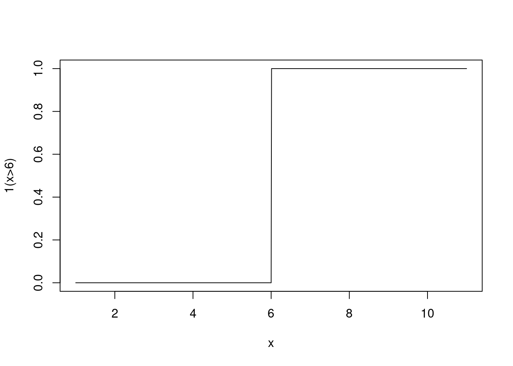
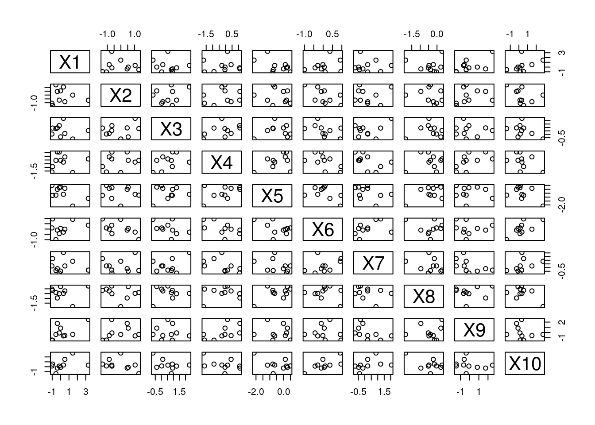

Welcome
A Sample Course
Please email me for access to a private Github repository with course materials such as a syllabus, course schedule, and assignments.
You will notice that some of the exercise questions are unusually specific. For example, they will ask the student to assign the answer in a certain form to a variable with a very specific name. This is because they are written with automatic grading in mind. All of exercises have been very generously “battle tested” by the Fall 2021 STAT 5430 class at the University of Virginia. R scripts were graded with the gradeR package (Brown 2020), and Python scripts with the Otter-Grader library (Pyles 2019).
License(s)

The textbook is licensed under a Creative Commons Attribution-NonCommercial-ShareAlike 4.0 International License. The code used to generate the text is licensed under a Creative Commons Zero v1.0 Universal license.
Preface
About this book
This book is written to be used in a computing class that teaches both R and Python to graduate students in a statistics or data science department. This book is written for students that do not necessarily possess any previous familiarity with writing code.
If you are using them for analyzing data, R and Python do a lot of the same things in pretty similar ways, so it does not always make sense to either a.) teach one language after the other, or b.) choose one over the other. The side-by-side approach helps to teach/learn more, save time, and reinforce shared concepts and key differences.
This text does not describe statistical modeling techniques in detail, but many exercises will ask students to implement them. These exercises will not assume mathematical familiarity. The objective is to test programming ability, and an added benefit is that the work might be useful later in their careers.
This book is written for aspiring data scientists, not necessarily aspiring software developers. Why do I draw the distinction? When discussing different types, for example, I do not discuss data structures in any depth. Rather, I discuss examples of applications where different types would be most useful.
Generally speaking, chapters should be read in order, but occasionally skipping ahead can be beneficial. Later chapters are more may assume some familiarity with previous chapters. Also, within a chapter’s section, sometimes a discussion for a particular topic in Python, say, might follow a discussion about the same topic in R. In this case, the later section will often assume that the previous section has been read first.
Conventions
Sometimes R and Python code look very similar, or even identical. This is why I usually separate R and Python code into separate sections. However, sometimes I do not, so whenever it is necessary to prevent confusion, I will remind you what language is being used in comments (more about comments in @ref(hello-world-in-python) ).
# in python
print('hello world')
## hello world# in R
print('hello world')
## [1] "hello world"Installing the Required Software
To get started, you must install both R and Python. The installation process depends on what kind of machine you have (e.g. what type of operating system your machine is running, is your processor \(32\) or \(64\) bit, etc.).
Below, I suggest running R with RStudio, and Python with Anaconda, and I provide some helpful links. I suggest downloading these two bundles separately; however, I should note that the recommendation below is not the only installation method. For example: - one can run R and Python without downloading RStudio or Anaconda, - one can install RStudio with Anaconda, - one can run Python from within Rstudio, - one can run Python from within Rstudio that is managed by Anaconda, etc., and - options and procedures are very likely to change over time.
Instructors can prefer alternative strategies, if they wish. If they do, they should verify that Python’s version is >=3.6, and R’s is >=4.0.0. If so, all the code in this book should run.
Installing R (and RStudio)
It is recommended that you install R and RStudio Desktop. RStudio Desktop is a graphical user interface with many tools that making writing R easier and more fun.
Install R from the Comprehensive R Archive Network (CRAN). You can access instructions for your specific machine by clicking here.
You can get RStudio Desktop directly from the company’s website.
Installing Python by Installing Anaconda
It is recommended that you install Anaconda, which is a package manager, environment manager, and Python distribution with many third party open source packages. It provides a graphical user interface for us, too, just as RStudio does. You can access instructions for your specific machine and OS by clicking here.
(PART) Introducing the Basics
1 Introduction
Now that you have both R and Python installed, we can get started by taking a tour of our two different integrated development environments environments (IDEs) RStudio and Spyder.
In addition, I will also discuss a few topics superficially, so that we can get our feet wet:
- printing,
- creating variables, and
- calling functions.
1.1 Hello World in R
Go ahead and open up RStudio. It should look something like this

(#fig:rstudio)RStudio
I changed my “Editor Theme” from the default to “Cobalt” because it’s easier on my eyes. If you are opening RStudio for the first time, you probably see a lot more white. You can play around with the theme, if you wish, after going to Tools -> Global Options -> Appearance.
The console, which is located by default on the lower left panel, is the place that all of your code gets run. For short one-liners, you can type code directly into the console. Try typing the following code in there. Here we are making use of the print() function.
In R, functions are “first-class objects,” which means can refer to the name of a function without asking it to do anything. However, when we do want to use it, we put parentheses after the name. This is called calling the function or invoking the function. If a function call takes any arguments (aka inputs), then the programmer supplies them between the two parentheses. A function may return values to be subsequently used, or it may just produce a “side-effect” such as printing some text, displaying a chart, or read/writing information to an external data source.
print('hello R world')
## [1] "hello R world"During the semester, we will write more complicated code. Complicated code is usually written incrementally and stored in a text file called a script. Click File -> New File -> R Script to create a new script. It should appear at the top left of the RStudio window (see Figure @ref(fig:rstudio) ) . After that, copy and paste the following code into your script window.
print('hello world')
print("this program")
print('is not incredibly interesting')
print('but it would be a pain')
print('to type it all directly into the console')
myName <- "Taylor"
print(myName)This script will run five print statements, and then create a variable called myName. The print statements are of no use to the computer and will not affect how the program runs. They just display messages to the human running the code.
The variable created on the last line is more important because it is used by the computer, and so it can affect how the program runs. The operator <- is the assignment operator. It takes the character constant "Taylor", which is on the right, and stores it under the name myName. If we added lines to this program, we could refer to the variable myName in subsequent calculations.
Save this file wherever you want on your hard drive. Call it awesomeScript.R. Personally, I saved it to my desktop.
After we have a saved script, we can run it by sending all the lines of code over to the console. One way to do that is by clicking the Source button at the top right of the script window (see Figure @ref(fig:rstudio) ).
Another way is that we can use R’s source() function. We can run the following code in the console.
# Anything coming after the pound/hash-tag symbol
# is a comment to the human programmer.
# These lines are ignored by R
setwd("/home/taylor/Desktop/")
source("awesomeScript.R")The first line changes the working directory to Desktop/. You, dear reader, should change this line by replacing Desktop/ to whichever folder you chose to save awesomeScript.R in. If you would like to find out what your working directory is currently set to, you can use getwd().
Every computer has a different folder/directory structure–that is why it is highly recommended you refer to file locations as seldom as possible in your scripts. This makes your code more portable. When you send your file to someone else (e.g. your instructor or your boss), she will have to remove or change every mention of any directory. This is because those directories (probably) won’t exist on her machine.
The second line calls source(). This function finds the script file and executes all the commands found in that file sequentially.
A third way is to tell R to run awesomeScript.R from the command line. We will describe this approach in more detail in section @ref(running-scripts-from-the-command-line)
1.2 Hello World in Python
First, start by opening Anaconda Navigator. It should look something like this:

(#fig:anaconda-navigator)Anaconda Navigator
Recall that we will exclusively assume the use of Spyder in this textbook. Open that up now. It should look something like this:

(#fig:spyder)Spyder
It looks a lot like RStudio, right? The script window is still on the left hand side, but it takes up the whole height of the window this time. However, you will notice that the console window has moved. It’s over on the bottom right now.
Again, you might notice a lot more white when you open this for the first time. Just like last time, I changed my color scheme. You can change yours by going to Tools -> Preferences and then exploring the options available under the Appearances tab.
Try typing the following line of code into the console.
# this looks like R code but it's Python code!
print("hello Python world")
## hello Python worldAlready we have many similarities between our two languages. Both R and Python have a print() function, and they both use the same symbol to start a comment: #. Finally, they both define character/string constants with quotation marks In both languages, you can use either single or double quotes.
We will also show below that both languages share the same three ways to run scripts. Nice!
Let’s try writing our first Python script. R scripts end in .r or .R, while Python scripts end in .py. Call this file awesomeScript.py.
# save this as awesomeScript.py
print('hello world')
print("this program")
print('is pretty similar to the last program')
print('it is not incredibly interesting, either')
my_name = "Taylor"
print(my_name)Notice that the assignment operator is different in Python. It’s an =1.
Just like RStudio, Spyder has a button that runs the entire script from start to finish. It’s the green triangle button (see Figure @ref(fig:spyder) ).
You can also write code to run awesomeScript.py. There are a few ways to do this, but here’s the easiest.
import os
os.chdir('/home/taylor/Desktop')
runfile("awesomeScript.py")This is also pretty similar to the R code from before. os.chdir() sets our working directory to the Desktop. Then runfile() runs all of the lines in our program, sequentially, from start to finish.
The first line is new, though. We did not mention anything like this in R, yet. We will talk more about importing modules in section @ref(loading-packages-in-python). Suffice it to say that we imported the os module to make the chdir() function available to us.
Third, we can tell Python to run awesomeScript.py from the command line. We will describe this approach in more detail in chapter @(running-scripts-from-the-command-line)
1.3 Getting Help
1.3.1 Reading Documentation
Programming is not about memorization. Nobody can memorize, for example, every function and all of its arguments. So what do programmers do when they get stuck? The primary way is to find and read the documentation.
Getting help in R is easy. If you want to know more about a function, type into the console the name of the function with a leading question mark. For example, ?print or ?setwd. You can also use help() and help.search() to find out more about functions (e.g. help(print)). Sometimes you will need to put quotation marks around the name of the function (e.g. ?":").
This will not open a separate web browser window, which is very convenient. If you are using RStudio, you have some extra benefits. Everything will look very pretty, and you can search through the text by typing phrases into the search bar in the “Help” window.
In Python, the question mark comes after the name of the function2 (e.g. print?), and you can use help(print) just as in R.
In Spyder, if you want the documentation to appear in the Help window (it looks prettier), then you can type the name of the function, and then Ctrl-i (Cmd-i on a mac keyboard).
1.3.2 Understanding File Paths
File paths look different on different operating systems. Mac and Linux machines tend to have forward slashes (i.e. /), while Windows machines tend to use backslashes (i.e. \).
Depending on what kind of operating system is running your code, you will need to change the file paths. It is important for everyone writing R and Python code to understand how things work on both types of machines–just because you’re writing code on a Windows machine doesn’t mean that it won’t be run on a Mac, or vice versa.
The directory repeatedly mentioned in the code above was /home/taylor/Desktop. This is a directory on my machine which is running Ubuntu Linux. The leading forward slash is the root directory. Inside that is the directory home/, and inside that is taylor/, and inside that is Desktop/. If you are running MacOS, these file paths will look very similar. The folder home/ will most likely be replaced with Users/.
On Windows, things are a bit different. For one, a full path starts with a drive (e.g. C:). Second, there are backslashes (not forward slashes) to separate directory names (e.g C:\Users\taylor\Desktop).
Unfortunately, backslashes are a special character in both R and Python. Whenever you type a \, it will change the meaning of whatever comes after it. In other words, \ is known as an escape character.
In both R and Python, the backslash character is used to start an “escape” sequence. You can see some examples in R by clicking here, and some examples in Python by clicking here. In Python it may also be used to allow long lines of code to take up more than one line in a text file.
The recommended way of handling this is to just use forward slashes instead. For example, if you are running Windows, C:/Users/taylor/Desktop/myScript.R will work in R, and C:/Users/taylor/Desktop/myScript.py will work in Python.
You may also use “raw string constants” (e.g. r'C:\Users\taylor\Desktop\my_file.txt' ). “Raw” means that \ will be treated as a literal character instead of an escape character.
Alternatively, you can “escape” the backslashes by replacing each single backslash with a double backslash.
2 Basic Types
In every programming language, data is stored in different ways. Writing a program that manipulates data requires understanding all of the choices. That is why we must be concerned with the different types of data in our R and Python programs. Different types are suitable for different purposes.
There are similarities between Python’s and R’s type systems. However, there are may differences as well. Be prepared for these differences. There are many more of them in this chapter than there were in the previous chapter!
If you’re ever unsure what type a variable has, use type() (in Python) or typeof() (in R) to query it.
Storing an individual piece of information is simple in both languages. However, while Python has scalar types, R does not draw as strong of a distinction between scalar and compound types.
2.1 Basic Types In Python
In Python, the simplest types we frequently use are str (short for string), int (short for integer), float (short for floating point) and bool (short for Boolean). This list is not exhaustive, but these are a good collection to start thinking about. For a complete list of built-in types in Python, click here.
print(type('a'), type(1), type(1.3))
## <class 'str'> <class 'int'> <class 'float'>Strings are useful for processing text data such as names of people/places/things and messages such as texts, tweets and emails. If you are dealing with numbers, you need floating points if you have a number that might have a fractional part after its decimal; otherwise you’ll need an integer. Booleans are useful for situations where you need to record whether something is true or false. They are also important to understand for control-flow in section @ref(control-flow).
In the next section we will discuss the Numpy library. This library has a broader collection of basic types that allows for finer control over any script you write.
2.1.1 Type Conversions in Python
We will often have to convert between types in a Python program. This is called type conversion, and it can be either implicitly or explicitly done.
For example, ints are often implicitly converted to floats, so that arithmetic operations work.
my_int = 1
my_float = 3.2
my_sum = my_int + my_float
print("my_int's type", type(my_int))
## my_int's type <class 'int'>
print("my_float's type", type(my_float))
## my_float's type <class 'float'>
print(my_sum)
## 4.2
print("my_sum's type", type(my_sum))
## my_sum's type <class 'float'>You might be disappointed if you always count on this behavior, though.
3.2 + "3.2"
## Error in py_call_impl(callable, dots$args, dots$keywords): TypeError: unsupported operand type(s) for +: 'float' and 'str'
##
## Detailed traceback:
## File "<string>", line 1, in <module>Explicit conversions occur when we as programmers explicitly ask Python to perform a conversion. We will do this with the functions such as int(), str(), float(), and bool().
my_date = "5/2/2021"
month_day_year = my_date.split('/')
my_year = int(month_day_year[-1])
print('my_year is equal to ', my_year, 'and its type is ', type(my_year))
## my_year is equal to 2021 and its type is <class 'int'>2.2 Basic Types In R
In R, the names of basic types are only slightly different. They are logical (instead of bool), integer (instead of int), double or numeric (instead of float)3, character (instead of str), complex (for calculations involving imaginary numbers), and raw (useful for working with bytes).
# cat() is kind of like print()
cat(typeof('a'), typeof(1), typeof(1.3))
## character double doubleIn this case R automatically upgraded 1 to a double. If you wanted to force it to be an integer, you can add a capital “L” to the end of the number.
# cat() is kind of like print()
cat(typeof('a'), typeof(1L), typeof(1.3))
## character integer double2.2.1 Type Conversions in R
You can explicitly and implicitly convert types in R just as you did in Python. Implicit conversion looks like this.
myInt = 1
myDouble = 3.2
mySum = myInt + myDouble
print(paste0("my_int's type is ", typeof(myInt)))
## [1] "my_int's type is double"
print(paste0("my_float's type is ", typeof(myDouble)))
## [1] "my_float's type is double"
print(mySum)
## [1] 4.2
print(paste0("my_sum's type is ", typeof(mySum)))
## [1] "my_sum's type is double"Explicit conversion can be achieved with functions such as as.integer, as.logical, as.double, etc.
print(typeof(1))
## [1] "double"
print(typeof(as.logical(1)))
## [1] "logical"2.2.2 R’s Simplification
The basic types of R are a little different than the basic types of Python. On the one hand, Python has basic types for individual elements, and it uses separate types as containers for storing many elements. On the other, R uses the same type to store a single element as it does to store many elements. Strictly speaking, R does not have a scalar type.
Technically, all of the examples we just did in R are using length one vectors–logical integer double, character, complex, and raw are the possible modes of a vector. vectors will be discussed further section @ref(r-vectors-versus-numpy-arrays-and-pandas-series).
Think about which option you prefer. What are the benefits of using separate types for scalars and collections? What are the benefits of using the same type?
2.3 Exercises
2.3.1 R Questions
Which R base type is ideal for each piece of data? Assign your answers to a
charactervectorof length four calledquestionOne.- An individual’s IP address
- whether or not an individual attended a study
- the number of seeds found in a plant
- the amount of time it takes for a car to race around a track
Floating points are weird. What gets printed is not the same as what is stored! In R, you can control how many digits get printed by using the
optionsfunction.- Assign
ato2/3 printa, and copy/paste what you see into the variableaPrint. Make sure it is acharacter.- Take a look at the documentation for
options. Assign the value ofoptions()$digitstonumDigitsStart - Change the number of digits to
22 - Again,
print,aand copy/paste what you see into the variableaPrintv2. Make sure it is acharacter. - Assign the output of
options()$digitstonumDigitsEnd
- Assign
Floating points are weird. What gets stored might not be what you want. “The only numbers that can be represented exactly in R’s numeric type are integers and fractions whose denominator is a power of 2.”
- Assign the squre root of 2 to
mySqrt - Print the square of this variable
- Test (using
==) that this variable is equal to2. Assign the result of this test toisTwoRecoverable - Test for near equality (using
all.equal) that this variable is “equal” to2. Assign the result of this test tocloseEnough. Make sure to read the documentation for this function because the return type can be tricky!
- Assign the squre root of 2 to
2.3.2 Python Questions
Which Python type is ideal for each piece of data? Assign your answers to a
listofstrings calledquestion_one.- An individual’s IP address
- whether or not an individual attended a study
- the number of seeds found in a plant
- the amount of time it takes for a car to race around a track
Floating points are weird. What gets printed is not the same as what is stored! In Python, you need to edit a class’s
__str__method if you want to control how many digits get printed, but we won’t do that. Instead, we’ll usestr.format()to return a string directly (instead of copy/paste-ing it).- Assign
ato2/3 printa, and copy/paste what you see into the variablea_print- Create a
strthat displays 22 digits of 2/3. Call ita_printv2 printthe above string
- Assign
Floating points are weird. What gets stored might not be what you want. The Python documentation has an excellent discussion of how storage behavior can be surprising. Click here to read it.
- Assign the squre root of 2 to
my_sqrt printthe square of this variable- Test (using
==) that this variable is equal to2. Assign the result of this test tois_two_recoverable - Test for near equality (using
np.isclose) that this variable is “equal” to2. Assign the result of this test toclose_enough.
- Assign the squre root of 2 to
3 R vectors versus Numpy arrays and Pandas’ Series
This section is for describing the data types that let us store collections of elements that all share the same type. Data is very commonly stored in this fashion, so this section is quite important. Once we have one of these collection objects in a program, we will be interested in learning how to extract and modify different elements in the collection, as well as how to use the entire collection in an efficient calculation.
3.1 Overview of R
In the previous section, I mentioned that R does not have scalar types–it just has vectors. So, whether you want to store one number (or logical, or character, or …), or many numbers, you will need a vector.
For many, the word “vector” evokes an impression that these objects are designed to be used for performing matrix arithmetic (e.g. inner products, transposes, etc.). You can perform these operations on vectors, but in my opinion, this preconception can be misleading, and I recommend avoiding it. Most of the things you can do with vectors in R have little to do with linear algebra!
How do we create one of these? There are many ways. One common way is to read in elements from an external data set. Another way is to generate vectors from code.
1:10 # consecutive integers
## [1] 1 2 3 4 5 6 7 8 9 10
seq(1,10,2) # arbitrary sequences
## [1] 1 3 5 7 9
rep(2,5) # repeating numbers
## [1] 2 2 2 2 2
c("5/2/2021", "5/3/2021", "5/4/2021") # combine elements without relying on a pattern
## [1] "5/2/2021" "5/3/2021" "5/4/2021"
rnorm(10) # generate Gaussian random variables
## [1] 0.64039551 0.25240806 1.37401077 2.25447855 -1.29881033 0.02720972 1.92920495 -0.07117049 -0.06157727
## [10] -0.58348310c() is short for “combine.” seq() and rep() are short for “sequence” and “replicate,” respectively. rnorm() samples normal (or Gaussian) random variables. There is plenty more to learn about these functions, so I encourage you to take a look at their documentation.
I should mention that functions such as rnorm() don’t create truly random numbers, just pseudorandom ones. Pseudorandom numbers are nearly indecipherable from truly random ones, but the way the computer generates them is actually deterministic.
First, a seed, or starting number is chosen. Then, the pseudorandom number generator (PRNG) maps that number to another number. The sequence of all the numbers appears to be random, but is actually deterministic.
Sometimes you will be interested in setting the seed on your own because it is a cheap way of sharing and communicating data with others. If two people use the same starting seed, and the same PRNG, then they should simulate the same data. This can be important if you want to help other people reproduce the results of code you share. Most of the time, though, I don’t set the seed, and I don’t think about the distinction between random and pseudorandom numbers.
3.2 Overview of Python
If you want to store many elements of the same type (and size) in Python, you will probably need a Numpy array. Numpy is a highly-regarded third party library (Harris et al. 2020) for Python. Its array objects store elements of the same type, just as R’s vectors do.
There are five ways to create numpy arrays (source). Here are some examples that complement the examples from above.
import numpy as np
np.array([1,2,3])
## array([1, 2, 3])
np.arange(1,12,2)
## array([ 1, 3, 5, 7, 9, 11])
np.random.normal(size=3)
## array([-0.78583785, -0.13803104, 0.5196683 ])Another option for storing a homogeneous collection of elements in Python is a Series object from the Pandas library. The benefit of these is that they play nicely with Pandas’ data frames (more information about Pandas’ data frames can be found in @ref(data-frames-in-python)), and that they have more flexibility with accessing elements by name ( see here for more information ).
import pandas as pd
first = pd.Series([2, 4, 6])
second = pd.Series([2, 4, 6], index = ['a','b','c'])
print(first[0])
## 2
print(second['c'])
## 63.3 Vectorization in R
An operation in R is vectorized if it applies to all of the elements of a vector at once. An operator that is not vectorized can only be applied to individual elements. In that case, the programmer would need to write more code to instruct the function to be applied to all of the elements of a vector. You should prefer writing vectorized code because it is usually easier to read. Moreover, many of these vectorized functions are written in compiled code, so they can often be much faster.
Arithmetic (e.g. +, -, *, /, ^, %%, %/%, etc.) and logical (e.g. !, |, &, >, >=, <, <=, ==, etc.) operators are commonly applied to one or two vectors. Arithmetic is usually performed element-by-element. Numeric vectors are converted to logical vectors if they need to be. Be careful of operator precedence if you seek to minimize your use of parentheses.
Note that there are an extraordinary amount of named functions (e.g. sum(), length(), cumsum(), etc.) that operate on entire vectors, as well. Here are some examples.
(1:3) * (1:3)
## [1] 1 4 9
(1:3) == rev(1:3)
## [1] FALSE TRUE FALSE
sin( (2*pi/3)*(1:5))
## [1] 8.660254e-01 -8.660254e-01 -2.449294e-16 8.660254e-01 -8.660254e-01In the last example, there is recycling happening. (2*pi/3) is taking three length-one vectors and producing another length-one vector. The resulting length-one vector is multiplied by a length five vector 1:5. The single element in the length one vector gets recycled so that its value is multiplied by every element of 1:5.
This makes sense most of the time, but sometimes recycling can be tricky. Notice that the following code does not produce an error–just a warning.
(1:3) * (1:4)
## Warning in (1:3) * (1:4): longer object length is not a multiple of shorter object length
## [1] 1 4 9 43.4 Vectorization in Python
The Python’s Numpy library makes extensive use of vectorization as well. Vectorization in Numpy is accomplished with universal functions, or “ufuncs” for short. Some ufuncs can be invoked using the same syntax as in R (e.g. +). You can also refer to function by its name (e.g. np.sum() instead of +). Mixing and matching is allowed, too.
Ufuncs are called unary if they take in one array, and binary if they take in two. At the moment, there are fewer than \(100\) available, all performing either mathematical operations, boolean-emitting comparisons, or bit-twiddling operations. For an exhaustive list of Numpy’s universal functions, click here. Here are some code examples.
np.arange(1,4)*np.arange(1,4)
## array([1, 4, 9])
np.zeros(5) > np.arange(-3,2)
## array([ True, True, True, False, False])
np.exp( -.5 * np.linspace(-3, 3, 10)**2) / np.sqrt( 2 * np.pi)
## array([0.00443185, 0.02622189, 0.09947714, 0.24197072, 0.37738323,
## 0.37738323, 0.24197072, 0.09947714, 0.02622189, 0.00443185])Instead of calling it “recycling,” Numpy calls reusing elements of a shorter array in a binary operation broadcasting. It’s the same idea as in R, but in general, Python is stricter and disallows more scenarios.
np.arange(1,3)*np.arange(1,4)
## Error in py_call_impl(callable, dots$args, dots$keywords): ValueError: operands could not be broadcast together with shapes (2,) (3,)
##
## Detailed traceback:
## File "<string>", line 1, in <module>If you are working with string arrays, Numpy has a np.char module with many useful functions.
a = np.array(['a','b','c'])
np.char.upper(a)
## array(['A', 'B', 'C'], dtype='<U1')Then there are the Series objects from Pandas. Ufuncs continue to work in the same way on Series objects, and they respect common index values.
s1 = pd.Series(np.repeat(100,3))
s2 = pd.Series(np.repeat(10,3))
s1 + s2
## 0 110
## 1 110
## 2 110
## dtype: int64If you feel more comfortable, and you want to coerce these Series objects to Numpy arrays before working with them, you can do that. For example, the following works.
s = pd.Series(np.linspace(-1,1,5))
np.exp(s.to_numpy())
## array([0.36787944, 0.60653066, 1. , 1.64872127, 2.71828183])In addition, Series objects possess many extra attributes and methods.
ints = pd.Series(np.arange(10))
ints.abs()
## 0 0
## 1 1
## 2 2
## 3 3
## 4 4
## 5 5
## 6 6
## 7 7
## 8 8
## 9 9
## dtype: int64
ints.mean()
## 4.5
ints.floordiv(2)
## 0 0
## 1 0
## 2 1
## 3 1
## 4 2
## 5 2
## 6 3
## 7 3
## 8 4
## 9 4
## dtype: int64Series objects that have text data are a little bit different. For one, you have to access the .str attribute of the Series before calling any vectorized methods. Here are some examples.
s = pd.Series(['a','b','c','33'])
s.dtype## dtype('O')s.str.isdigit()## 0 False
## 1 False
## 2 False
## 3 True
## dtype: bools.str.replace('a', 'z')## 0 z
## 1 b
## 2 c
## 3 33
## dtype: objectString operations can be a big game changer, and we discuss text processing strategies in more detail in section @(working-with-text-data).
3.5 Indexing Vectors in R
It is very common to want to extract or modify a subset of elements in a vector. There are a few ways to do this. All of the ways I discuss will involve the square bracket operator (i.e. []). Feel free to retrieve the documentation by typing ?'['.
allElements <- 1:6
allElements[seq(2,6,2)] # extract evens
## [1] 2 4 6
allElements[-seq(2,6,2)] <- 99 # replace all odds with 99
allElements[allElements > 2] # get nums bigger than 2
## [1] 99 99 4 99 6To access the first element, we use the index 1. To access the second, we use 2, and so on. Also, the - sign tells R to remove elements. Both of these functionalities are very different from Python, as we will see shortly.
We can use names to access elements elements, too, but only if the elements are named.
sillyVec <- c("favorite"=1, "least favorite" = 2)
sillyVec['favorite']
## favorite
## 13.6 Indexing Numpy arrays
Indexing Numpy arrays is very similar to indexing vectors in R. You use the square brackets, and you can do it with logical arrays or index arrays. There are some important differences, though.
For one, indexing is 0-based in Python. The 0th element is the first element of an array. Another key difference is that the - isn’t used to remove elements like it is in R, but rather to count backwards. Third, using one or two : inside square brackets is more flexible in Python. This is syntactic sugar for using the slice() function, which is similar to R’s seq() function.
one_through_ten = np.arange(1, 11)
one_through_ten[np.array([2,3])]
## array([3, 4])
one_through_ten[1:10:2] # evens
## array([ 2, 4, 6, 8, 10])
one_through_ten[::-1] # reversed
## array([10, 9, 8, 7, 6, 5, 4, 3, 2, 1])
one_through_ten[-2] = 99 # second to last
one_through_ten
## array([ 1, 2, 3, 4, 5, 6, 7, 8, 99, 10])
one_through_ten[one_through_ten > 3] # bigger than three
## array([ 4, 5, 6, 7, 8, 99, 10])3.7 Indexing Pandas’ Series
At a minimum, there is little that is new that you need to learn to go from Numpy arrays to Pandas’ Series objects. They still have the [] operator, and many methods are shared across these two types. The following is almost equivalent to the code above, and the only apparent difference is that the results are printed a little differently.
import pandas as pd
one_through_ten = pd.Series(np.arange(1, 11))
one_through_ten[np.array([2,3])]
## 2 3
## 3 4
## dtype: int64
one_through_ten[1:10:2] # evens
## 1 2
## 3 4
## 5 6
## 7 8
## 9 10
## dtype: int64
one_through_ten[::-1] # reversed
## 9 10
## 8 9
## 7 8
## 6 7
## 5 6
## 4 5
## 3 4
## 2 3
## 1 2
## 0 1
## dtype: int64
one_through_ten[-2] = 99 # second to last
one_through_ten
## 0 1
## 1 2
## 2 3
## 3 4
## 4 5
## 5 6
## 6 7
## 7 8
## 8 9
## 9 10
## -2 99
## dtype: int64
one_through_ten[one_through_ten > 3] # bigger than three
## 3 4
## 4 5
## 5 6
## 6 7
## 7 8
## 8 9
## 9 10
## -2 99
## dtype: int64
one_through_ten.sum()
## 154However, Pandas’ Series have .loc and .iloc methods. We won’t talk much about these two methods now, but they will become very important when we start to discuss Pandas’ data frames in section @ref(data-frames-in-python).
one_through_ten.iloc[2]
## 3
one_through_ten.loc[2]
## 33.8 Some Gotchas
3.8.1 Shallow versus Deep Copies
In R, assignment usually produces a deep copy. In the code below, we create b from a. If we modify b, these changes don’t affect a. This takes up more memory, but our program is easier to follow as we don’t have to keep track of connections between objects.
# in R
a <- c(1,2,3)
b <- a
b[1] <- 999
a # still the same!
## [1] 1 2 3With Numpy arrays in Python, “shallow copies” can be created by simple assignment, or by explicitly constructing a view. In the code below, a, b, c, and d all share the same data. If you modify one, you change all the others. This can make the program more confusing, but on the other hand, it can also improve computational efficiency.
# in python
a = np.array([1,2,3])
b = a # b is an alias
c = a.view() # c is a view
d = a[:]
b[0] = 999
a # two names for the same object in memory
## array([999, 2, 3])
b
## array([999, 2, 3])
c
## array([999, 2, 3])
d
## array([999, 2, 3])It’s the same story with Pandas’ Series objects. You’re usually making a “shallow” copy.
# in python
import pandas as pd
s1 = pd.Series(np.array([100.0,200.0,300.0]))
s2 = s1
s3 = s1.view()
s4 = s1[:]
s1[0] = 999
s1
## 0 999.0
## 1 200.0
## 2 300.0
## dtype: float64
s2
## 0 999.0
## 1 200.0
## 2 300.0
## dtype: float64
s3
## 0 999.0
## 1 200.0
## 2 300.0
## dtype: float64
s4
## 0 999.0
## 1 200.0
## 2 300.0
## dtype: float64If you want a “deep copy” in Python, you usually want a function or method called copy(). Use np.copy or np.ndarray.copy when you have a Numpy array.
# in python
a = np.array([1,2,3])
b = np.copy(a)
c = a.copy()
b[0] = 999
a
## array([1, 2, 3])
b
## array([999, 2, 3])
c
## array([1, 2, 3])Use pandas.Series.copy with Pandas’ Series objects. Make sure not to set the deep argument to False. Otherwise you’ll get a shallow copy.
# in python
s1 = pd.Series(np.array([1,2,3]))
s2 = s1.copy()
s3 = s1.copy(deep=False)
s1[0] = 999
s1
## 0 999
## 1 2
## 2 3
## dtype: int64
s2
## 0 1
## 1 2
## 2 3
## dtype: int64
s3
## 0 999
## 1 2
## 2 3
## dtype: int643.8.2 How R and Python Handle Missing Values
R has NULL, NaN, and NA. Python has None and np.nan. If your eyes are glazing over already and you’re thinking “they all look like the same”–they are not.
R’s NULL and Python’s None are similar. Both represent “nothingness.” This is not the same as 0, or an empty string, or FALSE/False. This is commonly used to detect if a user fails to pass in an argument to a function, or if a function fails to “return” (more information on functions can be found in section @ref(functions)) anything meaningful.
In R, for example, if a function fails to return anything, then it actually returns a NULL. A NULL object has its own type.
NULL == FALSE
## logical(0)
NULL == NULL
## logical(0)
# create a function that doesn't return anything
# more information on this later
doNothingFunc <- function(a){}
thing <- doNothingFunc() # call our new function
is.null(thing)
## [1] TRUE
typeof(NULL)
## [1] "NULL"In Python, we have the following.
None == False
## False
None == None
# create a function that doesn't return anything
# more information on this later
## True
def do_nothing_func():
pass
thing = do_nothing_func()
if thing is None:
print("thing is None!")
## thing is None!
type(None)
## <class 'NoneType'>“NaN” abbreviates “not a number.” NaN is an object of type double in R, and np.nan is of type float in Python. It can come in handy when you (deliberately or accidentally) perform undefined calculations such as \(0/0\) or \(\infty / -\infty\).
# in R
0/0
## [1] NaN
Inf/Inf
## [1] NaN
is.na(0/0)
## [1] TRUE# in Python
0/0
## Error in py_call_impl(callable, dots$args, dots$keywords): ZeroDivisionError: division by zero
##
## Detailed traceback:
## File "<string>", line 1, in <module>
import numpy as np
np.inf/np.inf
## nan
np.isnan(np.nan)
## True“NA” is short for “not available.” Missing data is a fact of life in data science. Observations are often missing in data sets, introduced after joining/merging data sets together (more on this in section @ref(merging-or-joining-data-sets)), or arise from calculations involving underflow and overflow. There are many techniques designed to estimate quantities in the presence of missing data. When you code them up, you’ll need to make sure you deal with NAs properly.
# in R
babyData <- c(0,-1,9,NA,21)
NA == TRUE
## [1] NA
is.na(babyData)
## [1] FALSE FALSE FALSE TRUE FALSE
typeof(NA)
## [1] "logical"Unfortunately, Python’s support of an NA-like object is more limited. There is no NA object in base Python. And often NaNs will appear in place of an NA. There are a few useful tools, though. The Numpy library offers “masked arrays”, for instance.
Also, as of version 1.0.0, the pandas library has an experimental pd.NA object. However, they warn that “the behaviour of pd.NA can still change without warning.”
import numpy as np
import numpy.ma as ma
baby_data = ma.array([0,-1,9,-9999, 21]) # -9999 "stands for" missing
baby_data[3] = ma.masked
np.average(baby_data)
## 7.25Be careful of using extreme values to stand in for what should be an NA. Be aware that some data providers will follow this strategy. I recommend that you avoid it yourself. Failing to represent a missing value correctly would lead to extremely wrong calculations!
3.9 Exercises
3.9.1 R Questions
Let’s flip some coins! Generate a thousand flips of a fair coin. Use
rbinom, and let heads be coded as1and tails coded as0.- Assign the thousand raw coin flips to a variable
flips. Make sure the elements are integers, and make sure you flip a “fair” coin (\(p=.5\)). - Create a length
1000logicalvectorcalledisHeads. Whenever you get a heads, make sure the corresponding element isTRUEandFALSEotherwise. - Create a variable called
numHeadsby tallying up the number of heads. - Calculate the percent of time that the number changes in
flips. Assign your number toacceptanceRate. Try to write only one line of code to do this.
- Assign the thousand raw coin flips to a variable
Say you have a
vectorof prices of some financial asset:
prices <- c(100.10, 95.98, 100.01, 99.87)Convert this vector into a vector of log returns. Call the variable
logReturns. If \(p_t\) is the price at time \(t\), the log return ending at time \(t\) is \[ r_t = \log \left( \frac{p_t}{p_{t-1}} \right) = \log p_t - \log p_{t-1}\]Do the same for arithmetic returns. These are regular percent changes if you scale by \(100\). Call the variable
arithReturns. The mathematical formula you need is \[ a_t = \left( \frac{p_t - p_{t-1} }{p_{t-1}} \right) \times 100 \]
- Consider another mixture density \(f(y) = \int f(y \mid x) f(x) dx\) where
\[ Y \mid X = x \sim \text{Normal}(0, x^2) \] and
\[ X \sim \text{half-Cauchy}(0, 1). \] This distribution is a special case of a prior distribution that is used in Bayesian statistics (Carvalho, Polson, and Scott 2009).
Suppose further that you are interested in calculating the probability that one of these random variables ends up being too far from the median:
\[ \mathbb{P}[|Y| > 1] = \int_{y : |y| > 1} f(y)dy = \int_{y : |y| > 1} \int_{-\infty}^\infty f(y \mid x) f(x) dx dy. \]
Simulate \(X_1, \ldots, X_{5000}\) from a \(\text{half-Cauchy}(0, 1)\) and call these samples
xSamps. Hint: you can simulate from a \(t\) distribution with one degree of freedom to sample from a Cauchy. Once you have regular Cauchy samples, take the absolute value of each one.Simulate \(Y_1 \mid X_1, \ldots, Y_{5000} \mid X_{5000}\) and call the samples
ySamps.Calculate the approximate probability using
ySampsand call itapproxProbDev1.Why is simply “ignoring”
xSamps, the samples you condition on, “equivalent” to “integrating out \(x\)?” Store a string response as a length \(1\) character vector calledintegratingOutResp.Calculate another Rao-Blackwellized Monte Carlo estimate of \(\mathbb{P}[|Y| > 1]\) from
xSamps. Call itapproxProbDev2. Hint: \(\mathbb{P}[|Y| > 1] = \mathbb{E}[\mathbb{P}(|Y| > 1 \mid X) ]\). Calculate \(\mathbb{P}(|Y| > 1 \mid X=x)\) with pencil and paper, notice it is a function in \(x\), apply that function to each ofxSamps, and average all of it together.Are you able to calculate an exact solution to \(\mathbb{P}[|Y| > 1]\)?
- Store the ordered uppercase letters of the alphabet in a length \(26\)
charactervectorcalledmyUpcaseLetters. Do not hardcode this. Use a function, along with the variableletters.
Create a new vector called
withReplacementsthat’s the same as the previousvector, but replace all vowels with"---". Again, do not hardcode this. Find a function that searches for patterns and performs a replacement whenever that pattern is found.Create a length \(26\) logical vector that is
TRUEwhenever an element oflettersis a consonant, andFALSEeverywhere else. Call itconsonant.
3.9.2 Python Questions
Let’s flip some coins (again)! Generate a thousand flips of a fair coin. Use
np.random.binomial, and let heads be coded as1and tails coded as0.- Assign the thousand raw coin flips to a variable
flips. Make sure the elements are integers, and make sure you flip a “fair” coin (\(p=.5\)). - Create a length
1000listofbools calledis_heads. Whenever you get a heads, make sure the corresponding element isTrueandFalseotherwise. - Create a variable called
num_headsby tallying up the number of heads. - Calculate the percent of time that the number changes in
flips. Assign your number toacceptance_rate. Try to write only one line of code to do this.
- Assign the thousand raw coin flips to a variable
Use
pd.read_csvto correctly read in"2013-10_Citi_Bike_trip_data_20K.csv"as a data frame calledmy_df. Make sure to readautograding_tips.html.
extract the
"starttime"column into a separateSeriescalleds_timesextract date strings of those elements into a
Seriescalleddate_stringsextract time strings of those elements into a
Seriescalledtime_strings
- We will make use of the Monte Carlo (Robert and Casella 2005) method below. It is a technique to approximate expectations and probabilities. If \(n\) is a large number, and \(X_1, \ldots, X_n\) is a random sample drawn from the distribution of interest, then \[ \mathbb{P}(X > 6) \approx \frac{1}{n}\sum_{i=1}^n \mathbf{1}(X_i > 6). \] If you haven’t seen an indicator function before, it is defined as
\[ \mathbf{1}(X_i > 6) = \begin{cases} 1 & X_i > 6 \\ 0 & X_i \le 6 \end{cases}. \]
If you wanted to visualize it, \(\mathbf{1}(x > 6)\) looks like this.

So, the sum in this expression is just a count of the number of elements that are greater than \(6\).
Evaluate exactly the probability that a normal random variable with mean \(5\) and standard deviation \(6\) is greater than \(6\). Assign it to the variable
exact_exceedance_probin Python.Simulate \(1e3\) times from a standard normal distribution (mean 0 and variance 1). Call the samples
stand_norm_sampsCalculate a Monte Carlo estimate of \(\mathbb{P}(X > 6)\) from these samples. Call it
approx_exceedance_prob1.
- Simulate \(1e3\) times from a normal distribution with mean \(5\) and standard deviation \(6\). Call the samples
norm_samps. Don’t use the old samples in any way.
- Calculate a Monte Carlo estimate of \(\mathbb{P}(X > 6)\) from these new
norm_samps. Call itapprox_exceedance_prob2.
- Alternatively, we can approximate expectations. If \(\mathbb{E}[f(X)]\) exists, \(n\) is a large number, and \(W_1, \ldots, W_n\) is a random sample drawn from the distribution of interest, then
\[ \mathbb{E}[f(W)] \approx \frac{1}{n}\sum_{i=1}^n f(W_i). \]
Here’s a new distribution. It is a mixture distribution, specifically a finite mixture of normal distributions: \(f(y) = f(y \mid X=1)P(X=1) + f(y \mid X=0)P(X=0)\) where
\[ Y \mid X=0 \sim \text{Normal}(0, 2) \\ Y \mid X=1 \sim \text{Normal}(10, 2) \] and
\[ X \sim \text{Bernoulli}(.5). \]
Both \(f(y \mid X=0)\) and \(f(y \mid X=1)\) are bell-curved, and \(f(y)\) looks like this

Evaluate exactly \(\mathbb{E}[Y]\). Assign it to the variable
exact_meanin Python.Simulate \(1e3\) times from the Bernoulli distribution. Call the samples
bernoulli_flipsSimulate \(Y_1 \mid X_1, \ldots, Y_{1000} \mid X_{1000}\) and call the samples
cond_norm_samps.Calculate a Monte Carlo estimate of \(\mathbb{E}[Y]\) from
cond_norm_samps. Call itapprox_ave_1. Why is simply “ignoring”bernoulli_flips, the samples you condition on, “equivalent” to “integrating them out?”Calculate a Rao-Blackwellized Monte Carlo estimate of \(\mathbb{E}[Y]\) from
bernoulli_flips. Call itapprox_ave_2. Hint: \(\mathbb{E}[Y] = \mathbb{E}[\mathbb{E}(Y \mid X) ]\). Calculate \(\mathbb{E}(Y \mid X_i)\) exactly, and evaluate that function on each \(X_i\) sample, and then average them together. Rao-Blackwellization is a variance-reduction technique that allows you come up with lower-variance estimates given a fixed computational budget.
4 Numpy ndarrays Versus R’s matrix and array Types
Sometimes you want a collection of elements that are all the same type, but you want to store them in a two- or three-dimensional structure. For instance, say you need to use matrix multiplication for some linear regression software you’re writing, or that you need to use tensors for a computer vision project you’re working on.
4.1 Numpy ndarrays In Python
In Python, you could still use arrays for these kinds of tasks. You will be pleased to learn that the Numpy arrays we discussed earlier are a special case of Numpy’s N-dimensional arrays. Each array will come with an enormous amount of methods and attributes (more on object-oriented program in chapter @ref(an-introduction-to-object-oriented-programming)) attached to it. A few are demonstrated below.
import numpy as np
a = np.array([[1,2],[3,4]], np.float)
a
## array([[1., 2.],
## [3., 4.]])
a.shape
## (2, 2)
a.ndim
## 2
a.dtype
## dtype('float64')
a.max()
## 4.0
a.resize((1,4)) # modification is **in place**
a
## array([[1., 2., 3., 4.]])Matrix and elementwise multiplication is often useful, too.
b = np.ones(4).reshape((4,1))
np.dot(b,a) # matrix mult.
## array([[1., 2., 3., 4.],
## [1., 2., 3., 4.],
## [1., 2., 3., 4.],
## [1., 2., 3., 4.]])
b @ a # infix matrix mult. from PEP 465
## array([[1., 2., 3., 4.],
## [1., 2., 3., 4.],
## [1., 2., 3., 4.],
## [1., 2., 3., 4.]])
a * np.arange(4) # elementwise mult.
## array([[ 0., 2., 6., 12.]])4.2 The matrix and array classes in R
In Python, adding a dimension to your “container” is simple. You keep using Numpy arrays, and you just change the .shape attribute (perhaps with a call to .reshape() or something similar). In R, there is a stronger distinction between 1-,2-, and 3-dimensional containers. Each has its own class. 2-dimensional containers that store objects of the same type are of the matrix class. Containers with 3 or more dimensions are of the array class. In this section, I will provide a quick introduction to using these two classes. For more information, see chapter 3 of (Matloff 2011).
Just like vectors, matrix objects do not necessarily have to be used to perform matrix arithmetic. Yes, they require all the elements are of the same type, but it doesn’t really make sense to “multiply” matrix objects that hold onto characters.
I usually create matrix objects with the matrix() function or the as.matrix() function. matrix() is to be preferred in my opinion. The first argument is explicitly a vector of all the flattened data that you want in your matrix. On the other hand, as.matrix() is more flexible; it takes in a variety of R objects (e.g. data.frames), and tries to figure out what to do with them on a case-by-case basis. In other words, as.matrix() is a generic function. More information about generic functions is provided in @ref(using-s3-objects).
Some other things to remember with matrix(): byrow= is FALSE by default, and you will also need to specify either ncol= and/or nrow= if you want anything that isn’t a 1-column matrix.
A <- matrix(1:4)
A
## [,1]
## [1,] 1
## [2,] 2
## [3,] 3
## [4,] 4
matrix(1:4, ncol = 2)
## [,1] [,2]
## [1,] 1 3
## [2,] 2 4
matrix(1:4, ncol = 2, byrow = T)
## [,1] [,2]
## [1,] 1 2
## [2,] 3 4
as.matrix(data.frame(firstCol = c(1,2,3), secondCol = c("a","b","c"))) # coerces numbers to characters!
## firstCol secondCol
## [1,] "1" "a"
## [2,] "2" "b"
## [3,] "3" "c"
dim(A)
## [1] 4 1
nrow(A)
## [1] 4
ncol(A)
## [1] 1array() is used to create array objects. This type is used less than the matrix type, but this doesn’t mean you should avoid learning about it. This is mostly a reflection of what kind of data sets people prefer to work with, and the fact that matrix algebra is generally better understood than tensor algebra. You won’t be able to avoid 3-d data sets (3-dimensions, not a 3-column matrix) forever, though, particularly if you’re working in an area such as neuroimaging or computer vision.
myArray <- array(rep(1:3, each = 4), dim = c(2,2,3))
myArray
## , , 1
##
## [,1] [,2]
## [1,] 1 1
## [2,] 1 1
##
## , , 2
##
## [,1] [,2]
## [1,] 2 2
## [2,] 2 2
##
## , , 3
##
## [,1] [,2]
## [1,] 3 3
## [2,] 3 3You can matrix-multiply matrix objects together with the %*% operator. If you’re working on this, then the transpose operator (i.e. t()) comes in handy, too. You can still use element-wise (Hadamard) multiplication. This is defined with the more familiar multiplication operator *.
# calculate a quadratic form y'Qy
y <- matrix(c(1,2,3))
Q <- diag(1, 3) # diag() gets and sets diagonal matrices
t(y) %*% Q %*% y
## [,1]
## [1,] 14Sometimes you need to access or modify individual elements of a matrix object. You can use the familiar [ and [<- operators to do this. Here is a setting example. You don’t need to worry about coercion to different types here.
Qcopy <- Q
Qcopy[1,1] <- 3
Qcopy[2,2] <- 4
Qcopy
## [,1] [,2] [,3]
## [1,] 3 0 0
## [2,] 0 4 0
## [3,] 0 0 1Here are some extraction examples. Notice that, if it can, [ will coerce a matrix to vector. If you wish to avoid this, you can specify drop=FALSE.
Q
## [,1] [,2] [,3]
## [1,] 1 0 0
## [2,] 0 1 0
## [3,] 0 0 1
Q[1,1]
## [1] 1
Q[2,]
## [1] 0 1 0
Q[2,,drop=FALSE]
## [,1] [,2] [,3]
## [1,] 0 1 0
class(Q)
## [1] "matrix" "array"
class(Q[2,])
## [1] "numeric"
class(Q[2,,drop=FALSE])
## [1] "matrix" "array"
row(Q) > 1
## [,1] [,2] [,3]
## [1,] FALSE FALSE FALSE
## [2,] TRUE TRUE TRUE
## [3,] TRUE TRUE TRUE
Q[row(Q) > 1] # column-wise ordering
## [1] 0 0 1 0 0 1There are other functions that operate on one or more matrix objects in more interesting ways, but much of this will be covered in future sections. For instance, we will describe how apply() works with matrixs in section @ref(functional-programming), and we will discuss combining matrix objects in different ways in section @ref(reshaping-and-combining-data-sets).
4.3 Exercises
4.3.1 R Questions
- Consider the following data set. Let \(N = 20\) be the number of rows. For \(i=1,\ldots,N\), define \(\mathbf{x}_i \in \mathbb{R}^4\) as the data in row \(i\).
d <- matrix(c(
-1.1585476, 0.06059602, -1.854421163, 1.62855626,
0.5619835, 0.74857327, -0.830973409, 0.38432716,
-1.6949202, 1.24726626, 0.068601035, -0.32505127,
2.8260260, -0.68567999, -0.109012111, -0.59738648,
-0.3128249, -0.21192009, -0.317923437, -1.60813901,
0.3830597, 0.68000706, 0.787044622, 0.13872087,
-0.2381630, 1.02531172, -0.606091651, 1.80442260,
1.5429671, -0.05174198, -1.950780046, -0.87716787,
-0.5927925, -0.40566883, -0.309193162, 1.25575250,
-0.8970403, -0.10111751, 1.555160257, -0.54434356,
2.4060504, -0.08199934, -0.472715155, 0.25254794,
-1.0145770, -0.83132666, -0.009597552, -1.71378699,
-0.3590219, 0.84127504, 0.062052945, -1.00587841,
-0.1335952, -0.02769315, -0.102229046, -1.08526057,
0.1641571, -0.08308289, -0.711009361, 0.06809487,
2.2450975, 0.32619749, 1.280665384, 1.75090469,
1.2147885, 0.10720830, -2.018215962, 0.34602861,
0.7309219, -0.60083707, -1.007344145, -1.77345958,
0.1791807, -0.49500051, 0.402840566, 0.60532646,
1.0454594, 1.09878293, 2.784986486, -0.22579848), ncol = 4)For the following problems, make sure to only use the transpose function t(), matrix multiplication (i.e. %*%), and scalar multiplication/division. You may use other functions in interactive mode to check your work, but please do not use them in your submission.
Calculate the sample mean \(\bar{\mathbf{x}} = \frac{1}{N} \sum_{i=1}^N \mathbf{x}_i\). Check your work with
colMeans(), but don’t use that function in your submitted code. Assign it to the variablexbar. Make sure it is a \(4 \times 1\)matrixobject.Calculate the \(4 \times 4\) sample covariance of the following data. Call the variable
mySampCov, and make sure it is also amatrixobject.
A formula for the sample covariance is
\[
\frac{1}{N-1} \sum_{i=1}^N (\mathbf{x}_i - \bar{\mathbf{x}})(\mathbf{x}_i - \bar{\mathbf{x}})^\intercal
\]
You can check your work with cov(), but don’t use it in your submitted code.
Create a
matrixcalledPthat has one hundred rows, one hundred columns, all of its elements positive, \(1/10\) on every diagonal element, and all rows summing to one. This matrix is called stochastic and it describes how a Markov chain moves randomly through time.Create a
matrixcalledXthat has one thousand rows, four columns, has every element set to either \(0\) or \(1\), has its first column set to all \(1\)s, has the second column set to \(1\) in the second \(250\) elements and \(0\) elsewhere, has the third column set to \(1\) in the third \(250\) spots and \(0\) elsewhere, and has the fourth column set to \(1\) in the last \(250\) spots and \(0\) elsewhere. In other words, it looks something like
\[ \begin{bmatrix} \mathbf{1}_{250} & \mathbf{0}_{250} & \mathbf{0}_{250} & \mathbf{0}_{250} \\ \mathbf{1}_{250} & \mathbf{1}_{250} & \mathbf{0}_{250} & \mathbf{0}_{250} \\ \mathbf{1}_{250} & \mathbf{0}_{250} & \mathbf{1}_{250} & \mathbf{0}_{250} \\ \mathbf{1}_{250} & \mathbf{0}_{250} & \mathbf{0}_{250} & \mathbf{1}_{250} \\ \end{bmatrix} \] where \(\mathbf{1}_{250}\) and \(\mathbf{0}_{250}\) are length \(250\) column vectors with all of their elements set to \(1\) or \(0\), respectively.
Compute the projection (or hat) matrix \(\mathbf{H} := \mathbf{X}\left(\mathbf{X}^\intercal \mathbf{X}\right)^{-1} \mathbf{X}^\intercal\). Make it a
matrixand call itH.An exchangeable covariance matrix for a random vector is a covariance matrix that has all the same variances, and all the same covariances. In other words, it has two unique elements: the diagonal elements should be the same, and the off-diagonals should be the same. In R, generate ten \(100 \times 100\) exchangeable covariance matrices, each with \(2\) as the variance, and have the possible covariances take values in the collection \(0,.01,.02, ..., .09.\) Store these ten covariance matrices in a three-dimensional array. The first index should be each matrix’s row index, the second should be the column index of each matrix, and the third index should be the “layer” or “slice” indicating which of the \(10\) matrices you have. Name this array
myCovMatsIn R, generate one hundred \(10 \times 10\) exchangeable covariance matrices, each with \(2\) as the variance, and have the possible covariances take values in the collection \(0,0.0009090909, ..., 0.0890909091, .09.\) Store these \(100\) covariance matrices in a three-dimensional array. The first index should be each matrix’s row index, the second should be the column index of each matrix, and the third index should be the “layer” or “slice” indicating which of the \(100\) matrices you have. Name this array
myCovMats2
4.3.2 Python Questions
- Let \(\mathbf{X}\) be an \(n \times 1\) random vector. It has a multivariate normal distribution with mean vector \(\mathbf{m}\) and positive definite covariance matrix \(\mathbf{C}\) if its probability density function can be written as
\[ f(\mathbf{x}; \mathbf{m}, \mathbf{C}) = (2\pi)^{-n/2}\text{det}\left( \mathbf{C} \right)^{-1/2}\exp\left[- \frac{1}{2} (\mathbf{x}- \mathbf{m})^\intercal \mathbf{C}^{-1} (\mathbf{x}- \mathbf{m}) \right] \]
Evaluating this density should be done with care. There is no one function that is optimal for all situations. Here are a couple quick things to consider:
inverting very large matrices with either
np.linalg.solveornp.linalg.invbecomes very slow if the covariance matrix is high-dimensional. If you have special assumptions about the structure of the covariance matrix, use it! Also, it’s a good idea to be aware of what happens when you try to invert noninvertible matrices. For instance, can you rely on errors to be thrown, or will it return a bogus answer?recall from the last lab that exponentiating numbers close to \(-\infty\) risks numerical underflow. It’s better to prefer evaluating log densities. There are also special functions that evaluate log determinants that are less likely to underflow/overflow, too!
Complete the following problems. Do not use pre-made functions like scipy.stats.norm and scipy.stats.multivariate_normal in your submission, but you may use them to check your work. Use only “standard” functions and Numpy n-dimensional arrays. Use the following definitions for \(\mathbf{x}\) and \(\mathbf{m}\):
import numpy as np
x = np.array([1.1, .9, 1.0]).reshape((3,1))
m = np.ones(3).reshape((3,1))Let \(\mathbf{C} = \begin{bmatrix} 10 & 0 & 0 \\ 0 & 10 & 0 \\ 0 & 0 & 10 \end{bmatrix}\). Evaluate and assign the log density to a
float-like calledlog_dens1. Can you do this without defining a numpy array for \(\mathbf{C}\)?Let \(\mathbf{C} = \begin{bmatrix} 10 & 0 & 0 \\ 0 & 11 & 0 \\ 0 & 0 & 12 \end{bmatrix}\). Evaluate and assign the log density to a
float-like calledlog_dens2. Can you do this without defining a numpy array for \(\mathbf{C}\)?Let \(\mathbf{C} = \begin{bmatrix} 10 & -.9 & -.9 \\ -.9 & 11 & -.9 \\ -.9 & -.9 & 12 \end{bmatrix}\). Evaluate and assign the log density to a
float-like calledlog_dens3. Can you do this without defining a numpy array for \(\mathbf{C}\)?
- Consider this wine data set from (Cortez et al. 2009) hosted by (Dua and Graff 2017). Read it in with the following code. Note that you might need to use
os.chdir()first.
import pandas as pd
d = pd.read_csv("winequality-red.csv", sep = ";")
d.head()Create the design matrix (denoted mathematically by \(\mathbf{X}\)) by removing the
"quality"column, and subtracting the column mean from each element. Call the variableX, and make sure that it is a Numpyndarray, not a PandasDataFrame.Compute the spectral decomposition of \(\mathbf{X}^\intercal \mathbf{X}\). In other words, find “special” matrices4 \(\mathbf{V}\) and \(\boldsymbol{\Lambda}\) such that \(\mathbf{X}^\intercal \mathbf{X} = \mathbf{V} \boldsymbol{\Lambda} \mathbf{V}^\intercal\). Note that the eigenvectors are stored as columns in a matrix \(\mathbf{V} := \begin{bmatrix} \mathbf{V}_1 & \cdots & \mathbf{V}_{11}\end{bmatrix}\), and the scalar eigenvalues are stored as diagonal elements \(\boldsymbol{\Lambda} = \text{diag}(\lambda_1, \ldots, \lambda_{11})\). Store the eigenvectors in an
ndarraycalledeig_vecs, and store the eigenvalues in a Numpyarraycalledeig_vals. Hint: usenp.linalg.eig(). Also, if you’re rusty with your linear algebra, don’t worry too much about refreshing your memory about what eigenvectors and eigenvalues are.Compute the singular value decomposition of \(\mathbf{X}\). In other words, find “special”5 matrices \(\mathbf{U}\), \(\mathbf{\Sigma}\), and \(\mathbf{V}\) such that \(\mathbf{X} = \mathbf{U} \mathbf{\Sigma} \mathbf{V}^\intercal\). Use
np.linalg.svd, and don’t worry too much about the mathematical details. These two decompositions are related. If you do it correctly, the two \(\mathbf{V}\) matrices should be the same, and the elements of \(\boldsymbol{\Sigma}\) should be the square roots of the elements of \(\boldsymbol{\Lambda}\). Store the eigenvectors as columns in anndarraycalledeig_vecs_v2, and store the singular values (diagonal elements of \(\boldsymbol{\Sigma}\)) in a Numpyarraycalledsing_vals.Compute the first principal component vector, and call it
first_pc_v1. The mathematical formula is \(\mathbf{X} \mathbf{U}_1\) where \(\mathbf{U}_1\) is the eigenvector associated with the largest eigenvalue \(\lambda_1\). This can be thought of as, in a sense, the most informative predictor that you can create by averaging together all other predictors.
5 R’s lists Versus Python’s lists and dicts
When you need to store elements in a container, but you can’t guarantee that these elements all have the same type, or you can’t guarantee that they all have the same size, then you need a list in R. In Python, you might need a list or dict (short for dictionary).
5.1 lists In R
lists are one of the most flexible data types in R. You can access individual elements in many different ways, each element can be of different size, and each element can be of a different type.
myList <- list(c(1,2,3), "May 5th, 2021", c(TRUE, TRUE, FALSE))
myList[1] # length-1 list; first element is length 3 vector
## [[1]]
## [1] 1 2 3
myList[[1]] # length-3 vector
## [1] 1 2 3If you want to extract an element, you need to decide between using single square brackets or double square brackets. The former returns a list, while the second returns the type of the individual element.
You can also name the elements of a list. This can lead to more readable code. To see why, examine the example below. The lm() function estimates a linear regression model. It returns a list with plenty of components.
dataSet <- read.csv("data/cars.csv")
results <- lm(log(Horsepower) ~ Type, data = dataSet)
length(results)
## [1] 13
names(results)
## [1] "coefficients" "residuals" "effects" "rank" "fitted.values" "assign"
## [7] "qr" "df.residual" "contrasts" "xlevels" "call" "terms"
## [13] "model"
results$contrasts
## $Type
## [1] "contr.treatment"
results['rank']
## $rank
## [1] 6results is a list (is.list(results) returns TRUE), but to be more specific, it is an S3 object of class lm. If you do not know what this means, do not worry! S3 classes are discussed more in a later chapter. Why is this important? For one, I mention it so that you aren’t confused if you type class(results) and see lm instead of list. Second, the fact that the authors of lm() wrote code that returns result as a “fancy list” suggests that they are encouraging another way to access elements of the results: to use specialized functions! For example, you can use residuals(results), coefficients(results), and fitted.values(results). These functions do not work for all lists in R, but when they do work (for lm and glm objects only), you can be sure you are writing the kind of code that is encouraged by the authors of lm().
5.2 lists In Python
Python lists are very flexible, too. There are fewer choices for accessing and modifying elements of lists in Python–you’ll most likely end up using the square bracket operator. Elements can be different sizes and types, just like they were with R’s lists.
Unlike in R, however, you cannot name elements of lists. If you want a container that allows you to access elements by name, look into Python dictionaries (see section @ref(dictionaries-in-python)) or Pandas’ Series objects (see section @ref(overview-of-python)).
From the example below, you can see that we’ve been introduced to lists already. We have been constructing Numpy arrays from them.
another_list = [np.array([1,2,3]), "May 5th, 2021", True, [42,42]]
another_list[2]
## True
another_list[2] = 100
another_list
## [array([1, 2, 3]), 'May 5th, 2021', 100, [42, 42]]Python lists have methods attached to them, which can come in handy.
another_list
## [array([1, 2, 3]), 'May 5th, 2021', 100, [42, 42]]
another_list.append('new element')
another_list
## [array([1, 2, 3]), 'May 5th, 2021', 100, [42, 42], 'new element']Creating lists can be done as above, with the square bracket operators. They can also be created with the list() function, and by creating a list comprehension. List comprehensions are discussed more in @ref(loops).
my_list = list(('a','b','c')) # converting a tuple to a list
your_list = [i**2 for i in range(3)] # list comprehension
my_list
## ['a', 'b', 'c']
your_list
## [0, 1, 4]5.3 Dictionaries In Python
Dictionaries in Python provide a container of key-value pairs. The keys are unique, and they must be immutable. strings are the most common key type, but ints can be used as well.
Here is an example of creating a dict with curly braces (i.e. {}). This dict stores the current price of a few popular cryptocurrencies. Accessing an individual element’s value using its key is done with the square bracket operator (i.e. []), and deleting elements is done with the del keyword.
current_crypto_prices = {'BTC': 38657.14, 'ETH': 2386.54, 'DOGE': .308122}
current_crypto_prices['DOGE'] # get the current price of Dogecoin
## 0.308122
del current_crypto_prices['BTC'] # remove the current price of Bitcoin
current_crypto_prices.keys()
## dict_keys(['ETH', 'DOGE'])
current_crypto_prices.values()
## dict_values([2386.54, 0.308122])You can also create dicts using dictionary comprehensions. Just like list comprehensions, these are discussed more in @ref(loops).
incr_cryptos = {key:val*1.1 for (key,val) in current_crypto_prices.items()}
incr_cryptos
## {'ETH': 2625.194, 'DOGE': 0.3389342}Personally, I don’t use dictionaries as much as lists. If I have a dictionary, I usually convert it to a pandas data frame (more information on those in @ref(data-frames-in-python)).
import pandas as pd
df_from_dict = pd.DataFrame({ 'col1': [1,2,3], 'col2' : ['a','b','c']})
df_from_dict
## col1 col2
## 0 1 a
## 1 2 b
## 2 3 c5.4 Exercises
5.4.1 R Questions
- Consider the data sets
adult.data,car.data,hungarian.data,iris.data,long-beach-va.dataandswitzerland.data(Janosi et al. 1988), (Fisher 1988). (“Adult” 1996) and (“Car Evaluation” 1997). Read all of these in and store them all as alistofdata.frames. Call the listlistDfs.
5.4.2 Python Questions
- Read in
car.datawithpd.read_csv(), and use aDataFramemethod to convert that to adict. Store your answer ascar_dict.
6 Functions
This text has already covered how to use functions that come to us pre-made. At least we have discussed how to use them in a one-off way–just write the name of the function, write some parentheses after that name, and then plug in any requisite arguments by writing them in a comma-separated way between those two parentheses. This is how it works in both R and Python.
In this section we take a look at how to define our own functions. This will not only help us to understand pre-made functions, but it will also be useful if we need some extra functionality that isn’t already provided to us.
Writing our own functions is also useful for “packaging up” computations. The utility of this will become apparent very soon. Consider the task of estimating a regression model. If you have a function that performs all of the required calculations, then
- you can estimate models without having to think about lower-level details or write any code yourself, and
- you can re-use this function every time you fit any model on any data set for any project.
6.1 Defining R Functions
To create a function in R, we need another function called function(). We give the output of function() a name in the same way we give names to any other variable in R, by using the assignment operator <-. Here’s an example of a toy function called addOne(). Here myInput is a placeholder that refers to whatever the user of the function ends up plugging in.
addOne <- function(myInput){ # define the function
myOutput <- myInput + 1
return(myOutput)
}
addOne(41) # call/invoke/use the function
## [1] 42Below the definition, the function is called with an input of 41. When this happens, the following sequence of events occurs
- The value
41is assigned tomyInput myOutputis given the value42myOutput, which is42, is returned from the function- the temporary variables
myInputandmyOutputare destroyed.
We get the desired answer, and all the unnecessary intermediate variables are cleaned up and thrown away after they are no longer needed.
If you are interested in writing a function, I recommend that you first write the logic outside of a function. This initial code will be easier to debug because your temporary variables will not be destroyed after the final result has been obtained. Once you are happy with the working code, you can copy and paste the logic into a function definition, and replace permanent variables with function inputs like myInput above.
6.2 Defining Python Functions
To create a function in Python, we use the def statement (instead of the function() function in R). The desired name of the function comes next. After that, the formal parameters come, comma-separated inside parentheses, just like in R.
Defining a function in Python is a little more concise. There is no assignment operator like there is in R, there are no curly braces, and return isn’t a function like it is in R, so there is no need to use parentheses after it. There is one syntactic addition, though–we need a colon (:) at the end of the first line of the definition.
Here is an example of a toy function called add_one().
def add_one(my_input): # define the function
my_output = my_input + 1
return my_output
add_one(41) # call/invoke/use the function
## 42Below the definition, the function is called with an input of 41. When this happens, the following sequence of events occurs
- The value
41is assigned tomy_input my_outputis given the value42my_output, which is42, is returned from the function- the temporary variables
my_inputandmy_outputare destroyed.
We get the desired answer, and all the unnecessary intermediate variables are cleaned up and thrown away after they are no longer needed.
6.3 More Details On R’s User-Defined Functions
Technically, in R, functions are defined as three things bundled together:
- a formal argument list (also known as formals),
- a body, and
- a parent environment.
The formal argument list is exactly what it sounds like. It is the list of arguments a function takes. You can access a function’s formal argument list using the formals() function. Note that it is not the actual arguments a user will plug in–that isn’t knowable at the time the function is created in the first place.
Here is another function that takes a parameter called whichNumber that comes with a default argument of 1. If the caller of the function does not specify what she wants to add to myInput, addNumber() will use 1 as the default. This default value shows up in the output of formals(addNumber).
addNumber <- function(myInput, whichNumber = 1){
myOutput <- myInput + whichNumber
return(myOutput)
}
addNumber(3) # no second argument being provided by the user here
## [1] 4
formals(addNumber)
## $myInput
##
##
## $whichNumber
## [1] 1The function’s body is also exactly what it sounds like. It is the work that a function performs. You can access a function’s body using the the body() function.
addNumber <- function(myInput, whichNumber = 1){
myOutput <- myInput + whichNumber
return(myOutput)
}
body(addNumber)
## {
## myOutput <- myInput + whichNumber
## return(myOutput)
## }Every function you create also has a parent environment6. You can get/set this using the environment() function. Environments help a function know which variables it is allowed to use and how to use them. The parent environment of a function is where the function was created, and it contains variables outside of the body that the function can also use. The rules of which variables a function can use are called scoping. When you create functions in R, you are primarily using lexical scoping. This is discussed in more detail in section @ref(function-scope-in-r).
There is a lot more information about environments that isn’t provided in this text. For instance, a user-defined function also has binding, execution, and calling environments associated with it, and environments are used in creating package namespaces, which are important when two packages each have a function with the same name.
6.4 More details on Python’s user-defined functions
Roughly, Python functions have the same things R functions have. They have a formal parameter list, a body, and there are namespaces created that help organize which variables the function can access, as well as which pieces of code can call this new function. A namespace is just a “mapping from names to objects.”
These three concepts are analogous to those in R. The names are just a bit different sometimes, and it isn’t organized in the same way. To access these bits of information, you need to access the special attributes of a function. User-defined functions in Python have a lot of pieces of information attached to them. If you’d like to see all of them, you can visit this page of documentation.
So, for instance, let’s try to find the formal parameter list of a user-defined function below. This is, again, the collection of inputs a function takes. Just like in R, this is not the actual arguments a user will plug in–that isn’t knowable at the time the function is created.7 Here we have another function called add_number() that takes a parameter which_number that is accompanied by a default argument of 1.
def add_number(my_input, which_number = 1): # define a function
my_output = my_input + which_number
return my_output
add_number(3) # no second argument being provided by the user here
## 4
add_number.__code__.co_varnames # note this also contains *my_output*
## ('my_input', 'which_number', 'my_output')
add_number.__defaults__
## (1,)The __code__ attribute has much more to offer. To see a list of names of all its contents, you can use dir(add_number.__code__).
Don’t worry if the notation add_number.__code__ looks strange. The dot (.) operator will become more clear in the future chapter on object-oriented programming. For now, just think of __code__ as being an object belonging to add_number. Objects that belong to other objects are called attributes in Python. The dot operator helps us access attributes inside other objects. It also helps us access objects belonging to modules that we import into our scripts.
6.5 Function Scope in R
R uses lexical scoping. This means, in R,
- functions can use local variables that are defined inside themselves,
- functions can use global variables defined in the environment where the function itself was defined in, and
- functions cannot necessarily use global variables defined in the environment where the function was called in, and
- functions will prefer local variables to global variables if there is a name clash.
The first characteristic is obvious. The second and third are import to distinguish between. Consider the following code below. sillyFunction() can access a because sillyFunction() and a are defined in the same place.
a <- 3
sillyFunction <- function(){
return(a + 20)
}
environment(sillyFunction) # the env. it was defined in contains a
## <environment: R_GlobalEnv>
sillyFunction()
## [1] 23On the other hand, the following example will not work because a and anotherSillyFunc() are not defined in the same place. Calling the function is not the same as defining a function.
anotherSillyFunc <- function(){
return(a + 20)
}
highLevelFunc <- function(){
a <- 99
# this isn't the global environment anotherSillyFunc() was defined in
cat("environment inside highLevelFunc(): ", environment())
anotherSillyFunc()
}Finally, here is a demonstration of a function preferring one a over another. When sillyFunction() attempts to access a, it first looks in its own body, and so the innermost one gets used. On the other hand, print(a) shows 3, the global variable.
a <- 3
sillyFunction <- function(){
a <- 20
return(a + 20)
}
sillyFunction()
## [1] 40
print(a)
## [1] 3The same concept applies if you create functions within functions. The inner function innerFunc() looks “inside-out” for variables, but only in the place it was defined.
Below we call outerFunc(), which then calls innerFunc(). innerFunc() can refer to the variable b, because it lies in the same environment in which innerFunc() was created. Interestingly, innerFunc() can also refer to the variable a, because that variable was captured by outerFunc(), which provides access to innerFunc().
a <- "outside both"
outerFunc <- function(){
b <- "inside one"
innerFunc <- function(){
print(a)
print(b)
}
return(innerFunc())
}
outerFunc()
## [1] "outside both"
## [1] "inside one"Here’s another interesting example. If we ask outerFunc() to return the function innerFunc() (not the return object of innerFunct()…functions are objects, too!), then we might be surprised to see that innerFunc() can still successfully refer to b, even though it doesn’t exist inside the calling environment. But don’t be surprised! What matters is what was available when the function was created.
outerFuncV2 <- function(){
b <- "inside one"
innerFunc <- function(){
print(b)
}
return(innerFunc) # note the missing inner parentheses!
}
myFunc <- outerFuncV2() # get a new function
ls(environment(myFunc)) # list all data attached to this function
## [1] "b" "innerFunc"
myFunc()
## [1] "inside one"We use this property all the time when we create functions that return other functions. This is discussed in more detail in chapter @ref(functional-programming). In the above example, outerFuncV2(), the function that returned another function, is called a function factory.
Sometimes people will refer to R’s functions as closures to emphasize that they are capturing variables from the parent environment in which they were created, to emphasize the data that they are bundled with.
6.6 Function Scope in Python
Python uses lexical scoping just like R. This means, in Python,
- functions can use local variables that are defined inside themselves,
- functions have an order of preference for which variable to prefer in the case of a name clash, and
- functions can sometimes use variables defined outside itself, but that ability depends on where the function and variable were defined, not where the function was called.
Regarding characteristics (2) and (3), there is a famous acronym that describes the rules Python follows when finding and choosing variables: LEGB.
- L: Local,
- E: Enclosing,
- G: Global, and
- B: Built-in.
A Python function will search for a variable in these namespaces in this order.8.
“Local” refers to variables that are defined inside of the function’s block. The function below uses the local a over the global one.
a = 3
def silly_function():
a = 22 # local a
print("local variables are ", locals())
return a + 20
silly_function()
## local variables are {'a': 22}
## 42
silly_function.__code__.co_nlocals # number of local variables
## 1
silly_function.__code__.co_varnames # names of local variables
## ('a',)“Enclosing” refers to variables that were defined in the enclosing namespace, but not the global namespace. These variables are sometimes called free variables. In the example below, there is no local a variable for inner_func(), but there is a global one, and one in the enclosing namespace. inner_func() chooses the one in the enclosing namespace. Moreover, inner_func() has its own copy of a to use, even after a was initially destroyed upon the completion of the call to outer_func().
a = "outside both"
def outer_func():
a = "inside one"
def inner_func():
print(a)
return inner_func
my_new_func = outer_func()
my_new_func()
## inside one
my_new_func.__code__.co_freevars
## ('a',)“Global” scope contains variables defined in the module-level namespace. If the code in the below example was the entirety of your script, then a would be a global variable.
a = "outside both"
def outer_func():
b = "inside one"
def inner_func():
print(a)
inner_func()
outer_func()
## outside bothJust like in R, Python functions cannot necessarily find variables where the function was called. For example, here is some code that mimics the above R example. Both a and b are accessible from within inner_func(). That is due to LEGB.
However, if we start using outer_func() inside another function, calling it in another function, when it was defined somewhere else, well then it doesn’t have access to variables in the call site. You might be surprised at how the following code functions. Does this print the right string: "this is the a I want to use now!" No!
a = "outside both"
def outer_func():
b = "inside one"
def inner_func():
print(a)
print(b)
return inner_func()
def third_func():
a = "this is the a I want to use now!"
outer_func()
third_func() ## outside both
## inside oneIf you feel like you understand lexical scoping, great! You should be ready to take on chapter @ref(functional-programming), then. If not, keep playing around with examples. Without understanding the scoping rules R and Python share, writing your own functions will persistently feel more difficult than it really is.
6.7 Modifying a Function’s Arguments
Can/should we modify a function’s argument? The flexibility to do this sounds empowering; however, not doing it is recommended because it makes programs easier to reason about.
6.7.1 Passing By Value In R
In R, it is difficult for a function to modify one of its argument.9 Consider the following code.
a <- 1
f <- function(arg){
arg <- 2 # modifying a temporary variable, not a
return(arg)
}
print(f(a))
## [1] 2
print(a)
## [1] 1The function f has an argument called arg. When f(a) is performed, changes are made to a copy of a. When a function constructs a copy of all input variables inside its body, this is called pass-by-value semantics. This copy is a temporary intermediate value that only serves as a starting point for the function to produce a return value of 2.
arg could have been called a, and the same behavior will take place. However, giving these two things different names is helpful to remind you and others that R copies its arguments.
It is still possible to modify a, but I don’t recommend doing this either. I will discuss this more in subsection @ref(modifying-a-functions-arguments).
6.7.2 Passing By Assignment In Python
The story is more complicated in Python. Python functions have pass-by-assignment semantics. This is something that is very unique to Python. What this means is that your ability to modify the arguments of a function depends on
- what the type of the argument is, and
- what you’re trying to do to it.
We will go throw some examples first, and then explain why this works the way it does. Here is some code that is analogous to the example above.
a = 1
def f(arg):
arg = 2
return arg
print(f(a))
## 2
print(a)
## 1In this case, a is not modified. That is because a is an int. ints are immutable in Python, which means that their value cannot be changed after they are created, either inside or outside of the function’s scope. However, consider the case when a is a list, which is a mutable type. A mutable type is one that can have its value changed after its created.
a = [999]
def f(arg):
arg[0] = 2
return arg
print(f(a))
## [2]
print(a) # not [999] anymore!
## [2]In this case a is modified. Changing the value of the argument inside the function effects changes to that variable outside of the function.
Ready to be confused? Here is a tricky third example. What happens if we take in a list, but try to do something else with it.
a = [999]
def f(arg):
arg = [2]
return arg
print(f(a))
## [2]
print(a) # didn't change this time :(
## [999]That time a did not permanently change in the global scope. Why does this happen? I thought lists were mutable!
The reason behind all of this doesn’t even have anything to do with functions, per se. Rather, it has to do with how Python manages, objects, values, and types. It also has to do with what happens during assignment.
Let’s revisit the above code, but bring everything out of a function. Python is pass-by-assignment, so all we have to do is understand how assignment works. Starting with the immutable int example, we have the following.
# old code:
# a = 1
# def f(arg):
# arg = 2
# return arg
a = 1 # still done in global scope
arg = a # arg is a name that is bound to the object a refers to
arg = 2 # arg is a name that is bound to the object 2
print(arg is a)
## False
print(id(a), id(arg)) # different!`
## 140343715792224 140343715792256
print(a)
## 1The id() function returns the identity of an object, which is kind of like its memory address. Identities of objects are unique and constant. If two variables, a and b say, have the same identity, a is b will evaluate to True. Otherwise, it will evaluate to False.
In the first line, the name a is bound to the object 1. In the second line, the name arg is bound to the object that is referred to by the name a. After the second line finishes, arg and a are two names for the same object (a fact that you can confirm by inserting arg is a immediately after this line).
In the third line, arg is bound to 2. The variable arg can be changed, but only by re-binding it with a separate object. Re-binding arg does not change the value referred to by a because a still refers to 1, an object separate from 2. There is no reason to re-bind a because it wasn’t mentioned at all in the third line.
If we go back to the first function example, it’s basically the same idea. The only difference, however, is that arg is in its own scope. Let’s look at a simplified version of our second code chunk that uses a mutable list.
a = [999]
# old code:
# def f(arg):
# arg[0] = 2
# return arg
arg = a
arg[0] = 2
print(arg)
## [2]
print(a)
## [2]
print(arg is a)
## TrueIn this example, when we run arg = a, the name arg is bound to the same object that is bound to a. This much is the same. The only difference here, though, is that because lists are mutable, changing the first element of arg is done “in place,” and all variables can access the mutated object.
Why did the third example produce unexpected results? The difference is in the line arg = [2]. This rebinds the name arg to a different variable. lists are still mutable, but this has nothing to do with re-binding–re-binding a name works no matter what type of object you’re binding it to. In this case we are re-binding arg to a completely different list.
6.8 Accessing and Modifying Captured Variables
In the last section, we were talking about variables that were passed in as function arguments. Here we are talking about variables that are captured. They are not passed in as variables, but they are still used inside a function. In general, even though it is possible to access and modify non-local captured variables in both languages, it is not a good idea.
6.8.1 Accessing Captured Variables in R
As Hadley Wickham writes in his book, “[l]exical scoping determines where, but not when to look for values.” R has dynamic lookup, meaning code inside a function will only try to access a referred-to variable when the function is running, not when it is defined.
Consider the R code below. The dataReadyForModeling() function is created in the global environment, and the global environment contains a Boolean variable called dataAreClean.
# R
dataAreClean <- TRUE
dataReadyForModeling <- function(){
return(dataAreClean)
}
dataAreClean <- FALSE
# readyToDoSecondPart() # what happens if we call it now?Now imagine sharing some code with a collaborator. Imagine, further, that your collaborator is the subject-matter expert, and knows little about R programming. Suppose that he changes dataAreClean, a global variable in the script, after he is done . Shouldn’t this induce a relatively trivial change to the overall program?
Let’s explore this hypothetical further. Consider what could happen if any of the following (very typical) conditions are true:
- you or your collaborators aren’t sure what
dataReadyForModeling()will return because you don’t understand dynamic lookup, or - it’s difficult to visually keep track of all assignments to
dataAreClean(e.g. your script is quite long or it changes often), or - you are not running code sequentially (e.g. you are repeatedly testing chunks at a time instead of clearing out your memory and
source()ing from scratch, over and over again).
In each of these situations, understanding of the program would be compromised. However, if you follow the above principle of never referring to non-local variables in function code, all members of the group could do their own work separately, minimizing the dependence on one another.
Another reason violating this could be troublesome is if you define a function that refers to a nonexistent variable. Defining the function will never throw an error because R will assume that variable is defined in the global environment. Calling the function might throw an error, unless you accidentally defined the variable, or if you forgot to delete a variable whose name you no longer want to use. Defining myFunc() with the code below will not throw an error, even if you think it should!
# R
myFunc <- function(){
return(varigbleNameWithTypo) #varigble?
}6.8.2 Accessing Captured Variables in Python
It is the same exact situation in Python. Consider everything_is_safe(), a function that is analogous to dataReadyForModeling().
# python
missile_launch_codes_set = True
def everything_is_safe():
return not missile_launch_codes_set
missile_launch_codes_set = False
everything_is_safe()
## TrueWe can also define my_func(), which is analogous to myFunc(). Defining this function doesn’t throw an error either.
# python
def my_func():
return varigble_name_with_typoSo stay away from referring to variables outside the body of your function!
6.8.3 Modifying Captured Variables In R
Now what if we want to be extra bad, and in addition to accessing global variables, we modify them, too?
a <- 1
makeATwo <- function(arg){
arg <- 2
a <<- arg
}
print(makeATwo(a))
## [1] 2
print(a)
## [1] 2In the program above, makeATwo() copies a into arg. It then assigns 2 to that copy. Then it takes that 2 and writes it to the global a variable in the parent environment. It does this using R’s super assignment operator <<-. Regardless of the inputs passed in to this function, it will always assign exactly 2 to a, no matter what.
This is problematic because you are pre-occupying your mind with one function: makeATwo(). Whenever you write code that depends on a (or on things that depend on a, or on things that depended on things that depend on a, or …), you’ll have to repeatedly interrupt your train of thought to try and remember if what you’re doing is going to be okay with the current and future makeATwo() call sites.
6.8.4 Modifying Captured Variables In Python
There is something in Python that is similar to R’s super assignment operator (<<-). It is the global keyword. This keyword will let you modify global variables from inside a function.
The upside to the global keyword is that it makes hunting for side effects relatively easy (A function’s side effects are changes it makes to non-local variables). Yes, this keyword should be used sparingly, even more sparingly than merely referring to global variables, but if you are ever debugging, and you want to hunt down places where variables are surprisingly being changed, you can hit Ctrl-F and search for the phrase “global.”
a = 1
def increment_a():
global a
a += 1
[increment_a() for _ in range(10)]
## [None, None, None, None, None, None, None, None, None, None]
print(a)
## 116.9 Exercises
6.9.1 R Questions
Suppose you have a matrix \(\mathbf{X} \in \mathbb{R}^{n \times p}\) and a column vector \(\mathbf{y} \in \mathbb{R}^{n}\). To estimate the linear regression model \[ \mathbf{y} = \mathbf{X}\boldsymbol{\beta} + \epsilon, \] where \(\boldsymbol{\beta} \in \mathbb{R}^p\) is a column vector of errors, you can use calculus instead of numerical optimization. The formula for the least squares estimate of \(\boldsymbol{\beta}\) is \[ \hat{\boldsymbol{\beta}} = (\mathbf{X}^\intercal \mathbf{X})^{-1} \mathbf{X}^\intercal \mathbf{y}. \]
Once this \(p\)-dimensional vector is found, you can also obtain the predicted (or fitted) values
\[ \hat{\mathbf{y}} := \mathbf{X}\hat{\boldsymbol{\beta}}, \] and the residuals (or errors)
\[ \mathbf{y} - \hat{\mathbf{y}} \]
Write a function called getLinModEstimates() that takes in two arguments in the following order:
a. the vector of response data \(\mathbf{y}\)
b. the matrix of predictors \(\mathbf{X}\).
Have it return a named list with three outputs inside:
- the coefficient estimates as a
vector, - a
vectorof fitted values, and - a
vectorof residuals.
The three elements of the returned list should have the names coefficients, fitVals, and residuals.
Write a function called monteCarlo that
- takes as an input a function
sim(n)that simulatesnscalar variables,
- takes as an input a function that evaluates \(f(x)\) on each random variable sample and that ideally takes in all of the random variables as a
vector, and - returns a function that takes one integer-valued argument (
num_sims) and outputs a length onevector.
Assume sim(n) only has one argument: n, which is the number of simulations desired. sim(n)’s output should be a length n vector.
The output of this returned function should be a Monte Carlo estimate of the expectation: \(\mathbb{E}[f(X)] \approx \frac{1}{n}\sum_{i=1}^n f(X^i)\).
Write a function called myDFT() that computes the Discrete Fourier Transform of a vector and returns another vector. Feel free to check your work against spec.pgram(), fft(), or astsa::mvspec(), but do not include calls to those functions in your submission. Also, you should be aware that different functions transform and scale the answer differently, so be sure to read the documentation of any function you use to test against.
Given data \(x_1,x_2,\ldots,x_n\), \(i = \sqrt{-1}\), and the Fourier/fundamental frequencies \(\omega_j= j/n\) for \(j=0,1,\ldots,n-1\), we define the discrete Fourier transform (DFT) as:
\[\begin{equation} \label{eq:DFT} d(\omega_j)= n^{-1/2} \sum_{t=1}^n x_t e^{-2 \pi i \omega_j t} \end{equation}\]
6.9.2 Python Questions
Estimating statistical models often involves some form of optimization, and often times, optimization is performed numerically. One of the most famous optimization algorithms is Newton’s method TODO cite.
Suppose you have a function \(f(x)\) that takes a scalar-valued input and returns a scalar as well. Also, suppose you have the function’s derivative \(f'(x)\), its second derivative \(f''(x)\), and a starting point guess for what the minimizing input of \(f(x)\) is: \(x_0\).
The algorithm repeatedly applies the following recursion:
\[ x_{n+1} = x_{n} - \frac{f'(x_n)}{f''(x_{n})}. \] Under appropriate regularity conditions for \(f\), after many iterations of the above recursion, when \(\tilde{n}\) is very large, \(x_{\tilde{n}}\) will be nearly the same as \(x_{\tilde{n}-1}\), and \(x_{\tilde{n}}\) is pretty close to \(\text{argmin}_x f(x)\). In other words, \(x_{\tilde{n}}\) is the minimizer of \(f\), and a root of \(f'\).
- Write a function called
fthat takes afloatxand returns \((x-42)^2 - 33\). - Write a function called
f_primethat takes afloatand returns the derivative of the above. - Write a function called
f_dub_primethat takes afloatand returns an evaluation of the second derivative of \(f\). - Theoretically, what is the minimizer of \(f\)? Assign your answer to the variable
best_x. - Write a function called
minimize()that takes three arguments, and performs ten iterations of Newton’s algorithm, after which it returns \(x_{10}\). Don’t be afraid of copy/pasting ten or so lines of code. We haven’t learned loops yet, so that’s fine. The ordered arguments are:- the function that evaluates the derivative of the function you’re interested in,
- the function that evaluates the second derivative of your objective function,
- an initial guess of the minimizer.
- Test your function by plugging in the above functions, and use a starting point of \(10\). Assign the output to a variable called
x_ten.
Write a function called smw_inverse(A,U,C,V) that returns the inverse of a matrix using the Sherman-Morrison-Woodbury formula (Guttman 1946). Have it take the arguments \(A\), \(U\), \(C\), and \(V\) in that order and as Numpy ndarrays. Assume that A is a diagonal matrix.
\[ (A + UCV)^{-1} = A^{-1} - A^{-1}U(C^{-1} + VA^{-1}U)^{-1}V A^{-1} \] Despite being difficult to remember, this formula can be quite handy for speeding up matrix inversions when \(A\) and \(C\) are easier to invert (e.g. if \(A\) is diagonal and \(C\) is a scalar). The formula often shows up a lot in applications where you multiply matrices together (there are many such examples).
To check your work, pick certain inputs, and make sure your formula corresponds with the naive, left-hand-side approach.
7 Categorical Data
While statisticians may describe data as being either categorical or numerical, this classification is different than classifying data by its type in a program. So, strictly speaking, if you have categorical data, you are not obligated to use any particular type to represent it in your script.
However, there are types that are specifically designed to be used with categorical data, and so they are especially advantageous to use if you end up with the opportunity. We describe a few of them here in this chapter.
7.1 factors in R
Categorical data in R is often stored in a factor variable. factors are more special than vectors of integers because
- they have a
levelsattribute, which is comprised of all the possible values that each response could be; - they may or may not be ordered, which will also control how they are used in mathematical functions;
- they might have a
contrastsattribute, which will control how they are used in statistical modeling functions.
Here is a first example. Say we asked three people what their favorite season was. The data might look something like this.
allSeasons <- c("spring", "summer", "autumn", "winter")
responses <- factor(c("autumn", "summer", "summer"),
levels = allSeasons)
levels(responses)
## [1] "spring" "summer" "autumn" "winter"
is.factor(responses)
## [1] TRUE
is.ordered(responses)
## [1] FALSE
#contrasts(responses) # controls how factor is used in different functionsfactors always have levels, which is the collection of all possible unique values each observation can take.
You should be careful if you are not specifying them directly. What happens when you use the default option and replace the second assignment in the above code with responses <- factor(c("autumn", "summer", "summer"))? The documentation of factor() will tell you that, by default, factor() will just take the unique values found in the data. In this case, nobody prefers winter or spring, and so neither will show up in levels(responses). This may or may not be what you want.
factors can be ordered or unordered. Ordered factors are for ordinal data. Ordinal data is a particular type of categorical data that recognizes the categories have a natural order (e.g. low/ medium/high and not red/green/blue).
As another example, say we asked ten people how much they liked statistical computing, and they could only respond “love it,” “it’s okay” or “hate it.” The data might look something like this.
ordFeelOptions <- c("hate it", "it's okay", "love it")
responses <- factor(c("love it", "it's okay", "love it",
"love it", "it's okay", "love it",
"love it", "love it", "it's okay",
"it's okay"),
levels = ordFeelOptions,
ordered = TRUE)
levels(responses)
## [1] "hate it" "it's okay" "love it"
is.factor(responses)
## [1] TRUE
is.ordered(responses)
## [1] TRUE
# contrasts(responses)When creating ordered factors with factor(), be mindful that the levels= argument is assumed to be ordered when you plug it into factor(). In the above example, if you specified levels = c("love it", "it's okay", "hate it"), then the factor would assume love it < it's okay < hate it, which may or may not be what you want.
Last, factors may or may not have a contrast attribute. You can get or set this with the contrasts() function. This will influence some of the functions you use on your data that estimate statistical models.
I will not discuss specifics of contrasts in this text, but the overall motivation is important. In short, the primary reason for using factors is that they are designed to allow control over how you model categorical data. To be more specific, changing attributes of a factor could control the paremeterization of a model you’re estimating. If you’re using a particular function for modeling with categorical data, you need to know how it treats factors. On the other hand, if you’re writing a function that performs modeling of categorical data, you should know how to treat factors.
Here are two examples that you might come across in your studies.
Consider using
factors as inputs to a function that performs linear regression. With linear regression models, if you have categorical inputs, there are many choices for how to write down a model. In each model, the collection of parameters will mean different things. In R, you might pick the model by creating thefactorin a specific way.Suppose you are interested in estimating a classification model. In this case, the dependent variable is categorical, not the independent variable. With these types of models, choosing whether or not your
factoris ordered is critical. These options would estimate completely different models, so choose wisely!
The mathematical details of these examples is outside of the scope of this text. If you have not learned about dummy variables in a regression course, or if you have not considered the difference between multinomial logistic regression and ordinal logistic regression, or if you have but you’re just a little rusty, that is totally fine. I only mention these as examples for how the factor type can trigger special behavior.
In addition to creating one with factor(), there are two other common ways that you can end up with factors:
- creating factors from numerical data, and
- when reading in an external data file, one of the columns is coerced to a
factor.
Here is an example of (1). We can take non-categorical data, and cut() it into something categorical.
stockReturns <- rnorm(10) # not categorical here
typeOfDay <- cut(stockReturns, breaks = c(-Inf, 0, Inf))
typeOfDay
## [1] (0, Inf] (0, Inf] (0, Inf] (-Inf,0] (0, Inf] (0, Inf] (-Inf,0] (-Inf,0] (0, Inf] (-Inf,0]
## Levels: (-Inf,0] (0, Inf]
levels(typeOfDay)
## [1] "(-Inf,0]" "(0, Inf]"
is.factor(typeOfDay)
## [1] TRUE
is.ordered(typeOfDay)
## [1] FALSEFinally, be mindful of how different functions read in external data sets. When reading in an external file, if a particular function comes across a column that has characters in it, it will need to decide whether to store that column as a character vector, or as a factor. For example, read.csv() and read.table() have a stringsAsFactors= argument that you should be mindful of.
7.2 Two Options for Categorical Data in Pandas
Pandas provides two options for storing categorical data. They are both very similar to R’s factors. You may use either
- a Pandas
Serieswith a specialdtype, or - a Pandas
Categoricalcontainer.
Pandas’ Series were discussed earlier in sections @ref(overview-of-python) and @ref(vectorization-in-python). These were containers that forced every element to share the same dtype. Here, we specify dtype="category" in pd.Series().
import pandas as pd
resp_series = pd.Series(["autumn", "summer", "summer"], dtype = "category")
resp_series.cat.categories
## Index(['autumn', 'summer'], dtype='object')
resp_series.cat.ordered
## False
resp_series.dtype
## CategoricalDtype(categories=['autumn', 'summer'], ordered=False)
type(resp_series)
## <class 'pandas.core.series.Series'>The second option is to use Pandas’ Categorical containers. They are quite similar, so the choice is subtle. Like Series containers, they also force all of their elements to share the same shared dtype.
resp_cat = pd.Categorical(["autumn", "summer", "summer"])
resp_cat.categories
## Index(['autumn', 'summer'], dtype='object')
resp_cat.ordered
## False
resp_cat.dtype
## CategoricalDtype(categories=['autumn', 'summer'], ordered=False)
type(resp_cat)
## <class 'pandas.core.arrays.categorical.Categorical'>You might have noticed that, with the Categorical container, methods and data members were not accessed through the .cat accessor. It is also more similar to R’s factors because you can specify more arguments in the constructor.
all_szns = ["spring","summer", "autumn", "winter"]
resp_cat2 = pd.Categorical(["autumn", "summer", "summer"],
categories = all_szns,
ordered = False)In Pandas, just like in R, you need to be very careful about what the categories (c.f levels) are. If you are using ordinal data, they need to be specified in the correct order. If you are using small data sets, be cognizant of whether all the categories show up in the data–otherwise they will not be correctly inferred.
With Pandas’ Series it’s more difficult to specify a nondefault dtype. One option is to change them after the object has been created.
resp_series = resp_series.cat.set_categories(["autumn", "summer","spring","winter"])
resp_series.cat.categories
## Index(['autumn', 'summer', 'spring', 'winter'], dtype='object')
resp_series = resp_series.cat.remove_categories(['spring','winter'])
resp_series.cat.categories
## Index(['autumn', 'summer'], dtype='object')
resp_series = resp_series.cat.add_categories(["fall", "winter"])
resp_series.cat.categories
## Index(['autumn', 'summer', 'fall', 'winter'], dtype='object')Another option is to create the dtype before you create the Series, and pass it into pd.Series().
cat_type = pd.CategoricalDtype(
categories=["autumn", "summer", "spring", "winter"],
ordered=True)
responses = pd.Series(["autumn", "summer", "summer"], dtype = cat_type)
responses
## 0 autumn
## 1 summer
## 2 summer
## dtype: category
## Categories (4, object): ['autumn' < 'summer' < 'spring' < 'winter']Just like in R, you can convert numerical data into categorical. The function even has the same name as in R: pd.cut(). Depending on the type of the input, it will return either a Series or a Categorical.
import numpy as np
stock_returns = np.random.normal(size=10) # not categorical
type_of_day = pd.cut(stock_returns, # array input means Categorical output
bins = [-np.inf, 0, np.inf],
labels = ['bad day', 'good day'])
type(type_of_day)
## <class 'pandas.core.arrays.categorical.Categorical'>
type_of_day2 = pd.cut(pd.Series(stock_returns), # Series in means Series out
bins = [-np.inf, 0, np.inf],
labels = ['bad day', 'good day'])
type(type_of_day2)
## <class 'pandas.core.series.Series'>Finally, when reading in data from an external source, choose carefully whether you want character data to be stored as a string type, or as a categorical type. Here we use pd.read_csv() to read in Fisher’s Iris data set (Fisher 1988). More information on Pandas’ DataFrames can be found in the next chapter.
import numpy as np
my_data = pd.read_csv("data/iris.csv", header=None,
dtype = {4:"category"}) # make 5th col categorical
my_data.head(1)
## 0 1 2 3 4
## 0 5.1 3.5 1.4 0.2 Iris-setosa
my_data.dtypes
## 0 float64
## 1 float64
## 2 float64
## 3 float64
## 4 category
## dtype: object
np.unique(my_data[4])
## array(['Iris-setosa', 'Iris-versicolor', 'Iris-virginica'], dtype=object)7.3 Exercises
7.3.1 R Questions
Read in this chess data set (“Chess (King-Rook vs. King-Pawn)” 1989) with the following code. You will probably have to change your working directory, but if you do, make sure to comment out that code before you submit your script to me.
d <- read.csv("kr-vs-kp.data", header=FALSE, stringsAsFactors = TRUE)
head(d)- Are all of the columns
factors? AssignTRUEorFALSEtoallFactors. - Should any of these
factors be ordered? AssignTRUEorFALSEtoideallyOrdered. Hint: read the data set description from https://archive.ics.uci.edu/ml/datasets/Chess+%28King-Rook+vs.+King-Pawn%29. - Are any of these factors currently ordered? Assign
TRUEorFALSEtocurrentlyOrdered. - What percent (between \(0\) and \(100\)) of the time is the first column equal to
'f'? Assign your answer topercentF.
Suppose you have the following vector. Please make sure to include this code in your script.
normSamps <- rnorm(100)- create a
factorfromnormSamps. Map each element to"within 1 sd"or"outside 1 sd"depending on whether the element is within \(1\) theoretical standard deviation of \(0\) or not. Call thefactorwithinOrNot.
7.3.2 Python Questions
Consider the following simulated letter grade data for two students:
import pandas as pd
import numpy as np
poss_grades = ['A+','A','A-','B+','B','B-','C+','C','C-','D+','D','D-','F']
grade_values = {'A+':4.0,'A':4.0,'A-':3.7,'B+':3.3,'B':3.0,'B-':2.7,
'C+':2.3,'C':2.0,'C-':1.7,'D+':1.3,'D':1.0,'D-':.67,'F':0.0}
student1 = np.random.choice(poss_grades, size = 10, replace = True)
student2 = np.random.choice(poss_grades, size = 12, replace = True)- Convert the two Numpy arrays to one of the Pandas types for categorical data that the textbook discussed. Call these two variables
s1ands2. - These data are categorical. Are they ordinal? Make sure to adjust
s1ands2accordingly. - Calculate the two student GPAs. Assign the floating point numbers to variables named
s1_gpaands2_gpa. Usegrade_valuesto convert each letter grade to a number, and then average all the numbers for each student together using equal weights. - Is each category equally-spaced? If yes, then these are said to be interval data. Does your answer to this question affect the legitimacy of averaging together any ordinal data? Assign a
strresponse to the variableave_ord_data_response. Hint: consider (any) two different data sets that happen to produce the same GPA. Is the equality of these two GPAs misleading? - Compute the mode grade for each student. Assign your answers as
strs to the variabless1_modeands2_mode. If there are more than one modes, then assign the one that comes first alphabetically.
Suppose you are creating a classifier whose job it is to predict labels. Consider the following DataFrame of predicted labels next to their corresponding actual labels. Please make sure to include this code in your script.
import pandas as pd
import numpy as np
d = pd.DataFrame({'predicted label' : [1,2,2,1,2,2,1,2,3,2,2,3],
'actual label': [1,2,3,1,2,3,1,2,3,1,2,3]},
dtype='category')
list(d.dtypes)
## [CategoricalDtype(categories=[1, 2, 3], ordered=False), CategoricalDtype(categories=[1, 2, 3], ordered=False)]- Assign the prediction accuracy, as a percent (between \(0\) and \(100\)), to the variable
perc_acc. - Create a confusion matrix to better assess which labels your classifier has a difficult time with. This should be a \(3 \times 3\) Numpy
ndarrayof percentages. The row will correspond to the predicted label, the column will correspond to the actual label, and number in location \((0,2)\), say, will be the percent of observations where your model predicted label1and the actual was a label3. Call the variableconfusion.
8 Data Frames
The rectangular array (e.g. an Excel spreadsheet ) of information is what many think of when they hear the word “data.” Each column contains elements of a shared data type, and these data types can vary from column to column.
There is a type for this in R and Python: a data frame. It might even be the most common way that data is stored in both R and Python programs because many functions that read in data from an external source return objects of this type (e.g. read.csv() in R and pd.read_csv() in Python).
R and Python’s data frames have a number of things in common:
- each column must be the same length as all other columns,
- each column’s elements will all have the same type,
- elements in any rows can have different types,
- columns and rows can be named in different ways,
- there are many ways to get and set different subsets of data, and
- when reading in data, the same sorts of difficulties arise in both languages.
8.1 Data Frames in R
Let’s consider as an example Fisher’s “Iris” data set (Fisher 1988). We will read this data set in from a comma separated file (more information on input/output can be found in chapter @ref(input-and-output)). This file can be downloaded from this link: https://archive.ics.uci.edu/ml/datasets/iris.
irisData <- read.csv("data/iris.csv", header = F)
head(irisData, 3)
## V1 V2 V3 V4 V5
## 1 5.1 3.5 1.4 0.2 Iris-setosa
## 2 4.9 3.0 1.4 0.2 Iris-setosa
## 3 4.7 3.2 1.3 0.2 Iris-setosa
typeof(irisData)
## [1] "list"
class(irisData) # we'll talk more about classes later
## [1] "data.frame"
dim(irisData)
## [1] 150 5
nrow(irisData)
## [1] 150
ncol(irisData)
## [1] 5There are some exceptions, but most data sets can be stored as a data.frame. These kinds of two-dimensional data sets are quite common. Any particular row is often an observation on one experimental unit (e.g. person, place or thing). Looking at a particular column gives you one kind of measurement stored for all observations.
Do not rely on the default arguments of read.csv() or read.table()! After you read in a data frame, always check to make sure that
- the number of columns is correct because the correct column separator was used (c.f.
sep=), - column names were parsed correctly, if there were some in the raw text file,
- the first row of data wasn’t used as a column name sequence, if there weren’t column names in the text file, and
- the last few rows aren’t reading in empty spaces
- character columns are read in correctly (c.f.
stringsAsFactors=), and - special characters signifying missing data were correctly identified (c.f.
na.strings=).
A data.frame is a special case of a list. Every element of the list is a column. Columns can be vectors or factors, and they can all be of a different type. This is one of the biggest differences between data frames and matrixs. They are both two-dimensional, but a matrix needs elements to be all the same type. Unlike a general list, a data.frame requires all of its columns to have the same number of elements. In other words, the data.frame is not a “ragged” list.
Often times you will need to extract pieces of information from a data.frame. This can be done in many ways. If the columns have names, you can use the $ operator to access a single column. Accessing a single column might be followed up by creating a new vector. You can also use the [ operator to access multiple columns by name.
colnames(irisData) <- c("sepal.length", "sepal.width",
"petal.length","petal.width",
"species")
firstCol <- irisData$sepal.length
head(firstCol)
## [1] 5.1 4.9 4.7 4.6 5.0 5.4
firstTwoCols <- irisData[c("sepal.length", "sepal.width")]
head(firstTwoCols, 3)
## sepal.length sepal.width
## 1 5.1 3.5
## 2 4.9 3.0
## 3 4.7 3.2The [ operator is also useful for selecting rows and columns by index numbers, or by some logical criteria.
topLeft <- irisData[1,1] # first row, first col
topLeft
## [1] 5.1
firstThreeRows <- irisData[1:3,] # rows 1-3, all cols
firstThreeRows
## sepal.length sepal.width petal.length petal.width species
## 1 5.1 3.5 1.4 0.2 Iris-setosa
## 2 4.9 3.0 1.4 0.2 Iris-setosa
## 3 4.7 3.2 1.3 0.2 Iris-setosa
setosaOnly <- irisData[irisData$species == "Iris-setosa",] # rows where species column is setosa
head(setosaOnly, 3)
## sepal.length sepal.width petal.length petal.width species
## 1 5.1 3.5 1.4 0.2 Iris-setosa
## 2 4.9 3.0 1.4 0.2 Iris-setosa
## 3 4.7 3.2 1.3 0.2 Iris-setosaIn the code above, irisData$species == "Iris-setosa" creates a logical vector (try it!) using the vectorized == operator. The [ operator selects the rows for which the corresponding element of this logical vector is TRUE.
Be careful: depending on how you use the square brackets, you can either get a data.frame or a vector. As an example, try both class(irisData[,1]) and class(irisData[,c(1,2)]).
In R, data.frames might have row names. You can get and set this character vector with the rownames() function. You can access rows by name using the square bracket operator.
head(rownames(irisData))
## [1] "1" "2" "3" "4" "5" "6"
rownames(irisData) <- as.numeric(rownames(irisData)) + 1000
head(rownames(irisData))
## [1] "1001" "1002" "1003" "1004" "1005" "1006"
irisData["1002",]
## sepal.length sepal.width petal.length petal.width species
## 1002 4.9 3 1.4 0.2 Iris-setosaCode that modifies data usually looks quite similar to code extracting data. You’ll notice a lot of the same symbols (e.g. $, [, etc.), but the (<-) will point in the other direction.
irisData$columnOfOnes <- rep(1, nrow(irisData))
irisData[1:2,1] <- rnorm(n = 2, mean = 999)
irisData[,'sepal.width'] <- rnorm(n = nrow(irisData), mean = -999)
irisData[irisData$species == "Iris-setosa", 'species'] <- "SETOSA!"
head(irisData,3)
## sepal.length sepal.width petal.length petal.width species columnOfOnes
## 1001 999.2556 -998.2781 1.4 0.2 SETOSA! 1
## 1002 1000.0485 -996.9854 1.4 0.2 SETOSA! 1
## 1003 4.7000 -999.6731 1.3 0.2 SETOSA! 18.2 Data Frames in Python
The Pandas library in Python has data frames that are modeled after R’s.
import pandas as pd
iris_data = pd.read_csv("data/iris.csv", header = None)
iris_data.head(3)
## 0 1 2 3 4
## 0 5.1 3.5 1.4 0.2 Iris-setosa
## 1 4.9 3.0 1.4 0.2 Iris-setosa
## 2 4.7 3.2 1.3 0.2 Iris-setosa
iris_data.shape
## (150, 5)
len(iris_data) # num rows
## 150
len(iris_data.columns) # num columns
## 5
list(iris_data.dtypes)
## [dtype('float64'), dtype('float64'), dtype('float64'), dtype('float64'), dtype('O')]The structure is very similar to that of R’s data frame. It’s two dimensional, and you can access columns and rows by name or number. Each column is a Series object, and each column can have a different dtype, which is analogous to R’s situation. Again, because the elements need to be the same type along columns only, this is a big difference between 2-d Numpy ndarrays and DataFrames (c.f. R’s matrix versus R’s data.frame).
Again, do not rely on the default arguments of pd.read_csv()! After you read in a data set, always check that
- the number of columns is correct because the correct column separator was used (c.f.
sep=), - column names were parsed correctly, if there were some in the raw text file,
- the first row of data wasn’t used as a column name sequence, if there weren’t column names in the text file (c.f.
header=), and - the last few rows aren’t reading in empty spaces
- character columns are read in correctly (c.f.
dtype=), and - special characters signifying missing data were correctly identified (c.f.
na.values=).
Square brackets are a little different in Python than they are in R. Just like in R, you can access columns by name with square brackets, and you can also access rows. Unlike R, though, you don’t have to specify both rows and columns every time you use the square brackets.
iris_data.columns = ["sepal.length", "sepal.width",
"petal.length", "petal.width",
"species"]
first_col = iris_data['sepal.length']
first_col.head()
## 0 5.1
## 1 4.9
## 2 4.7
## 3 4.6
## 4 5.0
## Name: sepal.length, dtype: float64
first_two_cols = iris_data[["sepal.length", "sepal.width"]]
first_two_cols.head(3)
## sepal.length sepal.width
## 0 5.1 3.5
## 1 4.9 3.0
## 2 4.7 3.2
iris_data[0:2]
## sepal.length sepal.width petal.length petal.width species
## 0 5.1 3.5 1.4 0.2 Iris-setosa
## 1 4.9 3.0 1.4 0.2 Iris-setosaNotice that iris_data['sepal.length'] returns a Series and iris_data[["sepal.length", "sepal.width"] returns a Pandas DataFrame. This behavior is similar to what happened in R’s. For more details, click here.
You can select columns and rows by number with the .iloc method. iloc is (probably) short for “integer location.”
# specify rows/cols by number
top_left = iris_data.iloc[0,0]
top_left
## 5.1
first_three_rows = iris_data.iloc[:3,]
first_three_rows
#setosa_only = iris_data[irisData$species == "Iris-setosa",] # easieriwith loc?
#head(setosaOnly)
## sepal.length sepal.width petal.length petal.width species
## 0 5.1 3.5 1.4 0.2 Iris-setosa
## 1 4.9 3.0 1.4 0.2 Iris-setosa
## 2 4.7 3.2 1.3 0.2 Iris-setosaSelecting columns by anything besides integer number can be done with the .loc() method. You should generally prefer this method to access columns because accessing things by name instead of number is more readable. Here are some examples.
sepal_w_to_pedal_w = iris_data.loc['sepal.width':'pedal.width']
sepal_w_to_pedal_w
## Empty DataFrame
## Columns: [sepal.length, sepal.width, petal.length, petal.width, species]
## Index: []
setosa_only = iris_data.loc[iris_data['species'] == "Iris-setosa",]
setosa_only.head(3)
## sepal.length sepal.width petal.length petal.width species
## 0 5.1 3.5 1.4 0.2 Iris-setosa
## 1 4.9 3.0 1.4 0.2 Iris-setosa
## 2 4.7 3.2 1.3 0.2 Iris-setosaNotice we used a slice (i.e. 'sepal.width':'pedal.width') to access many columns by only referring to the left-most and the right-most. Unlike slicing with numbers, the right end is included. Also note that this does not work with the regular square bracket operator (i.e. iris_data['sepal.width':'pedal.width']). The second example filters out the rows where the "species" column elements are equal to "Iris-setosa".
Each DataFrame in pandas comes with an .index attribute. This is analogous to a row name in R, but it’s much more flexible because the index can take on a variety of types. This can help us highlight the difference between .loc and .iloc. Recall that .loc was label-based selection. Labels don’t necessarily have to be strings. Consider the following example.
iris_data.index
## RangeIndex(start=0, stop=150, step=1)
iris_data = iris_data.set_index(iris_data.index[::-1]) # reverse the index
iris_data.tail(2) # top is now bottom
## sepal.length sepal.width petal.length petal.width species
## 1 6.2 3.4 5.4 2.3 Iris-virginica
## 0 5.9 3.0 5.1 1.8 Iris-virginica
iris_data.loc[0] # last row has 0 index
## sepal.length 5.9
## sepal.width 3
## petal.length 5.1
## petal.width 1.8
## species Iris-virginica
## Name: 0, dtype: object
iris_data.iloc[0] # first row with big index
## sepal.length 5.1
## sepal.width 3.5
## petal.length 1.4
## petal.width 0.2
## species Iris-setosa
## Name: 149, dtype: objectiris_data.loc[0] selects the 0th index. The second line reversed the indexes, so this is actually the last row. If you want the first row, use iris_data.iloc[0].
Modifying data inside a data frame looks quite similar to extracting data. You’ll recognize a lot of the methods mentioned earlier.
import numpy as np
n_rows = iris_data.shape[0]
iris_data['col_ones'] = np.repeat(1.0, n_rows)
iris_data.iloc[:2,0] = np.random.normal(loc=999, size=2)
iris_data.loc[:,'sepal.width'] = np.random.normal(loc=-999, size=n_rows)
iris_data.loc[iris_data['species'] == "Iris-setosa", 'species'] = "SETOSA!"
iris_data.head(3)
## sepal.length sepal.width petal.length petal.width species col_ones
## 149 998.647670 -999.772495 1.4 0.2 SETOSA! 1.0
## 148 997.539297 -999.998765 1.4 0.2 SETOSA! 1.0
## 147 4.700000 -996.909943 1.3 0.2 SETOSA! 1.0You can also use the .assign() method to create a new column. This method does not modify the data frame in place. It returns a new DataFrame with the additional column.
iris_data = iris_data.assign(new_col_name = np.arange(n_rows))
iris_data.head(3)
## sepal.length sepal.width petal.length ... species col_ones new_col_name
## 149 998.647670 -999.772495 1.4 ... SETOSA! 1.0 0
## 148 997.539297 -999.998765 1.4 ... SETOSA! 1.0 1
## 147 4.700000 -996.909943 1.3 ... SETOSA! 1.0 2
##
## [3 rows x 7 columns]Above we were assigning Numpy arrays to columns of a DataFrame. Be careful when you’re assigning Series objects. You’ll see in the documentation that “pandas aligns all AXES when setting Series and DataFrame from .loc, and .iloc.”.
8.3 Exercises
8.3.1 R Questions
Consider the data set original_rt_snippets.txt (Socher et al. 2013). We will calculate the term frequency-inverse document frequency statistics (Jones 1972) on this data set, which is a common data transformation technique used in text mining and natural language processing. You may use the stringr library for this question, if you wish.
- read in this data set as a
vectorand call itcorpus. - create a
vectorcalleddictionarythat contains the following phrases: “charming,”“fantasy,” “hate,” and “boring.” - Construct a
data.framewith four columns calledbagOfWordsthat contains the number of appearances of each word in the dictionary. Match the exact phrases. Label the columns of thisdata.framewith the phrases you’re searching for. Try to write code that is easy to modify if you decide to change the set of phrases in your dictionary. - Create a
data.framewith four columns calledtermFrequency. Each element should correspond with the count from the previousdata.frame. Instead of the count, each element should be \(\log(1 + \text{count})\). - Create a
vectorof length four calledinvDocFrequency. The inverse document frequency formula for any term \(t\) is \(\log([\text{number of documents in corpus}] / [\text{number of documents that contain term } t])\) Make sure the names of this vector are the same as the words in the dictionary. - Create a
data.framecalledtfidf(short for “term frequency-inverse document frequency”). For row/document \(d\), and column/term \(t\), the formula is the product: \([\text{term frequency of term } t \text{ and document } d ] \times [\text{inverse doc. freq. of term } t]\). - Extract the elements of
corpusthat have at least one nonzero element in the corresponding row oftfidf. Call thevectorinformativeDocuments. - Do you see any documents that were labeled as informative, that do not actually contain the words you searched for?
mtcars is a data set that is built into R, so you don’t need to read it in. You can read more about it by typing ?datasets::mtcars.
- Create a new
data.framecalledwithoutDispthat is the same asmtcars, but has itsdispcolumn removed. - Create a new column for
withoutDispcalledcoolnessScore. The formula is \(\frac{1}{\text{mpg}} + \text{quarter mile time}\). - Create a new
data.framecalledsortedWDthat is equal towithoutDisp, but sorted in descending order by the coolness score. - Create a new
data.framefromsortedWDcalledspecialRowsthat keeps only rows where \(\text{weight (1000lbs)} + \text{rear axle ratio} < 7\) - Calculate the percent reduction in number of rows, going from
sortedWDtospecialRows. Call itpercReduction. Make sure it is between \(0\) and \(100\).
This question investigates the Zillow Home Value Index (ZHVI) for single family homes.
- read in your data from
Zip_zhvi_uc_sfr_tier_0.33_0.67_sm_sa_month.csv. Call thedata.framehomeData. Remember to be careful with file paths. Also, when looking at the data set with a text editor, be sure that “word wrap” is not turned on. - Extract the rows of
homeDatathat correspond with Charlottesville, VA, and assign them as adata.frameto the variablecvilleData - Assign all the unique zip codes to a
character vectorcalledcvilleZips. - Extract the columns of
cvilleDatathat correspond with home prices, and transpose them so that each row of the result corresponds with a different month. Call this newdata.frametimeSeriesData. Also, make sure that the column names of this newdata.frameare set equal to the appropriate zip codes. - Write a function called
getAveMonthlyChangethat takes in a numericvector, and returns the average change. Your function should not return anNA, so be sure to deal withNAs appropriately. - Calculate the average monthly price change for each zip code. Store your results in a
vectorcalledaveMonthlyChanges. Make sure thisvectorhas named elements so one can extract elements by zip code.
- read in your data from
8.3.2 Python Questions
This question deals with looking at historical prices of the S&P500 Index. This data was downloaded from https://finance.yahoo.com (“GSPC DATA” 2021). It contains prices starting from “2007-01-03” and going until “2021-10-01.”
- Read in the data
gspc.csvas adata.frameand call the variablegspc. - Use
.set_index()to change the index ofgspcto its"Index"column. Store the newDataFrameasgspc_good_idx. - Add a column to
gspc_good_idxcalledlog_returns. Calculate them from the columnGSPC.Adjusted. Make sure to scale them by \(100\) and put annp.nanin the first element where you don’t have a return. - Extract all the returns that are available for the year 2021, and store them as a
Seriescalledthis_year_returns. - Add a column to
gspc_good_idxcontaining the drawdown time series. Call this columndrawdown. To calculate drawdown at a given date, subtract that date’s price from the running maximum price that is current at that date. Use only adjusted close prices for this calculation.
- Add a column to
gspc_good_idxcontaining the percent drawdown time series. Call this columnperc_drawdown. Use the previous column, but make this number a percent of the corresponding running maximum. - What is the maximum drawdown of this time series? Store it as a percent in the value
mdd.
In this question we’ll look at some data on radon measurements (Gelman and Hill 2007). Instead of reading in a text file, we will load the data into Python using the tensorflow_datasets module (“TensorFlow Datasets, a Collection of Ready-to-Use Datasets” 2021).
Please include the following code in your submission.
#%pip install tensorflow
#%pip install tensorflow_datasets
import tensorflow_datasets as tfds
import pandas as pd
import numpy as np
d = tfds.load("radon")
d = pd.DataFrame(tfds.as_dataframe(d['train']))Many of you will need to install tensorflow and tensorflow_datasets before you’re able to import it. If that’s so, please see the text for more information on how to install packages. On my machine, I was able to install it with the commented out line, however, that may not be the case for you. After it is installed, please comment out all lines in your script that attempt to install packages. They will not work on the Gradescope server.
- Assign to
worst_rowthe row ofdthat is associated the highest recorded level of radon. Make sure it aDataFrame. - Assign to
nrowsandncolsthe number of rows and columns ofd, respectively. - Assign the most common column data type to
most_common_dtype. Make sure the variable is of typenumpy.dtype - Are there any observations from Virginia in this data set? If so, assign
Truetoany_va. Otherwise assignFalse. - Create a new column in
dcalleddist_from_cville. Use the Haversine formula to calculate distance between each row and the University of Virginia, in kilometers.- Assume the University of Virginia is at 38.0336\(^\circ\) N, 78.5080\(^\circ\)W
- Assume the Earth’s radius \(r = 6378.137\) kilometers.
- The formula for distance between \((\lambda_1, \phi_1)\) (signed longitude in radians, signed latitude in radians) and \((\lambda_2, \phi_2)\) is \[2 \hspace{1mm} r \hspace{1mm} \text{arcsin}\left( \sqrt{ \sin^2\left( \frac{\phi_2 - \phi_1}{2}\right) + \cos(\phi_1)\cos(\phi_2) \sin^2\left( \frac{\lambda_2 - \lambda_1}{2} \right) } \right)\]
- What is the average radon measurement between all measurements taken at the place that is closest to where we are now? Assign your answer as a
floattoclose_ave
(PART) Common Tasks and Patterns
9 Input and Output
9.1 General Input Considerations
So far, this text has been favoring the creation of small pieces of data within our scripts. The avoidance of reading in data from an external file has been avoided primarily for pedagogical purposes. In general, one might have
- data read in from a plain text file (e.g.
my_data.csvorlog_file.txt), - data read in from a database (e.g. MySQL, PostgreSQL, etc.), or
- data created in a script (either deterministically or randomly).
When discussing reading in data, this text mostly focuses on the first category. Here are the reasons for its doing so:
- text-files are more readily-available to students than databases,
- teaching the second category requires teaching SQL, and that would introduce conceptual overlap, and
- the third category is programmatically self-explanatory.
The third reason does not imply data created by code is unimportant. For example, it is the most common approach to create data used in simulation studies. Authors writing statistical papers need to demonstrate that their techniques work on “nice” data: data simulated from a known data-generating process. In a simulation study, unlike in the “real-world,” you have access to the parameters generating your data, and you can examine data that might otherwise be unobserved or hidden. Further, with data from the real-world, there is no guarantee your model correctly matches the true model.
Can your code/technique/algorithm, at the very least, obtain parameter estimates that are “in-line” with the parameters your code is using to simulate data? Are forecasts or predictions obtained by your method accurate? These kinds of questions can often only be answered by simulating fake data. Programmatically, simulating data like this largely involves calling functions that we have seen before (e.g. rnorm() in R or np.random.choice() in Python). This may or may not involve setting a pseudorandom number seed, first, for reproducibility.
Also, benchmark data sets are often readily available through specialized function calls.
Even though this chapter is written to teach you how to read in files into R and Python, you should not expect that you will know how to read in all data sets after reading this section. For both R and Python, there are an enormous amount of functions, different functions have different return types, different functions are suited for different file types, many functions are spread across a plethora of third party libraries, and many of these functions have an enormous amount of arguments. You will probably not be able to memorize everything. In my very humble opinion, I doubt you should want to.
Instead, focus on developing your ability to identify and diagnose data input problems. Reading in a data set correctly is often a process of trial-and-error. After attempting to read in a data set, always check the following items. Many of these points were previously mentioned in section @(data-frames-in-r). Some apply to reading in text data more than reading in structured data from a database, and vice versa.
- Check that the correct column separator was used, or the correct “fixed-width format” was expected. If mistakes are made, data frame columns are going to be combined or split apart in weird ways, and often the wrong types are going to be used for pieces of data (e.g.
"2,3"instead of2and3.) Also, watch out for when separators are found inside data elements or column names. For example, sometimes it’s unclear whether people’s names in the “last, first” format can be stored in one or two columns. Also, text data might surprise you with unexpected spaces or other whitespace is a common separator. - Check that the column names were parsed and stored correctly. Column names should not be stored as data in R/Python. Functions that read in data should not expect column names when they don’t exist in the actual file.
- Check that empty space and metadata was ignored correctly. Data descriptions are sometimes stored in the same file as the data itself, and that should be skipped over when it’s being read in. Empty space between column names and data shouldn’t be stored. This can occur at the beginning of the file, and even at the end of the file.
- Check that type choice and recognition of special characters are performed correctly. Are letters stored as strings or as something else such as an R
factor? Are dates and times stored as a special date/time type, or as strings? Is missing data correctly identified? Sometimes data providers use outrageous numbers like \(-9999\) to represent missing data–don’t store that as a float or integer! - Be ready to prompt R or Python to recognize a specific character encoding if you are reading in text data written in another language. All text data has a character encoding, which is a mapping of numbers to characters. Any specific encoding will dictate what characters are recognizable in a program. If you try to read in data written in another language, the function you are using will likely complain about unrecognized characters. Fortunately, these errors and warnings are easily fixed by specifying a nondefault argument such as
encoding=orfileEncoding=.
This is no small task. To make matters worse:
you can’t (or shouldn’t) edit the raw data to suit your needs, to make it easier to read in. You have to work with what you are given. If you were allowed to edit, say, a text file you downloaded onto your own machine, you shouldn’t–it will lead to code that doesn’t run anywhere else. Additionally, if you abuse write privileges on your company’s database, for example–that could be very dangerous as well.
Data sets are often quite large, so manually checking each element is often impossible. In this situation you will have to resign yourself to checking the top and bottom of a data set, or maybe anticipate a specific place where problems are likely to appear.
9.2 Reading in Text Files with R
You’ve seen examples of read.csv() used earlier in the book, so it should not surprise you that this is one of the most common ways to read in data in R. Another important function is read.table().
If you look at the source code for read.csv() (type the name of the function without parentheses into the console and press the <Enter> key), you will see it calls read.table(). The primary difference between these functions is default arguments. Mind the default arguments. Do not be completely averse to writing a long-line of code to read in a data set correctly. Or do, and choose the function with the best default arguments.
Consider the “Challenger USA Space Shuttle O-Ring Data Set” from (Dua and Graff 2017). The first few rows of the raw text file10 looks like this.
6 0 66 50 1
6 1 70 50 2
6 0 69 50 3It does not use commas as separators, and there is no header information, so read.csv() used with its default arguments will produce an incorrect result. It will miss the first row by counting it as a column name, and store everything in one column with the wrong type.
d <- read.csv("data/o-ring-erosion-only.data")
dim(d) # one row short, only 1 col
## [1] 22 1
typeof(d[,1])
## [1] "character"Specifying header=FALSE fixes the column name issue, but sep = " " does not fix the separator issue.
d <- read.csv("data/o-ring-erosion-only.data",
header=FALSE, sep = " ")
str(d)
## 'data.frame': 23 obs. of 7 variables:
## $ V1: int 6 6 6 6 6 6 6 6 6 6 ...
## $ V2: int 0 1 0 0 0 0 0 0 1 1 ...
## $ V3: int 66 70 69 68 67 72 73 70 57 63 ...
## $ V4: int NA NA NA NA NA NA 100 100 200 200 ...
## $ V5: int 50 50 50 50 50 50 NA NA NA 10 ...
## $ V6: int NA NA NA NA NA NA 7 8 9 NA ...
## $ V7: int 1 2 3 4 5 6 NA NA NA NA ...One space is strictly one space. Some rows have two, though. This causes there to be two too many columns filled with NAs.
After digging into the documentation a bit further, you will notice that "" works for “one or more spaces, tabs, newlines or carriage returns.” This is why read.table(), with its default arguments, works well.
d <- read.table("data/o-ring-erosion-only.data")
str(d)
## 'data.frame': 23 obs. of 5 variables:
## $ V1: int 6 6 6 6 6 6 6 6 6 6 ...
## $ V2: int 0 1 0 0 0 0 0 0 1 1 ...
## $ V3: int 66 70 69 68 67 72 73 70 57 63 ...
## $ V4: int 50 50 50 50 50 50 100 100 200 200 ...
## $ V5: int 1 2 3 4 5 6 7 8 9 10 ...This data set has columns whose widths are “fixed,” too. It is in “fixed width format” because any given column has all its elements take up a constant amount of characters. The third column has integers with two or three digits, but no matter what, each row has the same number of characters.
You may choose to exploit this and use a specialized function that reads in data in a fixed width format (e.g. read.fwf()). The frustrating thing about this approach, though, is that you have to specify what those widths are. This can be quite tedious, particularly if your data set has many columns and/or many rows. The upside though, is that the files can be a little bit smaller, because the data provider does not have to waste characters on separators.
In the example below, we specify widths that include blank spaces to the left of the digits. On the other hand, if we specified widths=c(2,2,4,4,1), which includes spaces to the right of digits, then columns would have been recognized as characters.
d <- read.fwf("data/o-ring-erosion-only.data",
widths = c(1,2,3,4,3)) # or try c(2,2,4,4,1)
str(d)
## 'data.frame': 23 obs. of 5 variables:
## $ V1: int 6 6 6 6 6 6 6 6 6 6 ...
## $ V2: int 0 1 0 0 0 0 0 0 1 1 ...
## $ V3: int 66 70 69 68 67 72 73 70 57 63 ...
## $ V4: int 50 50 50 50 50 50 100 100 200 200 ...
## $ V5: int 1 2 3 4 5 6 7 8 9 10 ...If you need to read in some text data that does not possess a tabular structure, then you may need readLines(). This function will read in all of the text, separate each line into an element of a character vector, and will not make any attempt to parse lines into columns. Further processing can be accomplished using the techniques from chapter @(working-with-text-data).
html_data <- readLines("data/Google.html", warn = FALSE)
head(html_data, 2)
## [1] "<!DOCTYPE html>"
## [2] "<html itemscope=\"\" itemtype=\"http://schema.org/WebPage\" lang=\"en\"><head>"Some of you may have had difficulty reading in the above data. This can happen if your machine’s default character encoding is different than mine. For instance, if your character encoding is “GBK”, then the following warning message might appear. This message means that your machine didn’t recognize some of the characters in the data set.
tmp <- read.table("data/Google.html", sep = "~")
## Warning in scan(file = file, what = what, sep = sep, quote = quote, dec = dec, : invalid input found on input
## connection 'data/Google.html'
## Warning in scan(file = file, what = what, sep = sep, quote = quote, dec = dec, : EOF within quoted stringThese errors are easy to fix, though, so don’t worry. Just specify an encoding argument in your function that reads in data.
tmp <- read.table("data/Google.html", sep = "~",
fileEncoding = "UTF-8") # this makes errors disappear9.3 Reading in Text Files with Pandas
A wide variety of different file formats can be read in with Pandas. I will only mention a few functions here.
Recall R has read.table() and read.csv(), and that they are very similar. In Pandas, pd.read_csv() and pd.read_table() have a lot in common, too. Their primary difference is the default column separator, as well.
Recall the O-Ring data from above. The columns are not separated by commas, so if we treat it as a comma-separated file, the resulting Pandas DataFrame is going to be missing all but one of its columns.
import pandas as pd
d = pd.read_csv("data/o-ring-erosion-only.data")
d.shape # one column and missing a row
## (22, 1)
d.columns # column labels are data
## Index(['6 0 66 50 1'], dtype='object')By default, pd.read_csv() is expecting column labels, which is also a problem. Unlike R, though, the header= argument is not expected to be a Boolean. You will need to provide a None, instead. The separator needs to be just right, too.
pd.read_csv("data/o-ring-erosion-only.data",
header=None, sep = " ").head(2) # 1 space: no
## 0 1 2 3 4 5 6
## 0 6 0 66 NaN 50.0 NaN 1.0
## 1 6 1 70 NaN 50.0 NaN 2.0
pd.read_csv("data/o-ring-erosion-only.data",
header=None, sep = "\t").head(2) # tabs: no
## 0
## 0 6 0 66 50 1
## 1 6 1 70 50 2
pd.read_table("data/o-ring-erosion-only.data",
header=None).head(2) # default sep is tabs, so no
## 0
## 0 6 0 66 50 1
## 1 6 1 70 50 2
pd.read_csv("data/o-ring-erosion-only.data",
header=None, sep = "\s+").head(2) # 1 or more spaces: yes
## 0 1 2 3 4
## 0 6 0 66 50 1
## 1 6 1 70 50 2Reading in fixed width files can be done in a way that is nearly identical to the way we did it in R. Here is an example.
d = pd.read_fwf("data/o-ring-erosion-only.data",
widths = [1,2,3,4,3], header=None) # or try [2,2,4,4,1]
d.info()
## <class 'pandas.core.frame.DataFrame'>
## RangeIndex: 23 entries, 0 to 22
## Data columns (total 5 columns):
## # Column Non-Null Count Dtype
## --- ------ -------------- -----
## 0 0 23 non-null int64
## 1 1 23 non-null int64
## 2 2 23 non-null int64
## 3 3 23 non-null int64
## 4 4 23 non-null int64
## dtypes: int64(5)
## memory usage: 1.0 KBIf you had chosen widths=[2,2,4,4,1], instead, then the trailing whitespace will cause Pandas to recognize a dtype of object. The reason it is not recognized as a string is because strings can be of different length, and all string types specify a maximum length. If you want to enforce a maximum length, there may be some speed advantages. In the below example, we use d.astype() to convert two columns’ types to pd.StringDtype.
d = pd.read_fwf("data/o-ring-erosion-only.data",
widths = [2,2,4,4,1], header=None)
list(d.dtypes)
## [dtype('int64'), dtype('int64'), dtype('O'), dtype('O'), dtype('int64')]
d = d.astype({2:'string', 3:'string'})
list(d.dtypes)
## [dtype('int64'), dtype('int64'), StringDtype, StringDtype, dtype('int64')]Just like in R, you may run into an encoding issue with a file. For instance, the following will not work because the file contains Chinese characters.
pd.read_csv("data/message.txt")
## Error in py_call_impl(callable, dots$args, dots$keywords): UnicodeDecodeError: 'utf-8' codec can't decode byte 0xb9 in position 0: invalid start byte
##
## Detailed traceback:
## File "<string>", line 1, in <module>
## File "/home/taylor/.local/share/r-miniconda/envs/r-reticulate/lib/python3.6/site-packages/pandas/io/parsers.py", line 688, in read_csv
## return _read(filepath_or_buffer, kwds)
## File "/home/taylor/.local/share/r-miniconda/envs/r-reticulate/lib/python3.6/site-packages/pandas/io/parsers.py", line 454, in _read
## parser = TextFileReader(fp_or_buf, **kwds)
## File "/home/taylor/.local/share/r-miniconda/envs/r-reticulate/lib/python3.6/site-packages/pandas/io/parsers.py", line 948, in __init__
## self._make_engine(self.engine)
## File "/home/taylor/.local/share/r-miniconda/envs/r-reticulate/lib/python3.6/site-packages/pandas/io/parsers.py", line 1180, in _make_engine
## self._engine = CParserWrapper(self.f, **self.options)
## File "/home/taylor/.local/share/r-miniconda/envs/r-reticulate/lib/python3.6/site-packages/pandas/io/parsers.py", line 2010, in __init__
## self._reader = parsers.TextReader(src, **kwds)
## File "pandas/_libs/parsers.pyx", line 537, in pandas._libs.parsers.TextReader.__cinit__
## File "pandas/_libs/parsers.pyx", line 740, in pandas._libs.parsers.TextReader._get_headerHowever, the error messages disappear when you specify encoding="gbk".11
pd.read_csv("data/message.txt", encoding = "gbk")
## Empty DataFrame
## Columns: [恭喜发财]
## Index: []You may also read in unstructured, nontabular data with Python. Use the built-in open() function to open up a file in read mode, and then use f.readlines() to return a list of strings.
f = open("data/Google.html", "r")
d = f.readlines()
d[:2]
## ['<!DOCTYPE html>\n', '<html itemscope="" itemtype="http://schema.org/WebPage" lang="en"><head>\n']
print(type(d), type(d[0]))
## <class 'list'> <class 'str'>9.4 Saving Data in R
Storing data is important for saving your progress. For example, sometimes running a script that performs data cleaning can take a very long time. Saving your progress might free you from the responsibility of running that script many times.
In R, there are many options for storing data. I will mention two: writing data out to a plain text file, and saving a serialized object.
9.4.1 Writing Out Tabular Plain Text Data in R
If you want to write out tabular data to a text file, use write.table() or write.csv(). There are two arguments that you must specify, at a minimum: the first argument is your R object (typically a matrix or data.frame), and the second argument is the file path on your hard drive.
Here is an example of writing out d to a file called oring_out.csv. I choose to include column names, but not row names. I also use commas to separate columns.
write.table(d, file = "data/oring_out.csv",
col.names = TRUE, row.names = FALSE, sep = ";")The above will not print anything to the R console, but we can use a text editor to take a look at the raw text file on our hard drive. Here are the first three rows.
"V1";"V2";"V3";"V4";"V5"
6;0;66;50;1
6;1;70;50;29.4.2 Serialization in R
Alternatively you may choose to store your data in a serialized form. With this approach, you are still saving your data in a more permanent way to your hard drive, but it is stored in format that’s usually more memory efficient.
For instance, let’s save the object d in a file called oring.rds.
saveRDS(d, file = "data/oring.rds")
rm(d)
exists("d")
## [1] FALSEAfter it is saved with saveRDS(), we are free to delete the variable with rm(), because it can be read back in later on. To do this, call readRDS(). This is file has a special format that is recognized by R, so you will not need to worry about any of the usual struggles that occur when reading in data from a plain text file. Additionally, .rds files are typically smaller–oring.rds is only 248 bytes, while oring_out.csv is 332 bytes.
d2 <- readRDS(file = "data/oring.rds")
head(d2, 3)
## V1 V2 V3 V4 V5
## 1 6 0 66 50 1
## 2 6 1 70 50 2
## 3 6 0 69 50 3You can serialize multiple objects at once, too! Convention dictates that these files end with the .RData suffix. Save your entire global environment with save() or save.image(), and bring it back with load() or attach().
rm(list=ls()) # remove everything
a <- 1
b <- 2
save.image(file = "data/my-current-workspace.RData")
rm(list=ls())
load("data/my-current-workspace.RData")
ls() # print all objects in your workspace
## [1] "a" "b"9.5 Saving Data in Python
9.5.1 Writing Out Tabular Plain Text Data in Python
You can write out tabular data with a variety of DataFrame methods that are named to_*().. pd.DataFrame.to_csv() has a lot of common with write.csv() in R. Below we write out d to a file called oring_out2.csv.
import pandas as pd
d = pd.read_csv("data/o-ring-erosion-only.data", header=None, sep = "\s+")
d.to_csv("data/oring_out2.csv", header=True, index=False, sep = ",")Here is how the first few rows of that file looks in a text editor.
0,1,2,3,4
6,0,66,50,1
6,1,70,50,29.5.2 Serialization in Python
Serialization functionality is readily available in Python, just like it is in R. In Python, the pickle and cPickle libraries are probably the most commonly used. Serializing objects with these libraries is known as pickling an object.
Pandas has a .to_pickle() wrapper method attached to every DataFrame. Once the pickled object is saved, the file can be read back into Python with pd.read_pickle(). These functions are extremely convenient, because they call all the required pickle code and hide a decent amount of complexity.
Here is an example of writing out d and then reading the pickled object back in. In Python 3, the file suffix for pickled objects is usually .pickle, but there are many other choices.
d.to_pickle("data/oring.pickle")
del d
d_is_back = pd.read_pickle("data/oring.pickle")
d_is_back.head(2)
## 0 1 2 3 4
## 0 6 0 66 50 1
## 1 6 1 70 50 2Unfortunately, oring.pickle is much larger (1,676 bytes) than the original text file o-ring-erosion-only.data (322 bytes). This is for two reasons. First, the original data set is small, so the overhead of pickling this object is relatively pronounced, and second, we are not taking advantage of any compression. If you use something like d_is_back.to_pickle("data/oring.zip") it will become smaller.
In Python, unlike in R, it is more difficult to serialize all of the objects you currently have in memory. It is possible, but it will likely require the use of a third-party library.
Speaking of third-party code, there are many that provide alternative serialization solutions in both R and Python. I do not discuss any in this text. However, I will mention that some of them may provide combinations of the following: an increase in read and write speed, a decrease in required memory, improved security12, improved human readability and interoperability between multiple programming languages. If any of these sound potentially beneficial, I encourage you to conduct further research.
9.6 Exercises
9.6.1 R Questions
Consider again the data set called gspc.csv, which contains daily open, high, low and close values for the S&P500 Index.
- Read in this data set as a
data.frame, and call itmyData. Do not include the code that achieves this in your assignment submission. - Write out this object as
myData.rds. After you are finished, removemyDatafrom memory. Do not include the code that achieves this in your assignment submission. - Read in
myData.rds, and store the variable asfinancialData. Do include the code that achieves this in your project submission. Make sure this code assumes thatmyData.rdsis in the same folder as the code fileio_lab.R.
9.6.2 Python Questions
We will use the "Google.html" data set mentioned in the chapter.
- Use
open()to open the"Google.html"file. Store the output of the function asmy_file. - Use the
.readlines()method of the file to write the contents of the file as alistcalledhtml_data - Coerce the
listto aDataFramewith one column calledhtml - Create a
Seriescallednchars_ineachthat stores the number of characters in each line of text. Hint: theSeries.strattribute has a lot of helpful methods. - Create an
int-like variable callednum_div_tagsthat holds the total number of times the phrase “<div>” appears in the file.
Consider the data set called gspc.csv, which contains daily open, high, low and close values for the S&P500 Index.
- Read in this data set as a
DataFrame, and call itmy_data. Do not include the code that achieves this in your assignment submission. - Write out this object as
my_data.pickle. After you are finished, removemy_datafrom memory. Do not include the code that achieves this in your assignment submission. - Read in
my_data.pickle, and store the variable asfinancial_data. Do include the code that achieves this in your project submission. Make sure this code assumes thatmy_data.pickleis in the same folder as the code fileio_lab.py.
10 Using Third-Party Code
Before using third-party code, it must first be installed. After it is installed, it must be “loaded in” to your session. I will describe both of these steps in R and Python.
10.1 Installing Packages In R
In R, there are thousands of user-created packages. You can download most of these from the Comprehensive R Archive Network. You can also download packages from other publishing platforms like Bioconductor, or Github. Installing from CRAN is more commonplace, and extremely easy to do. Just use the install.packages() function. This can be run inside your R console, so there is no need to type things into the command line.
install.packages("thePackage")10.2 Installing Packages In Python
In Python, installing packages is more complicated. Commands must be written in the command line, and there are multiple package managers. This isn’t surprising, because Python is used more extensively than R in fields other than data science.
If you followed the suggestions provided in earlier in the text, then you installed Anaconda. This means you will usually be using the conda command. Point-and-click interfaces are made available as well.
conda install the_packageThere are some packages that will not be available using this method. For more information on that situation, see here.
10.3 Loading Packages In R
After they are installed on your machine, third-party code will need to be “loaded” into your R or Python session.
Loading in a package is relatively simple in R, however complications can arise when different variables share the same name. This happens relatively often because
- it’s easy to create a variable in the global environment that has the same name as another object you don’t know about, and
- different packages you load in sometimes share names accidentally.
Starting off with the basics, here’s how to load in a package of third-party code. Just type the following into your R console.
library(thePackage)You can also use the require() function, which has slightly different behavior when the requested package is not found.
To understand this more deeply, we need to talk about environments again. We discussed these before in @ref(more-details-on-rs-user-defined-functions), but only in the context of user-defined functions. When we load in a package with library(), we make its contents available by putting it all in an environment for that package.
An environment holds the names of objects. There are usually several environments, and each holds a different set of functions and variables. All the variables you define are in an environment, every package you load in gets its own environment, and all the functions that come in R pre-loaded have their own environment.
Formally, each environment is pair of two things: a frame and an enclosure. The frame is the set of symbol-value pairs, and the enclosure is a pointer to the parent environment. If you’ve heard of a linked list in a computer science class, it’s the same thing.
Moreover, all of these environments are connected in a chain-like structure. To see what environments are loaded on your machine, and what order they were loaded in, use the search() function. This displays the search path, or the ordered sequence of all of your environments.
search()
## [1] ".GlobalEnv" "package:R6" "package:ggplot2" "package:reticulate" "package:BayesFactor"
## [6] "package:Matrix" "package:coda" "package:pacman" "tools:rstudio" "package:stats"
## [11] "package:graphics" "package:grDevices" "package:utils" "package:datasets" "package:methods"
## [16] "Autoloads" "package:base"Alternatively, if you’re using RStudio, the search path, and the contents of each of its environments, are displayed in the “Environment” window. You can choose which environment you’d like to look at by selecting it from the drop-down menu. This allows you to see all of the variables in that particular environment. The global environment (i.e. ".GlobalEnv") is displayed by default, because that is where you store all the objects you are creating in the console.

(#fig:rstudiodisp)The Environment Window in RStudio
When you call library(thePackage), the package has an environment created for it, and it is inserted between the global environment, and the most recently loaded package. When you want to access an object by name, R will first search the global environment, and then it will traverse the environments in the search path in order. These has a few important implications.
First, don’t define variables in the global environment that are already named in another environment. There are many variables that come pre-loaded in the
basepackage (to see them, typels("package:base")), and if you like using a lot of packages, you’re increasing the number of names you should avoid using.Second, don’t
library()in a package unless you need it, and if you do, be aware of all the names it will mask it packages you loaded in before. The good news is thatlibrarywill often print warnings letting you know which names have been masked. The bad news is that it’s somewhat out of your control–if you need two packages, then they might have a shared name, and the only thing you can do about it is watch the ordering you load them in.Third, don’t use
library()inside code that issource()’d in other files. For example, if you attach a package to the search path from within a function you defined, anybody that uses your function loses control over the order of packages that get attached.
All is not lost if there is a name conflict. The variables haven’t disappeared. It’s just slightly more difficult to refer to them. For instance, if I load in Hmisc (Harrell Jr, Charles Dupont, and others. 2021), I get the warning warning that format.pval and units are now masked because they were names that were in "package:base". I can still refer to these masked variables with the double colon operator (::).
library(Hmisc)
format.pval # now refers to Hmisc's format.pval because it was loaded more recently
Hmisc::format.pval # in this case is the same as above
base::format.pval # this is the only way you can get base's format.pval function now 10.4 Loading Packages In Python
In Python, you use the import statement to access objects defined in another file. It is slightly more complicated than R’s library() function, but it is also more flexible. To make the contents of a package called, say, the_package available, type one of the following inside a Python session.
import the_package
import the_package as tp
from the_package import *To describe the difference between these three approaches, as well as to highlight the important takeaways and compare them with the important takeaways in the last section, we need to discuss what a Python module is, what a package is, and what a Python namespace is.13
A Python
moduleis a.pyfile, separate from the one you are currently editing, with function and/or object definitions in it.14A namespace is “a mapping from names to objects.”
With these definitions, we can define importing. According to the Python documentation, “[t]he import statement combines two operations; it searches for the named module, then it binds the results of that search to a name in the local scope.”
The sequence of places Python looks for a module is called the search path. This is not the same as R’s search path, though. In Python, the search path is a list of places to look for modules, not a list of places to look for variables. To see it, import sys, then type sys.path.
After a module is found, the variable names inside it become available to the importing module. These variables are available in the global scope, but the names you use to access them will depend on what kind of import statement you used. From there, you are using the same scoping rules that we described in @ref(function-scope-in-python), which means the LEGB acronym still applies.
In both languages, an (unqualified) variable name can only refer to one object at any time. This does not necessarily have anything to do with using third-party code–you can redefine objects, but don’t expect to be able to access the old object after you do it.
The same thing can happen when you use third-party code.
- In R, you have to worry about the order of
library()andrequire()calls, because there is potential masking going on. - If you don’t want to worry about masking, don’t use
library()orrequire(), and just refer to variables using the::operator (e.g.coolPackage::specialFunc()). - In Python, loading packages using either the
import packageformat or theimport package as pformat means you do not need to worry about the order of imports because you will be forced to qualify variable names (e.g.package.func()orp.func()). - In Python, if you load third-party code using either
from package import fooorfrom package import *, you won’t have to qualify variable names, but imported objects will overwrite any variables that happen to have the same name as something you’re importing.
The way variable names are stored are only slightly different between R and Python.
- Python namespaces are similar to R environments in that they hold name-value pairs; however
- Python namespaces are unlike R environments in that they are not arranged into a sorted list.
- Also, Python modules may be organized into a nested or tree-like structure, whereas R packages will always have a flat structure.
10.4.1 importing Examples
In the example below, we import the entire numpy package in a way that lets us refer to it as np. This reduces the amount of typing that is required of us, but it also protects against variable name clashing. We then use the normal() function to simulate normal random variables. This function is in the random sub-module, which is a sub-module in numpy that collects all of the pseudorandom number generation functionality together.
import numpy as np # import all of numpy
np.random.normal(size=10)
## array([-0.1177849 , 0.09242971, 1.70867542, -0.5152147 , -0.95926628,
## 1.44507218, 0.23446986, -0.41666161, -0.40232228, -1.76533545])This is one use of the dot operator (.). It is also used to access attributes and methods of objects (more information on that will come later in chapter @ref(an-introduction-to-object-oriented-programming)). normal is inside of random, which it itself inside of np.
As a second example, suppose we were interested in the stats sub-module found inside the scipy package. We could import all of scipy, but just like the above example, that would mean we would need to consistently refer to a variable’s module, the sub-module, and the variable name. For long programs, this can become tedious if we had to type scipy.stats.norm over and over again. Instead, let’s import the sub-module (or sub-package) and ignore the rest of scipy.
from scipy import stats
stats.norm().rvs(size=10)
## array([ 1.25077337, 0.26024957, -0.5032605 , 0.40672638, 0.36374873,
## -1.00236825, 1.38125477, 0.57683001, -0.61989706, -0.26551659])So we don’t have to type scipy every time we use something in scipy.stats.
Finally, we can import the function directly, and refer to it with only one letter. This is highly discouraged, though. We are much more likely to accidentally use the name n twice. Further, n is not a very descriptive name, which means it could be difficult to understand what your program is doing later.
from numpy.random import normal as n
n(size=10)
## array([ 1.51261848, 1.3758968 , -0.16714459, 0.46187777, -0.65945332,
## 0.6232959 , 0.570791 , -1.11566223, -0.36101484, 1.97399363])Keep in mind, you’re always at risk of accidentally re-using names, even if you aren’t importing anything. For example, consider the following code.
n = 3 # now you can't use n as a function
n() This is very bad, because now you cannot use the n() function that was imported from the numpy.random sub-module earlier. In other words, it is longer callable. The error message from the above code will be something like TypeError: 'int' object is not callable.
Use the dir() function to see what is available inside a module. Here are a few examples. Type them into your own machine to see what they output.
dir(np) # numpy stuff
dir(__builtins__) #built-in stuff10.5 Exercises
What are important differences in the package installation procedures of R and Python? Select all that apply.
- Installing R packages can be done from within R, while installing packages in Python can be done in the command line.
- Installing R packages can usually be done with the same function
install.packages(), while installing packages in Python can be done with a variety of package installers such aspip installandconda install. - There is only one package repository for R, but many for Python.
- There is only one package repository for Python, but many for R.
What are important similarities and differences in the package loading procedures of R and Python? Select all that apply.
- R and Python both have a search path.
- R’s
::operator is very similar to Python’s.operator because they can both help access variable names inside packages. - Python namespaces are unlike R environments in that they are not arranged into a sorted list.
library(package)in R is similar tofrom package import *in Python because it will allow you to refer to all variables inpackagewithout qualification.- Python packages might have
sub-moduleswhereas R’s packages do not.
In Python, which of the following is, generally speaking, the best way to import?
import the_packagefrom the_package import *import the_package as tp
In Python, which of the following is, generally speaking, the worst way to import?
import the_packagefrom the_package import *import the_package as tp
In R, if you want to use a function func() from package, do you always have to use library(package) or require(package) first?
- yes, otherwise
func()won’t be available. - no, you can just use
package::func()without calling any function that performs pre-loading.
11 Control Flow
11.1 Conditional Logic
We discussed Boolean/logical objects in @ref(basic-types). We used these for
- counting the number of times a condition appeared, and
- subsetting vectors and data frames.
Another way to use them is to conditionally execute code. You can choose to execute code depending on whether or not a Boolean/logical value is true or not.
This is what an if statement looks like In R:
myName <- "Taylor"
if(myName != "Clare"){
print("you are not Clare")
}
## [1] "you are not Clare"In Python, you don’t need curly braces, but the indentation needs to be just right, and you need a colon.
my_name = "Taylor"
if my_name == "Taylor":
print("hi Taylor")
## hi TaylorThere can be more than one test of truth. To test alternative conditions, you can add one or more else if (in R) or elif (in Python) blocks. The first block with a Boolean that is found to be true will execute, and none of the resulting conditions will be checked.
If no if block or else if/elif block executes, an else block will always execute. That’s why else blocks don’t need to look at a Boolean. Whether they execute only depends on the Booleans in the previous blocks. If there is no else block, and none of the previous conditions are true, nothing will execute.
# in R
food <- "muffin"
if(food == "apple"){
print("an apple a day keeps the doctor away")
}else if(food == "muffin"){
print("muffins have a lot of sugar in them")
}else{
print("neither an apple nor a muffin")
}
## [1] "muffins have a lot of sugar in them"# in Python
my_num = 42.999
if my_num % 2 == 0:
print("my_num is even")
elif my_num % 2 == 1:
my_num += 1
print("my_num was made even")
else:
print("you're cheating by not using integers!")
## you're cheating by not using integers!11.2 Loops
One line of code generally does one “thing,” unless you’re using loops. Code written inside a loop will execute many times.
The most common loop for us will be a for loop. A simple for loop in R might look like this
#in R
myLength <- 9
r <- vector(mode = "numeric", length = myLength)
for(i in seq_len(myLength)){
r[i] <- i
}
r
## [1] 1 2 3 4 5 6 7 8 9seq_len(myLength)gives us avector.iis a variable that takes on the values found inseq_len(myLength).- Code inside the loop (inside the curly braces), is repeatedly executed, and it may or may not reference the dynamic variable
i.
Here is an example of a for loop in Python:
#in Python
my_length = 9
r = []
for i in range(my_length):
r.append(i)
r
## [0, 1, 2, 3, 4, 5, 6, 7, 8]- Unsurprisingly, Python’s syntax opts for indentation and colons instead of curly braces and parentheses.
- Code inside the loop (indented underneath the
forline), is repeatedly executed, and it may or may not reference the dynamic variablei. forloops in Python are more flexible because they iterate over many different types of data structures–in this caserange()returns an object of typerange.- The
rangedoesn’t generate all the numbers in the sequence at once, so it saves on memory. This can be quite useful if you’re looping over a large collection, and you don’t need to store everything all at once. However, in this example,ris a list that does store all the consecutive integers.
Loops are for repeatedly executing code. for loops are great when you know the number of iterations needed ahead of time. If the number of iterations is not known, then you’ll need a while loop. While loops will only terminate after a condition is found to be true. Here are some examples in R and in Python.
# in R
keepGoing <- TRUE
while(keepGoing){
oneOrZero <- rbinom(1, 1, .5)
print(paste("oneOrZero:", oneOrZero))
if(oneOrZero == 1)
keepGoing <- FALSE
}
## [1] "oneOrZero: 0"
## [1] "oneOrZero: 0"
## [1] "oneOrZero: 1"# in Python
keep_going = True
while keep_going:
one_or_zero = np.random.binomial(1, .5)
print("one_or_zero: ", one_or_zero)
if one_or_zero == 1:
keep_going = False
## one_or_zero: 0
## one_or_zero: 1Here are some tips for writing loops:
- If you find yourself copying and pasting code, changing only a small portion of text on each line of code, you should consider using a loop.
- If a
forloop works for something you are trying to do, first try to find a replacement function that does what you want. The examples above just made avector/listof consecutive integers. There are many built in functions that accomplish this. Avoiding loops in this case would make your program shorter, easier to read, and (potentially) much faster. - A third option between looping, and a built-in function, is to try the functional approach. This will be explained more in the last chapter.
- Watch out for off-by-one errors. Iterating over the wrong sequence is a common mistake, considering
- Python starts counting from \(0\), while R starts counting from \(1\)
- sometimes iteration
ireferences thei-1th element of a container - The behavior of loops is sometimes more difficult to understand if they’re using
breakorcontinue/nextstatements.
- Don’t hardcode variables. In other words, don’t write code that is specific to particulars of your script’s current draft. Write code that will still run if your program is fed different data, or if you need to calculate something else that’s closely-related (e.g. run the same calculations on different data sets, or vary the number of simulations, or make the same plot several times in similar situations, etc.). I can guarantee that most of the code you write will need to be run in many different situations. If, at every time you decide to make a change, you need to hunt down multiple places and make multiple changes, there is a nontrivial probability you will miss at least one. As a result, you will introduce a bug into your program, and waste (sometimes a lot of) time trying to find it.
- Watch out for infinite
whileloops. Make sure that your stopping criterion is guaranteed to eventually become true.
Python also provides an alternative way to construct lists similar to the one we constructed in the above example. They are called list comprehensions. These are convenient because you can incorporate iteration and conditional logic in one line of code.
[3*i for i in range(10) if i%2 == 0]
## [0, 6, 12, 18, 24]You might also have a look at generator expressions and dictionary comprehensions.
R can come close to replicating the above behavior with vectorization, but the conditional part is hard to achieve without subsetting.
3*seq(0,9)[seq(0,9)%%2 == 0]
## [1] 0 6 12 18 2411.3 Exercises
11.3.1 R Questions
Suppose you have a vector of numeric data: \(x_1, \ldots, x_n\). Write a function called cappedMoveAve(dataVector) that takes in a vector and returns a 3-period “capped” moving average. Make sure to use a for loop. The formula you should use is
\[
y_t = \min\left(10, \frac{1}{3}\sum_{i=0}^2x_{t-i} \right).
\]
The function should return \(y_1, \ldots, y_n\) as a vector. Let \(y_1 = y_2 = 0\).
Say we have a target16 distribution that we want to sample from: \[ p(x) = \begin{cases} \frac{x^2(1-x)}{\int_0^1 y^2(1-y) dy} & 0 < x < 1 \\ 0 & \text{otherwise} \end{cases}. \] The denominator, \(\int_0^1 y^2(1-y) dy\), is the target’s normalizing constant. You might know how to solve this integral (it’s equal to \(1/12\)), but let’s pretend for the sake of our example that it’s too difficult for us. We want to sample from \(p(x)\) while only being able to evaluate (not sample) from its unnormalized version \(f(x) := x^2(1-x)\). This is a situation that arises often–wanting to sample from some complicated distribution whose density you can only evaluate up to a constant of proportionality.
Next, let’s choose a uniform distribution for our proposal distribution: \(q(x) = 1\) if \(0 < x < 1\). This means we will sample from this distribution, because it’s easier. We just need to “adjust” our samples somehow, because it’s not the same as our target.
We can plot all three functions. The area under the \(p(x)\) and \(q(x)\) curves is \(1\), because they are true probability density functions. \(f(x)\), however, is not.
(#fig:unnamed-chunk-168)Visualizing Our Three Functions
- Write a function called
arSamp(n)that samples from \(p(x)\) using accept-reject sampling. It should take a single argument that is equal to the number of samples desired. Below is one step of the accept-reject algorithm. You will need to do many iterations of this. The number of iterations will be random, because some of these proposals will not be accepted.
Algorithm 1: Accept-Reject Sampling (One Step)
- Find \(M\) such that \(M > \frac{f(x)}{q(x)}\) for all possible \(x\) (the smaller the better).
- Sample \(X\) from \(q(x)\).
- Sample \(Y \mid X\) from \(\text{Bernoulli}\left(\frac{f(X)}{q(X)M}\right)\).
- If \(Y = 1\), then return \(X\).
- Otherwise, return nothing.
Write a function called multiplyTwoMats(A,B) that performs matrix multiplication. It should take two matrix arguments: A and B. Then it should return the matrix product AB. Use two nested for loops to write this function. Make sure to test this function against the usual tool you use to multiply matrices together: %*%.
Suppose you are trying to predict a value of \(Y\) given some information about a corresponding independent variable \(x\). Suppose further that you have a historical data set of observations \((x_1, y_1), \ldots, (x_n,y_n)\). One approach for coming up with predictions is to use Nadaraya–Watson Kernel Regression (Nadaraya 1964) (Watson 1964). The prediction this approach provides is simply a weighted average of all of the historically-observed data points \(y_1, \ldots, y_n\). The weight for a given \(y_i\) will be larger if \(x_i\) is “close” to the value \(x\) that you are obtaining predictions for. On the other hand, if \(x_j\) is far away from \(x\), then the weight for \(y_j\) will be relatively small, and so this data point won’t influence the prediction much.
Write a function called kernReg(xPred,xData,yData,kernFunc) that computes the Nadaraya–Watson estimate of the prediction of \(Y\) given \(X=x\). Do not use a for loop in your function definition. The formula is
\[\sum_{i=1}^n \frac{K(x-x_i)}{\sum_{j=1}^n K(x-x_j) } y_i,\] where \(x\) is the point you’re trying to get a prediction for.
* Your function should return one floating point number.
* The input `xPred` will be a floating point number.
* The input `xData` is a one-dimensional `vector` of numerical data of independent variables.
* The input `yData` is a one-dimensional `vector` of numerical data of dependent variables.
* `kernFunc` is a function that accepts a `numeric` `vector` and returns a floating point. It's vectorized.Below is some code that will help you test your predictions. The kernel function, gaussKernel(), implements the Gaussian kernel function \(K(z) = \exp[-z^2/2]/\sqrt{2\pi}\). Notice the creation of preds was commented out. Use a for loop to generate predictions for all elements of xTest and store them in the vector preds.
gaussKernel <- dnorm
xTest <- seq(0,10,length.out= 100)
yTest <- xTest*2
# preds <- ?
plot(xTest, yTest, type = "b")
lines(xTest, preds, col = "red")11.3.2 Python Questions
Suppose you go to the casino with \(10\) dollars. You decide that your policy is to play until you go broke, or until you triple your money. The only game you play costs \(\$1\) to play. If you lose, you lose that dollar. If you win, you get another \(\$1\) in addition to getting your money back.
- Write a function called
sim_night(p)that simulates your night of gambling. Have it return a PandasSerieswith the running balance of money you have over the course of a night. For example, if you lose \(10\) games in a row, and go home early, the returnedSeriescontains \(9, \ldots, 1,0\). This function will only take one input,p, which is the probability of winning any/every game you play. - Use a
forloop to call your function \(5000\) times with probabilityp=.5. Each time, store the number of games played. Store them all in a Numpyarrayor PandasSeriescalledsimulated_durations. - Take the average of
simulated_durations. This is your Monte Carlo estimate of the expected duration. How does it compare with what you think it should be theoretically? - Perform the same analysis to estimate the expected duration when \(p=.7\). Store your answer as a
floatcalledexpec_duration.
Suppose you have the following data set. Please include the following snippet in your submission.
import numpy as np
import pandas as pd
my_data = pd.read_csv("sim_data.csv", header=None).values.flatten()This question will demonstrate how to implement The Bootstrap (Efron 1979), which is a popular nonparametric approach to understand the distribution of a statistic of interest. The main idea is to calculate your statistic over and over again on bootstrapped data sets, which are data sets randomly chosen, with replacement, from your original data set my_data. Each bootstrapped data set is of the same size as the original data set, and each bootstrapped data set will yield one statistic. Collect all of these random statistics, and it is a good approximation to the statistic’s theoretical distribution.
- Calculate the mean of this data set and store it as a floating point number called
sample_mean. - Calculate \(5,000\) bootstrap sample means. Store them in a Numpy
arraycalledbootstrapped_means. Use aforloop, and inside the loop, sample with replacement \(1000\) times from the length \(1000\) data set. You can use the functionnp.random.choice()to accomplish this. - Calculate the sample mean of these bootstrapped means. This is a good estimate of the theoretical mean/expectation of the sample mean. Call it
mean_of_means. - Calculate the sample variance of these bootstrapped means. This is a good estimate of the theoretical variance of the sample mean. Call it
var_of_means.
Write a function called ar_samp(n) that samples from \(p(x)\) using accept-reject sampling. Use any proposal distribution that you’d like. It should take a single argument that is equal to the number of samples desired. Sample from the following target:
\[
p(x) \propto f(x) := \exp[\cos(2\pi x)] x^2(1-x), \hspace{5mm} 0 < x < 1.
\]
12 Reshaping and Combining Data Sets
12.1 Ordering and Sorting Data
Sorting a data set, in ascending order, say, is a common task. You might need to do it because
- ordering and ranking is commonly done in nonparametric statistics,
- you want to inspect the most “extreme” observations in a data set,
- it’s a pre-processing step before generating visualizations.
In R, it all starts with vectors. There are two common functions you should know: sort() and order(). sort() returns the sorted data, while order() returns the order indexes.
sillyData <- rnorm(5)
print(sillyData)
## [1] 0.3903776 0.5796584 1.4929115 0.3704896 -1.3450719
sort(sillyData)
## [1] -1.3450719 0.3704896 0.3903776 0.5796584 1.4929115
order(sillyData)
## [1] 5 4 1 2 3order() is useful if you’re sorting a data frame by a particularly column. Below, we inspect the top 5 most expensive cars. Notice that we need to clean up the MSRP (a character vector) a little first. We use the function gsub() to find patterns in the text, and replace them with the empty string.
carData <- read.csv("data/cars.csv")
noDollarSignMSRP <- gsub("$", "", carData$MSRP, fixed = TRUE)
carData$cleanMSRP <- as.numeric(gsub(",", "", noDollarSignMSRP, fixed = TRUE))
rowIndices <- order(carData$cleanMSRP, decreasing = TRUE)[1:5]
carData[rowIndices,c("Make", "Model", "MSRP", "cleanMSRP")]## Make Model MSRP cleanMSRP
## 335 Porsche 911 GT2 2dr $192,465 192465
## 263 Mercedes-Benz CL600 2dr $128,420 128420
## 272 Mercedes-Benz SL600 convertible 2dr $126,670 126670
## 271 Mercedes-Benz SL55 AMG 2dr $121,770 121770
## 262 Mercedes-Benz CL500 2dr $94,820 94820In Python, Numpy has np.argsort() and np.sort().
import numpy as np
silly_data = np.random.normal(size=5)
print(silly_data)
## [-0.52817175 -1.07296862 0.86540763 -2.3015387 1.74481176]
np.sort(silly_data)
## array([-2.3015387 , -1.07296862, -0.52817175, 0.86540763, 1.74481176])
np.argsort(silly_data)
## array([3, 1, 0, 2, 4])For Pandas’ DataFrames, most of the functions I find useful are methods attached to the DataFrame class. That means that, as long as something is inside a DataFrame, you can use dot notation.
import pandas as pd
car_data = pd.read_csv("data/cars.csv")
car_data['no_dlr_msrp'] = car_data['MSRP'].str.replace("$", "", regex = False)
car_data['clean_MSRP'] = car_data['no_dlr_msrp'].str.replace(",","").astype(float)
car_data = car_data.sort_values(by='clean_MSRP', ascending = False)
car_data[["Make", "Model", "MSRP", "clean_MSRP"]].head(5)
## Make Model MSRP clean_MSRP
## 334 Porsche 911 GT2 2dr $192,465 192465.0
## 262 Mercedes-Benz CL600 2dr $128,420 128420.0
## 271 Mercedes-Benz SL600 convertible 2dr $126,670 126670.0
## 270 Mercedes-Benz SL55 AMG 2dr $121,770 121770.0
## 261 Mercedes-Benz CL500 2dr $94,820 94820.0Pandas’ DataFrames and Series have a .replace() method. We use this to remove dollar signs and commas from the MSRP column. Note that we had to access the .str attribute of the Series column before we used it. After the string was processed, we converted it to a Series of floats with the astype() method.
Finally, sorting the overall data frame could have been done with the same approach as the code we used in R (i.e. raw subsetting by row indexes), but there is a built-in method called sort_values() that will do it for us.
12.2 Stacking Data Sets and Placing Them Shoulder to Shoulder
Stacking data sets on top of each other is a common task. You might need to do it if
- you need to add new a new row (or many rows) to a data frame,
- you need to recombine data sets (e.g. recombine a train/test split), or
- you’re creating a matrix in a step-by-step way.
In R, this can be done with rbind() (short for “row bind”)
realEstate <- read.csv("data/albemarle_real_estate.csv")
train <- realEstate[-1,]
test <- realEstate[1,]
head(rbind(test, train))
## YearBuilt YearRemodeled Condition NumStories FinSqFt Bedroom FullBath HalfBath TotalRooms LotSize TotalValue
## 1 2006 0 Average 1.00 1922 3 3 0 10 5.000 409900
## 2 2003 0 Average 1.00 1848 3 2 0 7 61.189 523100
## 3 1972 0 Average 1.00 1248 2 1 0 4 1.760 180900
## 4 1998 0 Good 1.00 1244 1 1 0 3 50.648 620700
## 5 1886 0 Average 1.86 1861 4 1 0 6 3.880 162500
## 6 1910 0 Fair 1.53 1108 3 1 0 6 8.838 167200
## City
## 1 CROZET
## 2 CROZET
## 3 EARLYSVILLE
## 4 CROZET
## 5 CROZET
## 6 CROZET
sum(rbind(test, train) != realEstate)
## [1] 0The above example was with data.frames. This example of rbind() is with matrix objects.
rbind(matrix(1,nrow = 2, ncol = 3),
matrix(2,nrow = 2, ncol = 3))
## [,1] [,2] [,3]
## [1,] 1 1 1
## [2,] 1 1 1
## [3,] 2 2 2
## [4,] 2 2 2In Python, you can stack data frames with pd.concat(). It has a lot of options, so feel free to peruse those. You can also replace the call to pd.concat() below with test.append(train).
import pandas as pd
real_estate = pd.read_csv("data/albemarle_real_estate.csv")
train = real_estate.iloc[1:,]
test = real_estate.iloc[[0],] # need the extra brackets!
pd.concat([test,train], axis=0).head() # also
## YearBuilt YearRemodeled Condition ... LotSize TotalValue City
## 0 2006 0 Average ... 5.000 409900 CROZET
## 1 2003 0 Average ... 61.189 523100 CROZET
## 2 1972 0 Average ... 1.760 180900 EARLYSVILLE
## 3 1998 0 Good ... 50.648 620700 CROZET
## 4 1886 0 Average ... 3.880 162500 CROZET
##
## [5 rows x 12 columns]
(pd.concat([test,train], axis=0) != real_estate).sum().sum()
## 0Take note of the extra square brackets when we create test. If you use real_estate.iloc[0,] instead, it will return a Series with all the elements coerced to the same type, and this won’t pd.concat() properly with the rest of the data!
12.3 Merging or Joining Data Sets
If you have two different data sets that provide different information about the same things, you put them together using a merge (aka join) statement. The resulting data set is wider, and it may end up with either more or fewer rows. In R, you can use the merge() function. In Python, you can use the .merge() method.
Suppose you have to sets of supposedly anonymized data about individual accounts on some online platforms.
# in R
baby1 <- read.csv("data/baby1.csv", stringsAsFactors = FALSE)
baby2 <- read.csv("data/baby2.csv", stringsAsFactors = FALSE)
head(baby1)
## idnum height.inches. email_address
## 1 1 74 fakeemail123@gmail.com
## 2 3 66 anotherfake@gmail.com
## 3 4 62 notreal@gmail.com
## 4 23 62 notreal@gmail.com
head(baby2)
## idnum phone email
## 1 3901283 5051234567 notreal@gmail.com
## 2 41823 5051234568 notrealeither@gmail.com
## 3 7198273 5051234568 anotherfake@gmail.comThe first thing you need to ask yourself is “which column is the unique identifier that is shared between these two data sets?” In our case, they both have an “identification number” column. However, these two data sets are coming from different online platforms, and these two places use different schemes to number their users.
In this case, it is better to merge on the email addresses. Users might be using different email addresses on these two platforms, but there’s a stronger guarantee that matched email addresses means that you’re matching the right accounts. The columns are named differently in each data set, so we must specify them by name.
# in R
merge(baby1, baby2, by.x = "email_address", by.y = "email")
## email_address idnum.x height.inches. idnum.y phone
## 1 anotherfake@gmail.com 3 66 7198273 5051234568
## 2 notreal@gmail.com 4 62 3901283 5051234567
## 3 notreal@gmail.com 23 62 3901283 5051234567In Python, merge() is a method attached to each DataFrame instance.
# in Python
baby1.merge(baby2, left_on = "email_address", right_on = "email")
## idnum_x height(inches) ... phone email
## 0 3 66 ... 5051234568 anotherfake@gmail.com
## 1 4 62 ... 5051234567 notreal@gmail.com
## 2 23 62 ... 5051234567 notreal@gmail.com
##
## [3 rows x 6 columns]The email addresses anotherfake@gmail.com and notreal@gmail.com exist in both data sets, so each of these email addresses will end up in the result data frame. The rows in the result data set are wider and have more attributes for each individual.
Notice the duplicate email address, too. In this case, either the user signed up for two accounts using the same email, or one person signed up for an account with another person’s email address. In the case of duplicates, both rows will match with the same rows in the other data frame.
Also, in this case, all email addresses that weren’t found in both data sets were thrown away. This does not necessarily need to be the intended behavior. For instance, if we wanted to make sure no rows were thrown away, that would be possible. In this case, though, for email addresses that weren’t found in both data sets, some information will be missing. Recall that Python and R handle missing data differently (see @ref(how-r-and-python-handle-missing-values)).
# in R
merge(baby1, baby2,
by.x = "email_address", by.y = "email",
all.x = TRUE, all.y = TRUE)
## email_address idnum.x height.inches. idnum.y phone
## 1 anotherfake@gmail.com 3 66 7198273 5051234568
## 2 fakeemail123@gmail.com 1 74 NA NA
## 3 notreal@gmail.com 4 62 3901283 5051234567
## 4 notreal@gmail.com 23 62 3901283 5051234567
## 5 notrealeither@gmail.com NA NA 41823 5051234568# in Python
baby1.merge(baby2,
left_on = "email_address", right_on = "email",
how = "outer")
## idnum_x height(inches) ... phone email
## 0 1.0 74.0 ... NaN NaN
## 1 3.0 66.0 ... 5.051235e+09 anotherfake@gmail.com
## 2 4.0 62.0 ... 5.051235e+09 notreal@gmail.com
## 3 23.0 62.0 ... 5.051235e+09 notreal@gmail.com
## 4 NaN NaN ... 5.051235e+09 notrealeither@gmail.com
##
## [5 rows x 6 columns]You can see it’s slightly more concise in Python. If you are familiar with SQL, you might have heard of inner and outer joins. This is where pandas takes some of its argument names from.
Finally, if both data sets have multiple values in the column you’re joining on, the result can have more rows than either table. This is because every possible match shows up.
# in R
first <- data.frame(category = c('a','a'), measurement = c(1,2))
merge(first, first, by.x = "category", by.y = "category")
## category measurement.x measurement.y
## 1 a 1 1
## 2 a 1 2
## 3 a 2 1
## 4 a 2 2# in Python
first = pd.DataFrame({'category' : ['a','a'], 'measurement' : [1,2]})
first.merge(first, left_on = "category", right_on = "category")
## category measurement_x measurement_y
## 0 a 1 1
## 1 a 1 2
## 2 a 2 1
## 3 a 2 212.4 Long Versus Wide Data
12.4.1 Long Versus Wide in R
Many types of data can be stored in either a wide or long format.
The classical example is data from a longitudinal study. If an experimental unit (in the example below this is a person) is repeatedly measured over time, each row would correspond to an experimental unit and an observation time in a data set in a long form.
fakeLongData1 <- data.frame(person = c("Taylor","Taylor","Charlie","Charlie"),
timeObserved = c(1, 2, 1, 2),
nums = c(100,101,300,301))
fakeLongData1
## person timeObserved nums
## 1 Taylor 1 100
## 2 Taylor 2 101
## 3 Charlie 1 300
## 4 Charlie 2 301A long format can also be used if you have multiple observations (at a single time point) on an experimental unit. Here is another example.
fakeLongData2 <- data.frame(person = c("Taylor", "Taylor", "Charlie","Charlie"),
attributeName = c("attrA","attrB","attrA","attrB"),
nums = c(100,101,300,301))
fakeLongData2
## person attributeName nums
## 1 Taylor attrA 100
## 2 Taylor attrB 101
## 3 Charlie attrA 300
## 4 Charlie attrB 301If you would like to reshape the long data sets into a wide format, you can use the reshape() function. You will need to specify which columns correspond with the experimental unit, and which column is the “factor” variable.
fakeWideData1 <- reshape(fakeLongData1,
direction = "wide",
timevar = "timeObserved",
idvar = "person",
varying = c("before","after")) # col names in new data set
fakeLongData1
## person timeObserved nums
## 1 Taylor 1 100
## 2 Taylor 2 101
## 3 Charlie 1 300
## 4 Charlie 2 301
fakeWideData1
## person before after
## 1 Taylor 100 101
## 3 Charlie 300 301fakeWideData2 <- reshape(fakeLongData2,
direction = "wide",
timevar = "attributeName", # timevar is a misnomer here
idvar = "person",
varying = c("attribute A","attribute B"))
fakeLongData2
## person attributeName nums
## 1 Taylor attrA 100
## 2 Taylor attrB 101
## 3 Charlie attrA 300
## 4 Charlie attrB 301
fakeWideData2
## person attribute A attribute B
## 1 Taylor 100 101
## 3 Charlie 300 301reshape() will also go in the other direction: it can take wide data and convert it into long data
reshape(fakeWideData1,
direction = "long",
idvar = "person",
varying = list(c("before","after")),
v.names = "nums")
## person time nums
## Taylor.1 Taylor 1 100
## Charlie.1 Charlie 1 300
## Taylor.2 Taylor 2 101
## Charlie.2 Charlie 2 301
fakeLongData1
## person timeObserved nums
## 1 Taylor 1 100
## 2 Taylor 2 101
## 3 Charlie 1 300
## 4 Charlie 2 301
reshape(fakeWideData2,
direction = "long",
idvar = "person",
varying = list(c("attribute A","attribute B")),
v.names = "nums")
## person time nums
## Taylor.1 Taylor 1 100
## Charlie.1 Charlie 1 300
## Taylor.2 Taylor 2 101
## Charlie.2 Charlie 2 301
fakeLongData2
## person attributeName nums
## 1 Taylor attrA 100
## 2 Taylor attrB 101
## 3 Charlie attrA 300
## 4 Charlie attrB 30112.4.2 Long Versus Wide in Python
With Pandas, we can take make wide data long with pd.DataFrame.pivot(), and we can go in the other direction with pd.DataFrame.melt().
When going from wide to long, make sure to use the pd.DataFrame.reset_index() method afterwards to reshape the data and remove the index. Here is an example similar to the one above.
import pandas as pd
fake_long_data1 = pd.DataFrame(
{'person' : ["Taylor","Taylor","Charlie","Charlie"],
'time_observed' : [1, 2, 1, 2],
'nums' : [100,101,300,301]})
fake_long_data1
## person time_observed nums
## 0 Taylor 1 100
## 1 Taylor 2 101
## 2 Charlie 1 300
## 3 Charlie 2 301
pivot_data1 = fake_long_data1.pivot(index='person',
columns='time_observed',
values='nums')
fake_wide_data1 = pivot_data1.reset_index()
fake_wide_data1
## time_observed person 1 2
## 0 Charlie 300 301
## 1 Taylor 100 101Here’s one more example showing the same functionality–going from wide to long format.
fake_long_data2 = pd.DataFrame({'person' : ["Taylor","Taylor","Charlie","Charlie"],
'attribute_name' : ['attrA', 'attrB', 'attrA', 'attrB'],
'nums' : [100,101,300,301]})
fake_wide_data2 = fake_long_data2.pivot(index='person',
columns='attribute_name',
values='nums').reset_index()
fake_wide_data2
## attribute_name person attrA attrB
## 0 Charlie 300 301
## 1 Taylor 100 101Here are some examples of going in the other direction: from wide to long with pd.DataFrame.melt(). The first example specifies value columns by integers.
fake_wide_data1
## time_observed person 1 2
## 0 Charlie 300 301
## 1 Taylor 100 101
fake_wide_data1.melt(id_vars = "person", value_vars = [1,2])
## person time_observed value
## 0 Charlie 1 300
## 1 Taylor 1 100
## 2 Charlie 2 301
## 3 Taylor 2 101The second example uses strings to specify value columns.
fake_wide_data2
## attribute_name person attrA attrB
## 0 Charlie 300 301
## 1 Taylor 100 101
fake_wide_data2.melt(id_vars = "person", value_vars = ['attrA','attrB'])
## person attribute_name value
## 0 Charlie attrA 300
## 1 Taylor attrA 100
## 2 Charlie attrB 301
## 3 Taylor attrB 101TODO exercises just have them read in correctly Recall the file “long-beach-va.data” from UCI Machine Learning Repository.
13 Visualization
I describe a few plotting paradigms in R and Python below. Note that these descriptions are extremely thin. More depth could easily turn any of these subsections into an entire textbook!
13.1 Base R Plotting
R comes with some built-in functions plot, hist, boxplot, etc. Many of these reside in package:graphics, which comes pre-loaded into the search path. plot on the other hand, is higher up the search path in package:base–it is a generic method whose methods might be in package:graphics or some place else.
Base plotting covers most needs, so that’s what we spend most time with. However, there are a large number of third-party libraries for plotting that you might consider looking into if you want to follow a certain aesthetic, or if you want plotting specialized for certain cases (e.g. geospatial plots).
Recall our Albemarle Real Estate data set.
df <- read.csv("data/albemarle_real_estate.csv")
head(df)
## YearBuilt YearRemodeled Condition NumStories FinSqFt Bedroom FullBath HalfBath TotalRooms LotSize TotalValue
## 1 2006 0 Average 1.00 1922 3 3 0 10 5.000 409900
## 2 2003 0 Average 1.00 1848 3 2 0 7 61.189 523100
## 3 1972 0 Average 1.00 1248 2 1 0 4 1.760 180900
## 4 1998 0 Good 1.00 1244 1 1 0 3 50.648 620700
## 5 1886 0 Average 1.86 1861 4 1 0 6 3.880 162500
## 6 1910 0 Fair 1.53 1108 3 1 0 6 8.838 167200
## City
## 1 CROZET
## 2 CROZET
## 3 EARLYSVILLE
## 4 CROZET
## 5 CROZET
## 6 CROZETIf we wanted to get a general idea of how expensive homes were in Albemarle County, we could use a histogram. This helps us visualize a univariate numerical variable/column. Below I plot the (natural) logarithm of home prices.
hist(log(df$TotalValue),
xlab = "natural logarithm of home price", main = "Super-Duper Plot!")
(#fig:unnamed-chunk-196)A Simple Histogram
I specified the xlab= and main= arguments, but there are many more that could be tweaked. Make sure to skim the options in the documentation (?hist).
plot is useful for plotting two univariate numerical variables. This can be done in time series plots (variable versus time) and scatter plots (one variable versus another).
par(mfrow=c(1,2))
plot(df$TotalValue, df$LotSize,
xlab = "total value ($)", ylab = "lot size (sq. ft.)",
pch = 3, col = "red", type = "b")
plot(log(df$TotalValue), log(df$LotSize),
xlab = "log. total value", ylab = "log. lot size",
pch = 2, col = "blue", type = "p")
abline(h = log(mean(df$LotSize)), col = "green")
(#fig:unnamed-chunk-197)Some Scatterplots
par(mfrow=c(1,1))I use some of the many arguments available (type ?plot). xlab= and ylab= specify the x- and y-axis labels, respectively. col= is short for “color.” pch= is short for “point character.” Changing this will change the symbol shapes used for each point. type= is more general than that, but it is related. I typically use it to specify whether or not I want the points connected with lines.
I also use a couple other functions. abline is used to superimpose lines over the top of a plot. They can be horizontal, vertical, or you can specify them in slope-intercept form, or by providing a linear model object. I also used par to set a graphical parameter. The graphical parameter par()$mfrow sets the layout of a multiple plot visualization. I then set it back to the standard \(1 \times 1\) layout afterwards.
13.2 Plotting with ggplot2
ggplot2 is a popular third-party visualization package for R. There are also libraries in Python (e.g. plotnine) that look and feel quite similar. This subsection provides a short tutorial on how to use ggplot2 in R, and it is primarily based off of the material provided in (Wickham 2016). An online version of this text is provided here.
ggplot2 code looks a lot different than the code in the above section17. There, we would write a series of function calls, and each would change some state in the current figure. Here, we call different ggplot2 functions that create S3 objects with special behavior (more information about S3 objects in subsection @ref(using-s3-objects)), and then we “add” (i.e. we use the + operator) them together.
This new design is not to encourage you to think about S3 object-oriented systems. Rather, it is to get you thinking about making visualizations using the “grammar of graphics” (Wilkinson 2005). ggplot2 makes use of its own specialized vocabulary that is taken from this book. As we get started, I will try to introduce some of this vocabulary slowly.
The core function is the ggplot function. This is the function that figures are initialized with; it is the function that will take in information about which data set you want to plot, and how you want to plot it. The raw data is provided in the first argument. The second argument, mapping=, is more confusing. The argument should be constructed with the aes function. In the parlance of ggplot2, aes constructs an aesthetic mapping. Think of the “aesthetic mapping” as stored information that can be used later on–it “maps” data to visual properties of a figure.
Consider this first example.
library(ggplot2)
ggplot(mpg, aes(x = displ, y = hwy))
(#fig:unnamed-chunk-198)A Blank Canvas
You’ll notice a few things about the code and the result produced:
No geometric shapes show up!
A Cartesian coordinate system is displayed, and the x-axis and y-axis were created based on aesthetic mapping provided (confirm this by typing
summary(mpg$displ)andsummary(mpg$hwy)).The axis labels are taken from the column names provided to
aes.
To plot geometric shapes (geoms in the parlance of ggplot2), we need to add layers to it. “Layers” is quite a broad term–it does not only apply to geometric objects. In fact, in ggplot2, a layer can be pretty much anything: raw data, summarized data, transformed data, annotations, etc. However, the functions that add geometric object layers usually start with the prefix geom_. In RStudio, after loading ggplot2, type geom_, and then press <Tab> (autocomplete) to see some of the options.
Consider the function geom_point. It too returns an S3 instance that has specialized behavior. In the parlance of ggplot2, it adds a scatterplot layer to the figure.
library(ggplot2)
ggplot(mpg, aes(x = displ, y = hwy)) +
geom_point()
(#fig:unnamed-chunk-199)A Second Scatterplot
Notice that we did not need to provide any arguments to geom_point. The aesthetic mappings were used by the new layer.
There are many types of layers that you can add to a plot, and you’re not limited to any number of them in a given plot. For example, if we wanted to add a title, we could use the ggtitle function to add a title layer. Unlike geom_point, this function will need to take an argument because the desired title is not stored as an aesthetic mapping. Try running the following code on your own machine.
ggplot(mpg, aes(x = displ, y = hwy)) +
geom_point() +
ggtitle("my favorite scatterplot")Additionally, notice that the same layer will behave much differently if we change the aesthetic mapping.
ggplot(mpg, aes(x = displ, y = hwy, color = manufacturer)) +
geom_point() +
ggtitle("my favorite scatterplot")(#fig:unnamed-chunk-201)Adding Some Color
If we want tighter control on the aesthetic mapping, we can use scales. Syntactically, these are things we “add” (+) to the figure, just like layers. However, these scales are constructed with a different set of functions, many of which start with the prefix scale_.
We can change attributes of the axes like this.
base_plot <- ggplot(mpg, aes(x = displ, y = hwy, color = manufacturer)) +
geom_point() +
ggtitle("my favorite scatterplot")
base_plot + scale_x_log10() + scale_y_reverse()
(#fig:unnamed-chunk-202)Changing Scales
We can also change plot colors with scale layers. Let’s add an aesthetic called fill= so we can use colors to denote the value of a numerical (not categorical) column. This data set doesn’t have any more unused numerical columns, so let’s create a new one called score. We also use a new geom layer from a function called geom_tile().
mpg$score <- 1/(mpg$displ^2 + mpg$hwy^2)
ggplot(mpg, aes(x = displ, y = hwy, fill = score )) +
geom_tile() 
(#fig:unnamed-chunk-203)Changing the Fill
If we didn’t like these colors, we could change them with a scale layer. Personally, I like this one.
mpg$score <- 1/(mpg$displ^2 + mpg$hwy^2)
ggplot(mpg, aes(x = displ, y = hwy, fill = score )) +
geom_tile() +
scale_fill_viridis_b()
(#fig:unnamed-chunk-204)Changing the Fill Again
There are many to choose from, though. Try to run the following code on your own to see what it produces.
mpg$score <- 1/(mpg$displ^2 + mpg$hwy^2)
ggplot(mpg, aes(x = displ, y = hwy, fill = score )) +
geom_tile() +
scale_fill_gradient2()13.3 Plotting with Matplotlib
Matplotlib (Hunter 2007) is a third-party visualization library in Python. It’s the oldest and most heavily-used, so it’s the best way to start making graphics in Python, in my humble opinion. It also comes installed with Anaconda. This short introduction borrows heavily from the myriad of tutorials on Matplotlib’s website. I will start off making a simple plot, and commenting on each line of code.
You can use either “pyplot-style” (e.g. plt.plot()) or “object-oriented-style” to make figures in Matplotlib. Even though using the first type is faster to make simple plots, I will only describe the second one. It is the recommended approach because it is more extensible. However, the first one resembles the syntax of MATLAB. If you’re familiar with MATLAB, you might consider learning a little about the first style, as well.
import matplotlib.pyplot as plt # 1
import numpy as np # 2
fig, ax = plt.subplots() # 3
ax.hist(np.random.normal(size=1000)) # 4
## (array([ 11., 36., 103., 224., 287., 224., 88., 24., 1., 2.]), array([-3.05376438, -2.35252767, -1.65129096, -0.95005426, -0.24881755,
## 0.45241916, 1.15365587, 1.85489258, 2.55612929, 3.257366 ,
## 3.9586027 ]), <a list of 10 Patch objects>)
In the first line, we import the pyplot submodule of matplotlib. We rename it to plt, which is short, and will save us some typing. It also follows the most commonly-used convention.
Second, we import Numpy in the same way we always have. Matplotlib is written to work with Numpy arrays. If you want to plot some data, and it isn’t in a Numpy array, you should convert it first.
Third, we call the subplots() function, and use sequence unpacking to unpack the returned container into individual objects without storing the overall container. “Subplots” sounds like it will make many different plots all on one figure, but if you look at the documentation the number of rows and columns defaults to one and one, respectively.
plt.subplots() returns a tuple18 of two things: a Figure object, and one or more Axes object(s). These two classes will require some explanation.
A
Figureobject is the overall visualization object you’re making. It holds onto all of the plot elements. If you want to save all of your progress (e.g. withfig.savefig('my_picture.png')), you’re saving the overallFigureobject.One or more
Axesobjects are contained in aFigureobject. Each is "what you think of as ‘a plot’." They hold onto twoAxisobjects (in the case of 2-dimensional plots) or three (in the case of 3-dimensional arguments). We are usually calling the methods of these objects to effect changes on a plot.
In line four, we call the hist() method of the Axes object called ax. There are many more plots available than plain histograms. Each one has its own method, and you can peruse the options in the documentation.
If you want to make figures more elaborate, just keep calling different methods of ax. If you want to fit more subplots to the same figure, add more Axes objects. Here is an example using some code from one of the official Matplotlib tutorials.
x = np.linspace(0, 2*np.pi, 100) # x values grid shared by both subplots
# create two subplots...one row two columns
fig, myAxes = plt.subplots(1, 2) # kind of like par(mfrow=c(1,2)) in R
# first subplot
myAxes[0].plot(x, x, label='linear') # Plot some data on the axes.
myAxes[0].plot(x, x**2, label='quadratic') # Plot more data on the axes...
myAxes[0].plot(x, x**3, label='cubic') # ... and some more.
myAxes[0].set_xlabel('x label') # Add an x-label to the axes.
myAxes[0].set_ylabel('y label') # Add a y-label to the axes.
myAxes[0].set_title("Simple Plot") # Add a title to the axes.
myAxes[0].legend() # Add a legend.
# second subplot
myAxes[1].plot(x,np.sin(x), label='sine wave')
myAxes[1].legend()

(#fig:unnamed-chunk-209)Side-By-Side Line Plots in Matplotlib
import numpy as np my_inputs = np.linspace(start = 0, stop = 2*np.pi) outputs = np.sin(my_inputs)
import matplotlib.pyplot as plt plt.plot(my_inputs, outputs)
very good! https://jakevdp.github.io/PythonDataScienceHandbook/04.12-three-dimensional-plotting.html
14 Working With Text Data
We have already talked a little about how to work with text data in this book. Regarding Python, section @ref(vectorization-in-python) mentioned that Pandas Series objects have a .str accessor attribute that has plenty of special methods that will work on string data. The same tools can be used whether or not these Series objects are contained in a Pandas DataFrame.
Regarding R, character vectors were mentioned in chapter @ref(r-vectors-versus-numpy-arrays-and-pandas-series). There are many functions that operate on these, too, whether or not they are held inside an R data.frame. They might be a little harder to find because they aren’t methods, so pressing <Tab> and using your GUI’s autocomplete feature doesn’t reveal them as easily.
Suppose you’re interested in replacing lowercase letters with uppercase ones, removing certain characters from text, or counting the number of times a certain expression appears. Up until now, as long as you can find a function or method that performs the task, you were doing just fine. If you need to do something with text data, there’s probably a function for it.
Notice what all of these tasks have in common–they all require the ability to find patterns. When your patterns are easy to describe (e.g. find all lowercase “a”s), then all is well. What can make matters more complicated, however, is when the patterns are more difficult to describe (e.g. find all valid email addresses). That is why this chapter is primarily concerned with discussing regular expressions, which are a tool that help you describe the patterns in text.
14.1 An Introducton to Regular Expressions
14.1.1 Literal Characters versus Metacharacters
Every character in a regular expression is interpreted in one of two ways. Either it is interpreted as a
- literal character, or as a
- metacharacter.
If it is a literal character, then the character is the literal pattern. For example, in the regular expression “e,” the character “e” has a literal interpretation. If you seek to capitalize all instances of “e” in the following phrase, you can do it pretty easily. As long as you know which function performs find-and-replace, you’re good. The pattern is trivial to specify.
On the other hand, if I asked you to remove $s from price or salary data, you might have a little more difficulty. This is because $ is a metacharacter in regular expressions, and so it has a special meaning.19 In the examples below, if $ is interpreted as a regular expression, the pattern will not be found at all, despite the prevalence of literal dollar signs.
There are a few functions in R that perform find-and-replace, but in this case, I use gsub(). In Pandas, I can use .str.replace(), to do this. Here are the examples that find patterns that are described by literal characters.
# in R
gsub(pattern = "e", replacement = "E", x = "I don't need a regex for this!")
## [1] "I don't nEEd a rEgEx for this!"# in Python
import pandas as pd
pd.Series(["I don't need a regex for this!"]).str.replace(pat="e",repl="E")
## 0 I don't nEEd a rEgEx for this!
## dtype: objectOn the other hand, here are a few examples that remove dollar signs. We generally have two options to recognize symbols that happen to be metacharacters.
- We can escape the dollar sign. That means you need to put a backslash (i.e.
\) before the dollar sign. The backslash is a metacharacter looks at the character coming after it, and it either removes the special meaning from a metacharacter, or adds special meaning to a literal character. - Alternatively, we can tell the function to ignore regular expressions.
gsub()can takefixed=TRUE, and.str.replace()can takeregex=False.
# in Python
pd.Series(["$100, $200"]).str.replace(pat="$",repl="",regex=False)
## 0 100, 200
## dtype: object
pd.Series(["$100, $200"]).str.replace(pat="\$",repl="")
## 0 100, 200
## dtype: object# in R
gsub(pattern = "$", replacement = "", x = c("$100, $200"), fixed=TRUE)
## [1] "100, 200"
stringr::str_remove_all(c("$100, $200"), pattern = "\\$")
## [1] "100, 200"14.1.2 The Trouble With Backslashes: Escape Sequences
You might have noticed above and gotten confused–sometimes in Python and in R, we need two backslashes instead of one. This is because backslashes have another purpose that can complicate our using them to escape metacharacters. They also help us write untypeable characters, also known as escape sequences. We need to be able to do this even if we aren’t using regular expressions.
For instance, consider the way we type the “newline” character. Even though it is understood by the computer as one character, it takes us two keystrokes to write it with our keyboard. \ is one character, and n is another, but together they are one!
nchar('\n') #in R
## [1] 1len('\n') #in Python
## 1strs in Python and character vectors in R will look for these combinations by default. When we specify regular expressions with strings, the backslashes will be used first for this purpose. Their regular expression purpose is a second priority.
The reason we used \\$ in the above example is to escape the second backslash. \$ is not a special character, but Python and R will handle it differently. Python will not recognize it, and it won’t complain that it didn’t. On the other hand, R will throw an error that it can’t recognize it.
len('\$') # in Python, not special
## 2nchar('\$') # R gets confused
## Error: '\$' is an unrecognized escape in character string starting "'\$"There is another way to deal with this issue–raw strings! Raw strings make life easier because they do not interpret backslashes as the beginning of escape sequences. You can make them in R and Python by putting an “r” in front of the quotation marks. However, it is slightly more complicated in R because you need a delimiter pair inside the quotation marks–for more information type ?Quotes in your R console.
len(r'\n') # in Python
## 2nchar(r'{\$}') # in R
## [1] 214.1.3 More Examples of Using Regular Expressions
TODO - raw strings - text in files or finding files by name - backslashes are a nightmare - citations
15 Dates and Times
TODO
16 Running Scripts from the Command Line
TODO
(PART) Programming Styles
17 An Introduction to Object-Oriented Programming
Object-Oriented Programming (OOP) is a way of thinking about how to organize programs. This way of thinking focuses on objects. In the next chapter, we focus on organizing programs by functions, but for now we stick to objects. We already know about objects from the last chapter, so what’s new here?
The difference is that we’re creating our own types now. In the last chapter we learned about built-in types: floating point numbers, lists, arrays, functions, etc. Now we will discuss broadly how one can create his own types in both R and Python. These user-defined types can be used as cookie cutters. Once we have the cookie cutter, we can make as many cookies as we want!
TODO: image of cookie cutter
We will not go into this too deeply, but it is important to know how how code works so that we can use it more effectively. For instance, in Python, we frequently write code like my_data_frame.doSomething(). The material in this chapter will go a long way to describe how we can make our own types with custom behavior.
Here are a few abstract concepts that will help thinking about OOP. They are not mutually exclusive, and they aren’t unique to OOP, but understanding these words will help you understand the purpose of OOP. Later on, when we start looking at code examples, I will alert you to when these concepts are coming into play.
Composition refers to the idea when one type of object contains an object of another type. For example, a linear model object could hold onto estimated regression coefficients, residuals, etc.
Inheritance takes place when an object can be considered to be of another type(s). For example, an analysis of variance linear regression model might be a special case of a general linear model.
Polymorphism is the idea that the programmer can use the same code on objects of different types. For example, built-in functions in both R and Python can work on arguments of a wide variety of different types.
Encapsulation is another word for complexity hiding. Do you have to understand every line of code in a package you’re using? No, because a lot of details are purposefully hidden from you.
Modularity is an idea related to encapsulation–it means splitting something into independent pieces. How you split code into different files, different functions, different classes–all of that has to do with modularity. It promotes encapsulation, and it allows you to think about only a few lines of code at a time.
The interface, between you and the code you’re using, describes what can happen, but not how it happens. In other words, it describes some functionality so that you can decide whether you want to use it, but there are not enough details for you to make it work yourself. For example, all you have to do to be able to estimate a complicated statistical model is to look up some documentation.20 In other words, you only need to be familiar with the interface, not the implementation.
The implementation of some code you’re using describes how it works in detail. If you are a package author, you can change your code’s implementation “behind the scenes” and ideally, your end-users would never notice.
17.1 OOP In Python
17.1.1 Overview
In Python, classes are user-defined types. When you define your own class, you describe what kind of information it holds onto, and how it behaves.
To define your own type, use the class keyword. Objects created with a user-defined class are sometimes called instances. The behave according to the rules written in the class definition–they always have data and/or functions bundled together in the same way, but these instances do not all have the same data.
To be more clear, classes may have the following two things in their definition.
Attributes are pieces of data “owned” by an instance created by the class.
(Instance) methods are functions “owned” by an instance created by the class. They can use and/or modify data belonging to the class.
17.1.2 A First Example
Here’s a simple example. Say we are interested in calculating, from numerical data \(x_1, \ldots, x_n\), a sample mean: \[ \bar{x}_n = \frac{\sum_{i=1}^n x_i}{n}. \]
In Python, we can usually calculate this one number very easily using np.average. However, this function requires that we pass into it all of the data at once. What if we don’t have all the data at any given time? In other words, suppose that the data arrive intermittently
.
We might consider taking advantage of a recursive formula for the sample means.
\[ \bar{x}_n = \frac{(n-1) \bar{x}_{n-1} + x_n}{n} \]
How would we program this in Python? A first option: we might create a variable my_running_ave, and after every data point arrives, we could
my_running_ave = 1.0
my_running_ave
## 1.0
my_running_ave = ((2-1)*my_running_ave + 3.0)/2
my_running_ave
## 2.0
my_running_ave = ((3-1)*my_running_ave + 2.0)/3
my_running_ave
## 2.0There are a few problems with this. Every time we add a data point, the formula slightly changes. Every time we update the average, we have to write a different line of code. This opens up the possibility for more bugs, and it makes your code less likely to be used by other people and more difficult to understand. And if we were trying to code up something more complicated than a running average? That would make matters even worse.
A second option: write a class that holds onto the running average, and that has
- an
updatemethod that updates the running average every time a new data point is received, and - a
get_current_xbarmethod that gets the most up-to-date information for us.
Using our code would look like this:
my_ave = RunningMean() # create running average object
my_ave.get_current_xbar() # no data yet!
my_ave.update(1.) # first data point
my_ave.get_current_xbar() # xbar_1
## 1.0
my_ave.update(3.) # second data point
my_ave.get_current_xbar() #xbar_2
## 2.0
my_ave.n # my_ave.n instead of self.n
## 2There is a Python convention that stipules class names should be written in UpperCamelCase (e.g. RunningMean).
That’s much better! Notice the encapsulation. Looking at this code we don’t need to think about the mathematical formula and the data being received. We only need to think about the latter. In other words, the implementation is separated from the interface. The interface in this case, is just the name of the class methods, and the arguments they expect. That’s all we need to know about to use this code.
Classes (obviously) need to be defined before they are used, so here is the definition of our class.
class RunningMean:
"""Updates a running average"""
def __init__(self):
self.current_xbar = 0.0
self.n = 0
def update(self, new_x):
self.n += 1
self.current_xbar = (self.current_xbar*(self.n - 1) + new_x) / self.n
def get_current_xbar(self):
if self.n == 0:
return None
else:
return self.current_xbarMethods that look like \_\_init\_\_, or that possess names that begin and end with two underscores, are called dunder (double underscore) methods, special methods or magic methods. There are many that you can take advantage of! For more information see this.
Here are the details of the class definition:
Defining class methods looks exactly like defining functions! The primary difference is that the first argument must be
self. If the definition of a method refers toself, then this allows the class instance to refer to its own (heretofore undefined) data attributes. Also, these method definitions are indented inside the definition of the class.This class owns two data attributes. One to represent the number of data points seen up to now (
n), and another to represent the current running average (current_xbar).Referring to data members requires dot notation.
self.nrefers to thenbelonging to any instance. This data attribute is free to vary between all the objects instantiated by this class.The
__init__method performs the setup operations that are performed every time any object is instantiated.The
updatemethod provides the core functionality using the recursive formula displayed above.get_current_xbarsimply returns the current average. In the case that this function is called before any data has been seen, it returnsNone.
A few things you might find interesting:
Computationally, there is never any requirement that we must hold all of the data points in memory. Our data set could be infinitely large, and our class will hold onto only one floating point number, and one integer.
This example is generalizable to other statistical methods. In a mathematical statistics course, you will learn about a large class of models having sufficient statistics. Most sufficient statistics have recursive formulas like the one above. Second, many algorithms in time series analysis have recursive formulas and are often needed to analyze large streams of data. They can all be wrapped into a class in a way that is similar to the above example.
17.1.3 Adding Inheritance
How can we use inheritance in statistical programming? A primary benefit of inheritance is code re-use, so one example of inheritance is writing a generic algorithm as a base class, and a specific algorithm as a class that inherits from the base class. For example, we could re-use the code in the RunningMean class in a variety of other classes.
Let’s make some assumptions about a parametric model that is generating our data. Suppose I assume that the data points \(x_1, \ldots, x_n\) are a “random sample”21 from a normal distribution with mean \(\mu\) and variance \(\sigma^2=1\). \(\mu\) is assumed to be unknown (this is, after all, and interval for \(\mu\)), and \(\sigma^2\) is assumed to be known, for simplicity.
A \(95\%\) confidence interval for the true unknown population mean \(\mu\) is \[ \left[\bar{x} - 1.96 \sqrt{\frac{\sigma^2}{n}}, \bar{x} + 1.96 \sqrt{\frac{\sigma^2}{n}} \right]. \] The width of the interval shrinks as we get more data (as \(n \to \infty\)). We can write another class that, not only calculates the center of this interval, \(\bar{x}\), but also returns the interval endpoints.
If we wrote another class from scratch, then we would need to rewrite a lot of the code that we already have in the definition of RunningMean. Instead, we’ll use the idea of inheritance.
import numpy as np
class RunningCI(RunningMean):
"""Updates a running average and gives you a known-variance confidence interval"""
def __init__(self, known_var):
super().__init__()
self.known_var = known_var
def get_current_interval(self):
if self.n == 0:
return None
else:
half_width = 1.96 * np.sqrt(self.known_var / self.n)
return np.array([self.current_xbar - half_width, self.current_xbar + half_width])The parentheses in the first line of the class definition signal that this new class definition is inheriting from RunningMean. Inside the definition of this new class, when I refer to self.current_xbar Python knows what I’m referring to because it is defined in the base class. Last, I am using super() to access the base class’s methods, such as __init__.
my_ci = RunningCI(1) # create running average object
my_ci.get_current_xbar() # no data yet!
my_ci.update(1.)
my_ci.get_current_interval()
## array([-0.96, 2.96])
my_ci.update(3.)
my_ci.get_current_interval()
## array([0.61407071, 3.38592929])This example also demonstrates polymorphism. Polymorphism comes from the Greek for “many forms.” “Forms” means “type” or “class” in this case. If the same code (usually a function or method) works on objects of different types, that’s polymorphic. Here, the update method worked on an object of class RunningCI, as well as an object of RunningMean.
Why is this useful? Consider this example.
for datum in time_series:
for thing in obj_list:
thing.update(xt)Inside the inner for loop, there is no need for include conditional logic that tests for what kind of type each thing is. We can iterate through time more succinctly.
for datum in time_series:
for thing in obj_list:
if isinstance(thing, class1):
thing.updatec1(xt)
if isinstance(thing, class2):
thing.updatec2(xt)
if isinstance(thing, class3):
thing.updatec3(xt)
if isinstance(thing, class4):
thing.updatec4(xt)
if isinstance(thing, class5):
thing.updatec5(xt)
if isinstance(thing, class6):
thing.updatec6(xt)If, in the future, you add a new class called class7, then you need to change this inner for loop, as well as provide new code for the class.
17.1.4 Adding in Composition
Composition also enables code re-use. Inheritance ensures an “is a” relationship between base and derived classes, and composition promotes a “has a” relationship. Sometimes it can be tricky to decide which technique to use, especially when it comes to statistical programming.
Regarding the example above, you might argue that a confidence interval isn’t a particular type of a sample mean. Rather, it only has a sample mean. If you believe this, then you might opt for a composition based model instead. With composition, the derived class (the confidence interval class) will be decoupled from the base class (the sample mean class). This decoupling will have a few implications. In general, composition is more flexible, but can lead to longer, uglier code.
You will lose polymorphism.
Your code might become less re-usable.
You have to write any derive class methods you want because you don’t inherit any from the base class. For example, you won’t automatically get the
.update()or the.get_current_xbar()method for free. This can be tedious if there are a lot of methods you want both classes to have that should work the same exact way for both classes. If there are, you would have to re-write a bunch of method definitions.On the other hand, this could be good if you have methods that behave completely differently. Each method you write can have totally different behavior in the derived class, even if the method names are the same in both classes. For instance,
.update()could mean something totally different in these two classes. Also, in the derive class, you can still call the base class’s.update()method.
Many-to-one relationships are easier. It’s generally easier to “own” many base class instances rather than inherit from many base classes at once. This is especially true if this is the only book on programming you plan on reading–I completely avoid the topic of multiple inheritance!
Sometimes it is very difficult to choose between using composition or using inheritance. However, this choice should be made very carefully. If you make the wrong one, and realize too late, refactoring your code might be very time consuming!
Here is an example implementation of a confidence interval using composition. Notice that this class “owns” a RunningMean instance called self.mean. This is contrast with inheriting from the RunningMean class.
class RunningCI2:
"""Updates a running average and gives you a known-variance confidence interval"""
def __init__(self, known_var):
self.mean = RunningMean()
self.known_var = known_var
def update(self, new_x):
self.mean.update(new_x)
def get_current_interval(self):
if self.n == 0:
return None
else:
half_width = 1.96 * np.sqrt(self.known_var / self.n)
return np.array([self.mean.get_current_xbar() - half_width, self.mean.get_current_xbar() + half_width])17.2 OOP In R
R, unlike Python, has many different kinds of classes. In R, there is not only one way to make a class. There are many! This list isn’t exhaustive, but I will discuss
- S3 classes
- S4 classes
- Reference classes, and
- R6 classes.
If you like how Python does OOP, you will like reference classes and R6 classes, while S3 and S4 classes will feel strange to you.
It’s best to learn about them chronologically, in my opinion. S3 classes came first, S4 classes sought to improve upon those. Reference classes rely on S4 classes, and R6 classes are an improved version of Reference classes.
TODO a picture of a wide variety of choices
17.2.1 S3 objects: The Big Picture
With S3 (and S4) objects, calling a method print will not look like this.
my_obj.print()Instead, it will look like this:
print(my_obj)The primary goal of S3 is polymorphism. We want functions like print, summary and plot to behave differently when objects of a different type are passed in to them. Printing a linear model should look a lot different than printing a data frame, right? So we can write code like the following, we only have to remember fewer functions as an end-user, and the “right” thing will always happen. If you’re writing a package, it’s also nice for your users that they’re able to use the regular functions that they’re familiar with. For instance, I allow users of my package cPseudoMaRg (Brown 2021) to call print on objects of type cpmResults. In section @ref(plotting-with-ggplot2), ggplot2 instances, which are much more complicated than plain numeric vectors, are +ed together.
# print works on pretty much everything
print(myObj)
print(myObjOfADifferentClass)
print(aThirdClassObject)This works because these “high-level” functions (like print), will look at its input and choose the most appropriate function to call, based on what kind of type the input has. print is the high-level function. When you run some of the above code, it might not be obvious which specific function print chooses for each input. You can’t see that happening, yet.
Last, recall that this discussion only applies to S3 objects. Not all objects are S3 objects, though. To find out if an object x is an S3 object, use is.object(x).
17.2.2 Using S3 objects
Using S3 objects is so easy that you probably don’t even know that you’re actually using them. You can just try to call functions on objects, look at the output, and if you’re happy with it, you’re good. However, if you’ve ever asked yourself: “why does print (for another function) do different things all the time?” then this section will be useful for you to read.
TODO: picture of looking into one door but going down a lot of avenues
print is a generic function which is a function that looks at the type of its first argument, and then calls another, more specialized function depending on what type that argument is. Not all functions in R are generic, but some are. In addition to print, summary and plot are the most ubiquitous generic functions. Generic functions are an interface, because the user does not need to concern himself with the details going on behind the scenes.
In R, a method is a specialized function that gets chosen by the generic function for a particular type of input. The method is the implementation. When the generic function chooses a particular method, this is called method dispatch.
If you look at the definition of a generic function, let’s take plot for instance, it has a single line that calls UseMethod.
plot## function (x, y, ...)
## UseMethod("plot")
## <bytecode: 0x55b21747b1c0>
## <environment: namespace:base>UseMethod performs method dispatch. Which methods can be dispatched to? To see that, use the methods function.
methods(plot)## [1] plot,ANY-method plot,color-method plot.acf* plot.BFBayesFactor*
## [5] plot.BFBayesFactorTop* plot.data.frame* plot.decomposed.ts* plot.default
## [9] plot.dendrogram* plot.density* plot.ecdf plot.factor*
## [13] plot.formula* plot.function plot.ggplot* plot.gtable*
## [17] plot.hcl_palettes* plot.hclust* plot.histogram* plot.HoltWinters*
## [21] plot.isoreg* plot.lm* plot.mcmc* plot.mcmc.list*
## [25] plot.medpolish* plot.mlm* plot.numpy.ndarray* plot.ppr*
## [29] plot.prcomp* plot.princomp* plot.profile.nls* plot.R6*
## [33] plot.raster* plot.shingle* plot.spec* plot.stepfun
## [37] plot.stl* plot.table* plot.trans* plot.trellis*
## [41] plot.ts plot.tskernel* plot.TukeyHSD*
## see '?methods' for accessing help and source codeAll of these S3 class methods share the same naming convention. Their name has the generic function’s name as a prefix, then a dot (.), then the name of the class that they are specifically written to be used with.
R’s dot-notation is nothing like Python’s dot-notation! In R, functions do not belong to types/classes like they do in Python!
Method dispatch works by looking at the class attribute of an S3 object argument. An object in R may or may not have a set of attributes, which are a collection of name/value pairs that give a particular object extra functionality. Regular vectors in R don’t have attributes (e.g. try running attributes(1:3)), but objects that are “embellished” versions of a vector might (e.g. run attributes(factor(1:3))).
class will return misleading results if it’s called on an object that isn’t an S3 object. Make sure to check with is.object first.
Also, these methods are not encapsulated inside a class definition like they are in Python, either. They just look like loose functions–the method definition for a particular class is not defined inside the class. These class methods can be defined just as ordinary functions, out on their own, in whatever file you think is appropriate to define functions in.
As an example, let’s try to plot some specific objects.
aDF <- data.frame(matrix(rnorm(100), nrow = 10))
is.object(aDF) # is this s3?
## [1] TRUE
class(aDF)
## [1] "data.frame"
plot(aDF)
Because aDF has its class set to data.frame, this causes plot to try to find a plot.data.frame method. If this method was not found, R would attempt to find/use a plot.default method. If no default method existed, an error would be thrown.
As another example, we can play around with objects created with the ecdf function. This function computes an empirical cumulative distribution function, which takes a real number as an input, and outputs the proportion of observations that are less than or equal to that input22
myECDF <- ecdf(rnorm(100))
is.object(myECDF)
## [1] TRUE
class(myECDF)
## [1] "ecdf" "stepfun" "function"
plot(myECDF)
This is how inheritance works in R. The ecdf class inherits from the stepfun class, which in turn inherits from the function class. When you call plot(myECDF), ultimately plot.ecdf is used on this object. However, if plot.ecdf did not exist, plot.stepfun would be tried. S3 inheritance in R is much simpler than Python’s inheritance!
17.2.3 Creating S3 objects
Creating an S3 object is very easy, and is a nice way to spruce up some bundled up object that you’re returning from a function, say. All you have to do is tag an object by changing its class attribute. Just assign a character vector to it!
Here is an example of creating an object of CoolClass.
myThing <- 1:3
attributes(myThing)
## NULL
class(myThing) <- "CoolClass"
attributes(myThing) # also try class(myThing)
## $class
## [1] "CoolClass"myThing is now an instance of CoolClass, even though I never defined what a CoolClass was ahead of time! If you’re used to Python, this should seem very strange. Compared to Python, this approach is very flexible, but also, kind of dangerous, because you can change the classes of existing objects. You shouldn’t do that, but you could if you wanted to.
After you start creating your own S3 objects, you can write your own methods associated with these objects. That way, when a user of your code uses typical generic functions, such as summary, on your S3 object, you can control what interesting things will happen to the user of your package. Here’s an example.
summary(myThing)
## [1] "No summary available!"
## [1] "Cool Classes are too cool for summaries!"
## [1] ":)"The summary method I wrote for this class is the following.
summary.CoolClass <- function(object,...){
print("No summary available!")
print("Cool Classes are too cool for summaries!")
print(":)")
}When writing this, I kept the signature the same as summary’s.
17.2.4 S4 objects: The Big Picture
S4 was developed after S3. If you look at your search path (type search()), you will see package:methods. That’s where all the code you need to do S4 is.
Here are the similarities and differences between S3 and S4:
- they both use generic functions and methods work in the same way
- unlike in S3, S4 classes allow you to use multiple dispatch, which means the generic function can dispatch on multiple arguments, instead of just the first argument
- S4 class definitions are strict. They aren’t just name tags like in S3.
- S4 inheritance feels more like Python’s. You can think of a base class object living inside a child class object.
- S4 classes can have default data members via
prototypes.
Much more information about S4 classes can be obtained by reading Chapter 15 in Hadley Wickham’s book.
17.2.5 Using S4 objects
One CRAN package that uses S4 is the Matrix package. S4 objects are also extremely popular in packages hosted on Bioconductor.
Bioconductor is kind of like CRAN, but its software has a much more specific focus on bioinformatics. To download packages from Bioconductor, you can check out the installation instructions provided here.
library(Matrix)
M <- Matrix(10 + 1:28, 4, 7)
isS4(M)
## [1] TRUE
M
## 4 x 7 Matrix of class "dgeMatrix"
## [,1] [,2] [,3] [,4] [,5] [,6] [,7]
## [1,] 11 15 19 23 27 31 35
## [2,] 12 16 20 24 28 32 36
## [3,] 13 17 21 25 29 33 37
## [4,] 14 18 22 26 30 34 38
M@Dim
## [1] 4 7Inside an S4 object, data members are called slots, and they are accessed with the @ operator (instead of the $ operator). Objects can be tested if they are S4 with the function isS4. Otherwise, they look and feel just like S3 objects.
17.2.6 Creating S4 objects
Here are the key takeaways
- create a new S4 class with
setClass - create a new S4 object with
new - S4 classes have a fixed amount of slots, a name, and a fixed inheritance structure
Let’s do an example that resembles the example we did in Python, where we defined a RunningMean class and a RunningCI class.
setClass("RunningMean",
slots = list(n = "integer",
currentXbar = "numeric"))
setClass("RunningCI",
slots = list(knownVar = "numeric"),
contains = "RunningMean")Here, unlike in S3 class’s, we actually have to define a class with setClass. In the parlance of S4, slots are a class’ data members, and contains signals that one class inherits from another (even though it kind of sounds like composition).
New objects can be created with the new function after this is accomplished.
new("RunningMean", n = 0L, currentXbar = 0)
new("RunningCI", n = 0L, currentXbar = 0, knownVar = 1.0)Let’s set one of those up. To achieve we want this update method to be generic, and it will work on objects of type “RunningMean” and “RunningCI.”
Next we want to define an update generic function that will work on objects of both types. This is what gives us polymorphism . The generic update will call specialized methods for objects of class “RunningMean” and “RunningCI.”
Recall that in the Python example, each class had its own update method. Here, we still have a specialized method for each class, but S4 methods don’t have to be defined inside the class definition, as we can see below.
setGeneric("update", function(oldMean, newNum) {
standardGeneric("update")
})
## Creating a new generic function for 'update' in the global environment
## [1] "update"
setMethod("update",
c(oldMean = "RunningMean", newNum = "numeric"),
function(oldMean, newNum) {
oldN <- oldMean@n
oldAve <- oldMean@currentXbar
newAve <- (oldAve*oldN + newNum)/(oldN + 1)
newN <- oldN + 1L
return(new("RunningMean", n = newN, currentXbar = newAve))
}
)
setMethod("update",
c(oldMean = "RunningCI", newNum = "numeric"),
function(oldMean, newNum) {
oldN <- oldMean@n
oldAve <- oldMean@currentXbar
newAve <- (oldAve*oldN + newNum)/(oldN + 1)
newN <- oldN + 1L
return(new("RunningCI", n = newN, currentXbar = newAve, knownVar = oldMean@knownVar))
}
)Here’s a demonstration of using these two classes that mirrors the example in subsection @ref(adding-inheritance)
myAve <- new("RunningMean", n = 0L, currentXbar = 0)
myAve <- update(myAve, 3)
myAve
## An object of class "RunningMean"
## Slot "n":
## [1] 1
##
## Slot "currentXbar":
## [1] 3
myAve <- update(myAve, 1)
myAve
## An object of class "RunningMean"
## Slot "n":
## [1] 2
##
## Slot "currentXbar":
## [1] 2
myCI <- new("RunningCI", n = 0L, currentXbar = 0, knownVar = 1.0)
myCI <- update(myCI, 3)
myCI
## An object of class "RunningCI"
## Slot "knownVar":
## [1] 1
##
## Slot "n":
## [1] 1
##
## Slot "currentXbar":
## [1] 3
myCI <- update(myCI, 1)
myCI
## An object of class "RunningCI"
## Slot "knownVar":
## [1] 1
##
## Slot "n":
## [1] 2
##
## Slot "currentXbar":
## [1] 2This looks more functional (more information on functional programming is available in chapter @ref(functional-programming)) than the Python example because the update function does not change a mutable object with a side-effect. Instead, it takes the old object, changes it, returns the new object, and uses assignment to overwrite the object. The benefit of this approach is that the assignment operator (<-) signals to us that something is changing. However, there is more data copying involved, so the program is presumably slower than it needs to be.
The big takeaway here is that S3 and S4 don’t feel like Python’s encapsulated OOP. If we wanted to write stateful programs, we might consider using Reference Classes, or R6 classes.
17.2.7 Reference Classes: The Big Picture
Reference Classes. are built on top of S4 classes, and were released in late 2010. They feel very different from S3 and S4 classes, and they more closely resemble Python classes, because
- their method definitions are encapsulated inside class definitions like in Python, and
- the objects they construct are mutable.
So it will feel much more like Python’s class system. Some might say using reference classes that will lead to code that is not very R-ish, but it can be useful for certain types of programs (e.g. long-running code, code that that performs many/high-dimensional/complicated simulations, or code that circumvents storing large data set in your computer’s memory all at once).
17.2.8 Creating Reference Classes
Creating reference classes is done with the function setRefClass. I create a class called RunningMean that produces the same behavior as that in the previous example.
RunningMeanRC <- setRefClass("RunningMeanRC",
fields = list(current_xbar = "numeric",
n = "integer"),
methods = list(
update = function(new_x){
n <<- n + 1L
current_xbar <<- (current_xbar*(n - 1) + new_x) / n
}))This tells us a few things. First, data members are called fields now. Second, changing class variables is done with the <<-. We can use it just as before.
my_ave <- RunningMeanRC$new(current_xbar=0, n=0L)
my_ave
## Reference class object of class "RunningMeanRC"
## Field "current_xbar":
## [1] 0
## Field "n":
## [1] 0
my_ave$update(1.)
my_ave$current_xbar
## [1] 1
my_ave$n
## [1] 1
my_ave$update(3.)
my_ave$current_xbar
## [1] 2
my_ave$n
## [1] 2Compare how similar this code looks to the code in @ref(a-first-example)! Note the paucity of assignment operators, and plenty of side-effects.
17.2.9 Creating R6 Classes
I quickly implement the above example as an R6 class. A more detailed introduction to R6 classes is provided in the vignette from the package authors.
You’ll notice the reappearance of the self keyword. R6 classes have a self keyword just like in Python. They are similar to reference classes, but there are a few differences:
- they have better performance than reference classes, and
- they don’t make use of the
<<-operator.
library(R6)
RunningMeanR6 <- R6Class("RunningMeanR6",
public = list(
current_xbar = NULL,
n = NULL,
initialize = function(current_xbar = NA, n = NA) {
self$current_xbar <- current_xbar
self$n <- n
},
update = function(new_x) {
self$n <- self$n + 1L
self$current_xbar <- (self$current_xbar*(self$n - 1) + new_x) / self$n
}
)
)
my_r6_ave <- RunningMeanR6$new(current_xbar=0, n=0L)
my_r6_ave
## <RunningMeanR6>
## Public:
## clone: function (deep = FALSE)
## current_xbar: 0
## initialize: function (current_xbar = NA, n = NA)
## n: 0
## update: function (new_x)
my_r6_ave$update(1.)
my_r6_ave$current_xbar
## [1] 1
my_r6_ave$n
## [1] 1
my_r6_ave$update(3.)
my_r6_ave$current_xbar
## [1] 2
my_r6_ave$n
## [1] 2TODO a more detailed
17.3 Exercises
All answers to questions related to R should be written in a file named data_types_exercises.R. All answers to questions related to Python should be written in a file named data_types_exercises.py.
In Python, write a class that implements a running sample variance.`
In Python, write a class that estimates a linear regression model.
Let
- Let \(\begin{bmatrix}x_1 \\ x_2 \\ \vdots \\ x_{10} \end{bmatrix}\) be a \(10 \times 1\) vector of predictor variables.
- \(\mathbf{X} = \begin{bmatrix} 1 & x_1 \\ 1 & x_2 \\ \vdots & \vdots \\ 1 & x_{10} \end{bmatrix}\) be a \(10 \times 2\) “design matrix,”
- \(\mathbf{y} = \begin{bmatrix} y_1 \\ y_2 \\ \vdots \\ y_{10} \end{bmatrix}\) be a \(10 \times 1\) vector of dependent observations, and
- \(\boldsymbol{\epsilon} = \begin{bmatrix} \epsilon_1 \\ \epsilon_2 \\ \vdots \\ \epsilon_{10} \end{bmatrix}\) be a \(10 \times 1\) vector of mean \(0\) random errors. The assumed regression model can be written as
\[ \mathbf{y} = \mathbf{X}\boldsymbol{\beta} + \boldsymbol{\epsilon}, \] and the estimate for the coefficient vector can be written as \[ \hat{\boldsymbol{\beta}} = \left(\mathbf{X}^\intercal \mathbf{X} \right)^{-1}\mathbf{X}^\intercal \mathbf{y}. \]
- Make the class called
LinearModel, and use only the numpy package - have the only attribute be a numpy array of estimated coefficients
coeffs - have one method called
fitthat takes a numpy arraysX(the design matrix), andy - every time
fitis called, reset thecoeffsusing the formula above
import numpy as np
import matplotlib.pyplot as plt
# don't hardcode variables!
num_rows = 10
num_predictors = 1
num_x_columns = num_predictors + 1
# generate fake data
true_coefficients = np.array([1,-3]).reshape((num_x_columns,1))
x_array = np.empty((num_rows, num_x_columns))
x_array[:,0] = 1
x_array[:,1] = np.random.normal(size=num_rows)
y_array = np.dot(x_array, true_coefficients)
y_array = y_array + np.random.normal(scale = .3, size = num_rows).reshape((num_rows,1))
# plot fake data
plt.scatter(x_array[:,1], y_array)
Here is an example class definition, and then its use. The class holds onto
Come up with a list of Python classes that are written in third party libraries, and that you will find useful in the future!
Come up with a list of R classes that are written in third party libraries, and that you will find useful in the future!
Finish the R6 class example by adding a method
get_current_xbarthat takes no arguments, and returnsNULLifnis equal to \(0\), and \(n\) otherwise. This class should behave exactly the same as the Python class that goes by the same name.Come up with some ideas for (base class, derived class, object) triples.
Come up with some examples of when composition would be better than inheritance, and vice versa.
18 Functional Programming
Functional Programming (FP) is another way of thinking about how to organize programs. We talked about OOP in the last chapter (chapter @ref(an-introduction-to-object-oriented-programming)), so how do OOP and FP differ? To put it simply, FP focuses on functions instead of objects. Because we are talking a lot about functions in this chapter, we will assume you have read and understood section @ref(functions).
Neither R nor Python is a purely functional language. For us, FP is a style that we can choose to let guide us, or that we can disregard. You can choose to employ a more functional style, or you can choose to use a more object-oriented style, or neither. Some people tend to prefer one style to other styles, and others prefer to decide which to use depending on the task at hand.
More specifically, a functional programming style takes advantage of first-class functions and favors functions that are pure.
- First-class functions are (Abelson and Sussman 1996) functions that
- can be passed as arguments to other functions,
- can be returned from other functions, and
- can be assigned to variables or stored in data structures.
- Pure functions
- return the same output if they are given the same input, and
- do not produce side-effects.
Side-effects are changes made to non-temporary variables, to the “state” of the program.
We discussed (1) in the beginning of chapter @ref(functions). If you have not used any other programming languages before, you might even take (1) for granted. However, if you have written C code before, you might remember how difficult it is to use functions as inputs to other functions!
There is more to say about point (2). This means you should keep your functions as modular as possible, unless you want your overall program to be much more difficult to understand. FP stipulates that
ideally functions will not refer to non-local variables;
ideally functions will not (refer to and) modify non-local variables; and
ideally functions will not modify their arguments.
Unfortunately, violating the first of these three criteria is very easy to do in both of our languages. Recall our conversation about dynamic lookup in subsection @ref(accessing-and-modifying-captured-variables). Both R and Python use dynamic lookup, which means you can’t reliably control when functions look for variables. Typos in variable names easily go undiscovered, and modified global variables can potentially wreak havoc on your overall program.
Fortunately it is difficult to modify global variables inside functions in both R and Python. This was also discussed in subsection @ref(accessing-and-modifying-captured-variables). In Python, you need to make use of the global keyword (mentioned in section @ref(passing-by-assignment-in-python)), and in R, you need to use the rare super assignment operator (it looks like <<-, and it was mentioned in @ref(passing-by-value-in-r)). Because these two symbols are so rare, they can serve as signals to viewers of your code about when and where (in which functions) global variables are being modified.
Last, violating the third criterion is easy in Python and difficult in R. This was discussed earlier in @ref(modifying-a-functions-arguments). Python can mutate/change arguments that have a mutable type because it has pass-by-assignment semantics (mentioned in section @ref(passing-by-assignment-in-python), and R generally can’t modify its arguments at all because it has pass-by-value semantics @ref(passing-by-value-in-r).
This chapter avoids the philosophical discussion of FP. Instead, it takes the applied approach, and provides instructions on how to use FP in your own programs. I try to give examples of how you can use FP, and when these tools are especially suitable.
One of the biggest tip-offs that you should be using functional programming is if you need to evaluate a single function many times, or in many different ways. This happens quite frequently in statistical computing. Instead of copy/pasting similar-looking lines of code, you might consider higher-order functions that take your function as an input, and intelligently call it in all the many ways you want it to. A third option you might also consider is to use a loop (c.f. @ref(loops)). However, that approach is not very functional, and so it will not be heavily-discussed in this section.
Another tip-off that you need FP is if you need many different functions that are all “related” to one another. Should you define each function separately, using excessive copy/paste-ing? Or should you write a function that can elegantly generate any function you need?
Not repeating yourself and re-using code is a primary motivation, but it is not the only one. Another motivation for functional programming is clearly explained in Advanced R23:
A functional style tends to create functions that can easily be analysed in isolation (i.e. using only local information), and hence is often much easier to automatically optimise or parallelise.
All of these sound like a good things to have in our code, so let’s get started with some examples!
18.1 Functions as Function Inputs in R
Many of the most commonly-used functionals in R have names that end in “apply.” The ones I discuss are sapply(), vapply(), lapply(), apply(), tapply() and mapply(). Each of these takes a function as one of its arguments. Recall that this is made possible by the fact that R has first-class functions.
18.1.1 sapply() and vapply()
Suppose we have a data.frame that has 10 rows and 100 columns. What if we want to take the mean of each column?
An amateurish way to do this would be something like the following.
myFirstMean <- mean(myDF[,1])
mySecondMean <- mean(myDF[,2])
myThirdMean <- mean(myDF[,3])
# ....
# so on and so forth
# ....
myThirdMean <- mean(myDF[,100])You will need one line of code for each column in the data frame. For data frames with a lot of columns, this becomes quite tedious. You should also ask yourself what happens to you and your collaborators when the data frame changes even slightly, or if you want to apply a different function to its columns. Third, the results are not stored in a single container. You are making it difficult on yourself if you want to use these variables in subsequent pieces of code.
“Don’t repeat yourself” (DRY) is an idea that’s been around for a while and is widely accepted (Hunt and Thomas 2000). DRY is the opposite of WET.
Instead, prefer the use of sapply() in this situation. The “s” in sapply() stands for “simplified.” In this bit of code mean() is called on each column of th data frame. sapply() applies the function over columns, instead of rows, because data frames are internally a list of columns.
myMeans <- sapply(myDF, mean)
head(myMeans)
## X1 X2 X3 X4 X5 X6
## 0.18577292 0.58759539 -0.05194271 -0.07027537 -0.35365358 -0.11115972Each call to mean() returns a double vector of length \(1\). This is necessary if you want to collect all the results into a vector–remember, all elements of a vector have to have the same type. To get the same behavior, you might also consider using vapply(myDF, mean, numeric(1)).
In the above case, “simplify” referred to how one-hundred length-\(1\) vectors were simplified into one length-\(100\) vector. However, “simplified” does not necessarily imply that all elements will be stored in a vector. Consider the summary function, which returns a double vector of length \(6\). In this case, one-hundred length-\(6\) vectors were simplified into one \(6 \times 100\) matrix.
mySummaries <- sapply(myDF, summary)
is.matrix(mySummaries)
## [1] TRUE
dim(mySummaries)
## [1] 6 100Another function that is worth mentioning is replicate()–it is a wrapper for sapply(). Consider a situation where you want to call a function many times with the same inputs. You might try something like sapply(1:100, function(elem) { return(myFunc(someInput)) } ). Another, more readable, way to do this is replicate(100, myFunc(someInput)).
18.1.2 lapply()
For functions that do not return amenable types that fit into a vector, matrix or array, they might need to be stored in list. In this situation, you would need lapply(). The “l” in lapply() stands for “list.” lapply() always returns a list of the same length as the input.
regress <- function(y){ lm(y ~ 1) }
myRegs <- lapply(myDF, regress)
length(myRegs)
## [1] 100
class(myRegs[[1]])
## [1] "lm"
summary(myRegs[[12]])
##
## Call:
## lm(formula = y ~ 1)
##
## Residuals:
## Min 1Q Median 3Q Max
## -1.6149 -0.8692 -0.2541 0.7596 2.5718
##
## Coefficients:
## Estimate Std. Error t value Pr(>|t|)
## (Intercept) 0.2104 0.4139 0.508 0.623
##
## Residual standard error: 1.309 on 9 degrees of freedom18.1.3 apply()
I use sapply() and lapply() the most, personally. The next most common function I use is apply(). I use it to apply functions to rows instead of columns. However, it can also apply functions over columns, just as the other functions we discussed can.24
dim(myDF)
## [1] 10 100
apply(myDF, 1, mean)
## [1] 0.18971263 -0.07595286 0.18400138 0.08895979 -0.08496412 0.06865526 0.08697484 -0.09550573 0.01071571
## [10] 0.02142769Another example where it can be useful to apply a function to rows is predicate functions. A predicate function is just a fancy name for a function that returns a Boolean. I use them to filter out rows of a data.frame. Without a predicate function, filtering rows might look something like this.
albRealEstate <- read.csv("data/albemarle_real_estate.csv")
subDF <- albRealEstate[(albRealEstate$YearBuilt == 2006 & albRealEstate$Condition == "Average") | albRealEstate$City == "CROZET",]
head(subDF)
## YearBuilt YearRemodeled Condition NumStories FinSqFt Bedroom FullBath HalfBath TotalRooms LotSize TotalValue
## 1 2006 0 Average 1.00 1922 3 3 0 10 5.000 409900
## 2 2003 0 Average 1.00 1848 3 2 0 7 61.189 523100
## 4 1998 0 Good 1.00 1244 1 1 0 3 50.648 620700
## 5 1886 0 Average 1.86 1861 4 1 0 6 3.880 162500
## 6 1910 0 Fair 1.53 1108 3 1 0 6 8.838 167200
## 8 1975 1982 Average 1.00 1520 3 1 0 4 2.030 151900
## City
## 1 CROZET
## 2 CROZET
## 4 CROZET
## 5 CROZET
## 6 CROZET
## 8 CROZETComplicated filtering criteria can become quite wide, so I prefer to break the above code into three steps.
- Step 1: write a predicate function that returns TRUE or FALSE;
- Step 2: construct a
logicalvectorbyapply()ing the predicate over rows; - Step 3: plug the
logicalvectorinto the[operator to remove the rows.
pred <- function(row){
(row['YearBuilt'] == 2006 & row['Condition'] == "Average") | row['City'] == "CROZET"
}
whichRows <- apply(albRealEstate, 1, pred)
subDF <- albRealEstate[whichRows,]
head(subDF)
## YearBuilt YearRemodeled Condition NumStories FinSqFt Bedroom FullBath HalfBath TotalRooms LotSize TotalValue
## 1 2006 0 Average 1.00 1922 3 3 0 10 5.000 409900
## 2 2003 0 Average 1.00 1848 3 2 0 7 61.189 523100
## 4 1998 0 Good 1.00 1244 1 1 0 3 50.648 620700
## 5 1886 0 Average 1.86 1861 4 1 0 6 3.880 162500
## 6 1910 0 Fair 1.53 1108 3 1 0 6 8.838 167200
## 8 1975 1982 Average 1.00 1520 3 1 0 4 2.030 151900
## City
## 1 CROZET
## 2 CROZET
## 4 CROZET
## 5 CROZET
## 6 CROZET
## 8 CROZET18.1.4 tapply()
tapply() can be very handy when you need it. First, we’ve alluded to the definition before in subsection @ref(data-frames-in-r), but a ragged array is a collection of arrays that all have potentially different lengths. I don’t typically construct such an object and then pass it to tapply(). Rather, I let tapply() construct the ragged array for me. The first argument it expects is “typically vector-like,” while the second tells us how to break that vector into chunks. The third argument is a function that gets applied to each vector chunk.
If I wanted the average home price for each city, I could use something like this.
head(albRealEstate)
## YearBuilt YearRemodeled Condition NumStories FinSqFt Bedroom FullBath HalfBath TotalRooms LotSize TotalValue
## 1 2006 0 Average 1.00 1922 3 3 0 10 5.000 409900
## 2 2003 0 Average 1.00 1848 3 2 0 7 61.189 523100
## 3 1972 0 Average 1.00 1248 2 1 0 4 1.760 180900
## 4 1998 0 Good 1.00 1244 1 1 0 3 50.648 620700
## 5 1886 0 Average 1.86 1861 4 1 0 6 3.880 162500
## 6 1910 0 Fair 1.53 1108 3 1 0 6 8.838 167200
## City
## 1 CROZET
## 2 CROZET
## 3 EARLYSVILLE
## 4 CROZET
## 5 CROZET
## 6 CROZET
unique(albRealEstate$City)
## [1] "CROZET" "EARLYSVILLE" "CHARLOTTESVILLE" "SCOTTSVILLE" "NORTH GARDEN" "KESWICK"
tapply(albRealEstate$TotalValue, list(albRealEstate$City), mean)
## CHARLOTTESVILLE CROZET EARLYSVILLE KESWICK NORTH GARDEN SCOTTSVILLE
## 381933.0 380425.7 439141.0 540532.6 366597.8 268407.4You might be wondering why we put albRealEstate$City into a list. That seems kind of unnecessary. This is because tapply() can be used with multiple factors–this will break down the vector input into a finer partition. The second argument must be one object, though, so all of these factors must be collected into a list. The following code produces a “pivot table.”
tapply(albRealEstate$TotalValue, list(albRealEstate$City, albRealEstate$Condition), mean)
## Average Excellent Fair Good Poor Substandard
## CHARLOTTESVILLE 337913.4 491702.4 229336.2 444325.5 202420.00 457500
## CROZET 342133.4 552081.6 198009.5 390657.7 203806.25 53450
## EARLYSVILLE 365990.6 652387.4 230646.2 470554.7 372442.86 160400
## KESWICK 392998.6 871719.8 172790.9 672510.7 100337.50 NA
## NORTH GARDEN 241187.7 966528.6 131997.0 440503.1 151187.50 NA
## SCOTTSVILLE 214046.9 502273.8 157438.0 374600.4 95377.78 NAFor functions that return higher-dimensional output, you will have to use something like by() or aggregate() in place of tapply().
18.1.5 mapply()
The documentation of mapply() states mapply() is a multivariate version of sapply(). sapply() worked with univariate functions; the function was called multiple times, but each time with a single argument. If you have a function that takes multiple arguments, and you want those arguments to change each time the function is called, then you might be able to use mapply().
Here is a short example. Regarding the n= argument of rnorm(), the documentation explains, “[i]f length(n) > 1, the length is taken to be the number required.” This would be a problem if we want to sample a.) three times from a mean \(0\) normal, b.) twice from a mean \(100\) normal, and c.) once from a mean \(-100\) normal distribution.
rnorm(n = c(3,2,1), mean = c(0,100,-100), sd = c(.01, .01, .01))## [1] 0.01435773 99.99238144 -99.98256452mapply(rnorm, n = c(3,2,1), mean = c(0,100,-100), sd = c(.01, .01, .01))## [[1]]
## [1] -0.0122999207 -0.0064744814 -0.0002297629
##
## [[2]]
## [1] 100.02077 99.99853
##
## [[3]]
## [1] -100.00318.1.6 Reduce() and do.call()
In section @ref(reshaping-and-combining-data-sets) we talked about several different ways of “combining” data sets. We discussed stacking data sets on top of one another with rbind() (c.f. subsection @ref(stacking-data-sets-and-placing-them-shoulder-to-shoulder)), stacking them side-by-side with cbind() (also in @ref(stacking-data-sets-and-placing-them-shoulder-to-shoulder)), and intelligently joining them together with merge() (c.f. @ref(merging-or-joining-data-sets)). Consider the task of combining many data sets. How do we write DRY code and abide by the DRY principle?
We can use either Reduce() or do.call() as a higher-order function. Just like the aforementioned *apply() functions, they take in either cbind(), rbind(), or merge() as a function input. Which one do we pick, though? The answer to that question deals with how many arguments our lower-order functions take.
Take a look at the documentation to rbind(). Its first argument is ..., which is the dot-dot-dot symbol. This means rbind() can take a varying number of data.frames to stack on top of each other. In other words, rbind() is variadic.
On the other hand, take a look at the documentation of merge(). It only takes two data.frames at a time25.
If we want to combine many data sets, merge() This is the difference between Reduce() and do.call().
do.call() calls a function once on many arguments, so its function must be able to handle many arguments. On the other hand, Reduce() calls a binary function many times on pairs of arguments. Reduce()’s function argument gets called on the first two elements, then on the first output and the third element, then on the second output and fourth element, and so on.
TODO diagram
Here is an initial example that makes use of four data sets d1.csv, d2.csv, d3.csv, and d4.csv. To start, ask yourself how we would read all of these in. There is a temptation to copy and paste read.csv calls, but that would violate the DRY principle. Instead, let’s use lapply() an anonymous function that constructs a file path string, and then uses it to read in the data set the string refers to.
numDataSets <- 4
dataSets <- paste0("d",1:numDataSets)
dfs <- lapply(dataSets,
function(name) read.csv(paste0("data/", name, ".csv")))
head(dfs[[3]])
## id obs3
## 1 a 7
## 2 b 8
## 3 c 9Notice how the above code would only need to be changed by one character if we wanted to increase the number of data sets being read in!
Next, cbind()ing them all together can be done as follows. do.call() will call the function only once. cbind() takes many arguments at once, so this works.
do.call(cbind, dfs) # DRY! :)
## id obs1 id obs2 id obs3 id obs4
## 1 a 1 b 5 a 7 a 10
## 2 b 2 a 4 b 8 b 11
## 3 c 3 c 6 c 9 c 12
# cbind(df1,df2,df3,df4) # WET! :(This code is even better than the above code in that if dfs becomes longer, or changes at all, nothing will need to be changed.
What if we wanted to merge() all these data sets together? After all, the id column appears to be repeating itself, and some data from d2 isn’t lining up.
Reduce(merge, dfs)
## id obs1 obs2 obs3 obs4
## 1 a 1 4 7 10
## 2 b 2 5 8 11
## 3 c 3 6 9 12Again, this is very DRY code. Nothing would need to be changed if dfs grew. Furthermore, trying to do.call() the merge() function wouldn’t work because it can only take two data sets at a time.
18.2 Another Example in R
Consider another common example: plotting scalar-valued multivariate functions. Let’s try to plot a bivariate Gaussian distribution.
\[ f(x,y) = \frac{1}{2 \pi} \exp\left[ -\frac{x ^2 + y^2}{2} \right] \] The random elements \(x\) and \(y\), in this particular case, are uncorrelated, each have unit variance, and zero mean. This density is a surface in 3-d dimensional space. To visualize this, we would need to
- generate a “grid” of points in \(\mathbb{R}^2\),
- evaluate our function on each point, and then
- call some plotting function that takes this all and makes a pretty picture.
There are a couple ways you could write this function. One way might take two arguments, and another might take one argument. If we are to use mapply(), we need the function to take two arguments.
fTwoArgs <- function(x,y){
exp(-.5*(x^2 + y^2)) / 2 / pi
}We can construct every possible point on a grid with the expand.grid() function.
xGrid <- seq(-3,3,.1)
yGrid <- seq(-3,3,.1)
grid <- expand.grid(xGrid, yGrid)
head(grid)
## Var1 Var2
## 1 -3.0 -3
## 2 -2.9 -3
## 3 -2.8 -3
## 4 -2.7 -3
## 5 -2.6 -3
## 6 -2.5 -3mapply() would take fTwoArgs=, and effectively call it on every row pair. The pairs do not need to be organized in a data.frame, though.
funcOut1 <- mapply(fTwoArgs, grid[,1], grid[,2])
head(funcOut1)
## [1] 1.964128e-05 2.638072e-05 3.508008e-05 4.618400e-05 6.019766e-05 7.768277e-05
rectangularOutput <- matrix(funcOut1, ncol = length(xGrid))
persp(xGrid, yGrid, rectangularOutput,
zlab = "f(x,y)", xlab = "x", ylab = "y")
If you prefer using apply(), that is also possible, but you would need to rewrite the function to take one (length-two) argument.
fOneArg <- function(vec){
exp(-sum(vec^2)/2)/2/pi
}
funcOut2 <- apply(grid, 1, fOneArg)
moreRectOut <- matrix(funcOut2, ncol = length(xGrid))
contour(xGrid, yGrid, moreRectOut, xlab = "x", ylab = "y")
18.3 Functions as Function Inputs in Base Python
I discuss two functions from base Python that take functions as input. Neither return a list or a np.array, but they do return different kinds of iterables, which are “objects capable of returning their members one at a time,” according to the Python documentation. map(), the function, will return objects of type map. filter(), the function, will return objects of type filter. Often times we will just convert these to the container we are more familiar with.
18.3.1 map()
map() can call a function repeatedly using elements of a container as inputs. Here is an example of calculating outputs of a spline function, which can be useful for coming up with predictors in regression models. This particular spline function is \(f(x) = (x-k)1(x \ge k)\), where \(k\) is some chosen “knot point.”
import numpy as np
my_inputs = np.linspace(start = 0, stop = 2*np.pi)
def spline(x):
knot = 3.0
if x >= knot:
return x-knot
else:
return 0.0
output = list(map(spline, my_inputs))We can visualize the mathematical function by plotting its outputs against its inputs. More information on visualization was given in subsection @ref(visualization).

map() can also be used like mapply(). In other words, you can apply it to two containers,
import numpy as np
x = np.linspace(start = -1., stop = 1.0)
y = np.linspace(start = -1., stop = 1.0)
def f(x):
np.log(x**2 + y**2)
output = list(map(spline, my_inputs))18.3.2 filter()
filter() helps remove unwanted elements from a container. It returns an iterable of type filter, which we can iterate over or convert to a more familiar type of container. In this example, I iterate over it without converting it.
raw_data = np.arange(0,1.5,.01)
for elem in filter(lambda x : x**2 > 2, raw_data):
print(elem)
## 1.42
## 1.43
## 1.44
## 1.45
## 1.46
## 1.47
## 1.48
## 1.4918.4 Functions as Function Inputs in Numpy
Numpy provides a number of functions that facilitate working with np.ndarrays in a functional style. For example, np.apply_along_axis() is similar to R’s apply(). apply() had a MARGIN= input (1 sums rows, 2 sums columns), whereas this function has a axis= input (0 sums columns, 1 sums rows).
import numpy as np
my_array = np.arange(6).reshape((2,3))
my_array
## array([[0, 1, 2],
## [3, 4, 5]])
np.apply_along_axis(sum, 0, my_array) # summing columns
## array([3, 5, 7])
np.apply_along_axis(sum, 1, my_array) # summing rows
## array([ 3, 12])my_array = np.random.normal(size=(10,1000))
np.apply_along_axis(sum, 0, my_array).shape
## (1000,)
np.apply_along_axis(sum, 1, my_array).shape
## (10,)18.5 Functional Methods in Pandas
Pandas’ DataFrames have an .apply() method that is very similar to apply() in R,26 but again, just like the above function, you have to think about an axis= argument instead of a MARGIN= argument.
import pandas as pd
alb_real_est = pd.read_csv("data/albemarle_real_estate.csv")
alb_real_est.shape
## (27943, 12)
alb_real_est.apply(len, axis=0) # length of columns
## YearBuilt 27943
## YearRemodeled 27943
## Condition 27943
## NumStories 27943
## FinSqFt 27943
## Bedroom 27943
## FullBath 27943
## HalfBath 27943
## TotalRooms 27943
## LotSize 27943
## TotalValue 27943
## City 27943
## dtype: int64
type(alb_real_est.apply(len, axis=1)) # length of rows
## <class 'pandas.core.series.Series'>Another thing to keep in mind is that DataFrames, unlike ndarrays, don’t have to have the same type for all elements. If you have mixed column types, then summing rows, for instance, might not make sense. This just requires subsetting columns before .apply()ing a function to rows. Here is an example of computing each property’s “score.”
import pandas as pd
# alb_real_est.apply(sum, axis=1) # can't add letters to numbers!
def get_prop_score(row):
return 2*row[0] + 3*row[1]
alb_real_est['Score'] = alb_real_est[['FinSqFt','LotSize']].apply(get_prop_score, 1)
alb_real_est[['FinSqFt','LotSize','Score']].head(2)
## FinSqFt LotSize Score
## 0 1922 5.000 3859.000
## 1 1848 61.189 3879.567.apply() also works with more than one function at a time.
alb_real_est[['FinSqFt','LotSize']].apply([sum, len])
## FinSqFt LotSize
## sum 55559801 97856.8384
## len 27943 27943.0000If you do not want to waste two lines defining a function with def, you can use an anonymous (unnamed) lambda function. Be careful, though–if your function is complex enough, then your lines will get quite wide. For instance, this example is pushing it.
alb_real_est[['FinSqFt','LotSize']].apply(lambda row : sum(row*[2,3]), 1)[:4]
## 0 3859.000
## 1 3879.567
## 2 2501.280
## 3 2639.944
## dtype: float64If you want to apply a (scalar-valued) function that takes only individual elements, you should try to use a unary function (recall that this was discussed in TODO). If no such unary function exists, you can apply it with .applymap().
alb_real_est[['FinSqFt','LotSize']].applymap(lambda e : e + 1).head(2)
## FinSqFt LotSize
## 0 1923 6.000
## 1 1849 62.189Last, we have a .groupby() method, which can be used to mirror the behavior of R’s tapply(), aggregate() or by(). It can take the DataFrame it belongs to, and group its rows into multiple sub-DataFrames. The collection of sub-DataFrames has a lot of the same methods that an individual DataFrame has (e.g. the subsetting operators, and the .apply() method), which can all be used in a second step of calculating things on each sub-DataFrame.
type(alb_real_est.groupby(['City']))
## pandas.core.groupby.generic.DataFrameGroupBy
type(alb_real_est.groupby(['City'])['TotalValue'])
## pandas.core.groupby.generic.SeriesGroupByHere is an example that models some pretty typical functionality. It shows two ways to get the average home price by city. The first line groups the rows by which City they are in, extracts the TotalValue column in each sub-DataFrame, and then .apply()s the np.average() function on the sole column found in each sub-DataFrame. The second .apply()s a lambda function to each sub-DataFrame directly.
alb_real_est.groupby(['City'])['TotalValue'].apply(np.average)
## City
## CHARLOTTESVILLE 381932.962760
## CROZET 380425.678927
## EARLYSVILLE 439140.987124
## KESWICK 540532.605905
## NORTH GARDEN 366597.750865
## SCOTTSVILLE 268407.384615
## Name: TotalValue, dtype: float64
alb_real_est.groupby(['City']).apply(lambda df : np.average(df['TotalValue']))
## City
## CHARLOTTESVILLE 381932.962760
## CROZET 380425.678927
## EARLYSVILLE 439140.987124
## KESWICK 540532.605905
## NORTH GARDEN 366597.750865
## SCOTTSVILLE 268407.384615
## dtype: float64More tips on this programming pattern can be found here.
18.6 Functions as Function Inputs (miscellany)
functools.reduce
operator module
18.7 Functions as Function Outputs in R
Functions that create and return other functions are sometimes called function factories. Functions are first-class objects in R, so it’s easy to return them. What’s more interesting is that supposedly temporary objects inside the outer function can be accessed during the call of the inner function after it’s returned.
Here is a first quick example.
funcFactory <- function(greetingMessage){
function(name){
paste(greetingMessage, name)
}
}
greetWithHello <- funcFactory("Hello")
greetWithHello("Taylor")
## [1] "Hello Taylor"
greetWithHello("Charlie")
## [1] "Hello Charlie"The greetingMessage= argument that is passed in, "Hello", isn’t temporary anymore.
Here is an example that implements a variance reduction technique called common random numbers.
Suppose \(X \sim \text{Normal}(\mu, \sigma^2)\), and we are interested in approximating an expectation of a function of this random variable. Suppose that we don’t know that \[ \mathbb{E}[\sin(X)] = \sin(\mu) \exp\left(-\frac{\sigma^2}{2}\right) \] for any particular choice of \(\mu\) and \(\sigma^2\), and instead, we choose to use the Monte Carlo method: \[ \hat{\mathbb{E}}[\sin(X)] = \frac{1}{n}\sum_{i=1}^n\sin(X^i) \] where \(X^1, \ldots, X^n \overset{\text{iid}}{\sim} \text{Normal}(\mu, \sigma^2)\) is a large collection of draws from the appropriate normal distribution. In real life, the theoretical expectation might not be tractable (either because the random variable has a complicated distribution, or maybe because the functional is very complicated) and Monte Carlo, or some other approximation algorithm, might be our only hope!
Here are two functions that calculate the above quantities for \(n=100\). actualExpectSin() is a function that computes the theoretical expectation for any particular parameter pair. monteCarloSin() is a function that implements the Monte Carlo approximate expectation.
n <- 1000 # don't hardcode variables that aren't passed as arguments!
actualExpectSin <- function(params){
stopifnot(params[2] > 0) # second parameter is sigma
sin(params[1])*exp(-.5*(params[2]^2))
}
monteCarloSin <- function(params){
stopifnot(params[2] > 0)
mean(sin(rnorm(n = n, mean = params[1], sd = params[2])))
}
# monteCarloSin(c(10,1))One-off approximations aren’t as interesting as visualizing many expectations for many parameter inputs. On the left, we have the true expectation function plotted with a contour plot. On the right,
muGrid <- seq(-10,10, length.out = 100)
sigmaGrid <- seq(.001, 5, length.out = 100)
muSigmaGrid <- expand.grid(muGrid, sigmaGrid)
actuals <- matrix(apply(muSigmaGrid, 1, actualExpectSin), ncol = length(muGrid))
mcApprox <- matrix(apply(muSigmaGrid, 1, monteCarloSin), ncol = length(muGrid))
par(mfrow=c(1,2))
contour(muGrid, sigmaGrid, actuals, xlab = "mu", ylab = "sigma", main = "actual expect.s")
contour(muGrid, sigmaGrid, mcApprox, xlab = "mu", ylab = "sigma", main = "mc without crn")
par(mfrow=c(1,1))If we wanted to use common random numbers, we could generate \(Z^1, \ldots, Z^n \overset{\text{iid}}{\sim} \text{Normal}(0, 1)\), and use the fact that
\[
X^i = \mu + \sigma Z^i
\]
This leads to the Monte Carlo estimate
\[
\tilde{\mathbb{E}}[\sin(X)] = \frac{1}{n}\sum_{i=1}^n\sin(\mu + \sigma Z^i)
\]
Here is one function that naively implements Monte Carlo with common random numbers. We generate the collection of standard normal random variables once, globally. Each time you call monteCarloSinCRNv1(c(10,1)), you get the same answer.
commonZs <- rnorm(n=n)
monteCarloSinCRNv1 <- function(params){
stopifnot(params[2] > 0)
mean(sin(params[1] + params[2]*commonZs))
}
# monteCarloSinCRNv1(c(10,1))Let’s compare using common random numbers to going without. As you can see, common random numbers make the plot look “smoother.”
mcApproxCRNv1 <- matrix(apply(muSigmaGrid, 1, monteCarloSinCRNv1), ncol = length(muGrid))
par(mfrow=c(1,2))
contour(muGrid, sigmaGrid, mcApprox, xlab = "mu", ylab = "sigma", main = "mc without crn")
contour(muGrid, sigmaGrid, mcApproxCRNv1, xlab = "mu", ylab = "sigma", main = "mc with crn")
par(mfrow=c(1,1))The downside to this implementation is that we have a bunch of samples floating around in the global environment. We can implement this much more nicely with a function factory.
makeMCFunc <- function(){
commonZs <- rnorm(n=n)
function(params){
stopifnot(params[2] > 0)
mean(sin(params[1] + params[2]*commonZs))
}
}
monteCarloSinCRNv2 <- makeMCFunc()
# monteCarloSinCRNv2(c(10,1))Much better! Let’s just make sure this function works by comparing its output to the known true function.

18.8 Functions as Function Outputs in Python
Returning functions from functions, explaining mechanics
np.vectorize() is something that I use quite often.
decorators!
TODO Both R and Python have reduce functions. R has Reduce(), while Python has reduce().
In R
reduce,
You can use this symbol in R, too, but it is less common.↩︎
If you did not install
Anaconda, then this may not work for you because this is an IPython (https://ipython.org) feature.↩︎“double” is short for “double precision floating point.” In other programming languages, the programmer might choose how many decimal points of precision he or she wants.↩︎
Do not worry too much about the properties of these matrices for this problem↩︎
Again, do not worry too much about the properties of these matrices for this problem.↩︎
Primitive functions are functions that contain no R code and are internally implemented in C. These are the only type of function in R that don’t have a parent environment.↩︎
You might have noticed that Python uses two different words to prevent confusion. Unlike R, Python uses the word “parameter” (instead of “argument”) to refer to the inputs a function takes, and “arguments” to the specific values a user plugs in.↩︎
Functions aren’t the only thing that get their own namespace. Classes do, too. More information on classes is provided in Chapter @ref(an-introduction-to-object-oriented-programming)↩︎
There are some exceptions to this, but it’s generally true.↩︎
Open raw text files with text editor programs, not with programs that perform any kind of processing. For instance, if you open it with Microsoft Excel, the appearance of the data will change, and important information helping you to read your data into R or Python will not be available to you.↩︎
A list of more options of encodings that are built into Python,are available here.↩︎
The documentation for
picklementions that the library is “not secure against erroneous or maliciously constructed data” and recommends that you “[n]ever unpickle data received from an untrusted or unauthenticated source.”↩︎I am avoiding any mention of R’s namespaces and modules. These are things that exist, but they are different from Python’s namespaces and modules, and are not within the scope of this text.↩︎
The scripts you write are modules. They usually come with the intention of being run from start to finish. Other non-script modules are just a bag of definitions to be used in other places.↩︎
Sometimes a package is called a library but I will avoid this terminology.↩︎
This is the density of a \(\text{Beta}(3,2)\) random variable, if you’re curious.↩︎
Personally, I find its syntax more confusing, and so I tend to prefer base graphics. However, it is popular at the moment, and so I do believe that it is important to mention here in this text.↩︎
We didn’t talk about
tuples in chapter 2, but you can think of them as being similar tolists. They are containers that can hold elements of different types. There are a few key differences, though: they are made with parentheses (e.g.('a')) instead of square brackets, and they are immutable instead of mutable.↩︎The dollar sign is useful if you only want to find certain patterns that finish a line. It takes the characters preceding it, and says, only look for that pattern if it comes at the end of a string.↩︎
Just because you can do this, doesn’t mean you should, though!↩︎
Otherwise known as an independent and identically distributed sample↩︎
It’s defined as \(\hat{F}(x) = \frac{1}{n}\sum_{i=1}^n \mathbf{1}(X_i \le x)\).↩︎
Even though this book only discusses one of our languages of interest, this quote applies to both langauges.↩︎
apply()is everyone’s favorite whipping boy whenever it comes to comparingapply()against the other*apply()functions. This is because it is generally a little slower–it is written in R and doesn’t call out to compiled C code. However, in my humble opinion, it doesn’t matter all that much because the fractions of a second saved don’t always add up in practice. ↩︎Although, it is still variadic. The difference is that the
dot-dot-dotsymbol does not refer to a varying number ofdata.frames…just a varying number of other things we don’t care about at the present moment.↩︎You should know that a lot of special-case functions that you typically apply to rows or columns come built-in as
DataFramemethods. For instance,.mean()would allow you to do something likemy_df.mean().↩︎